Numbers Bars
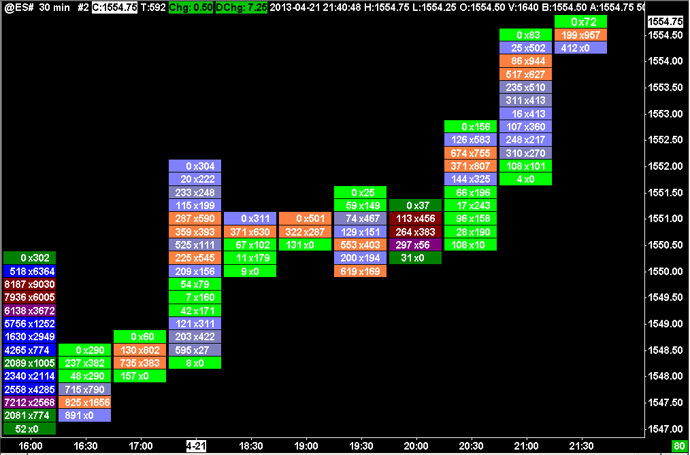{kind=link}
- Introduction
- Definitions
- Step-By-Step Instructions
- Example Numbers Bars Chart
- Scaling a Numbers Bars Chart
- Adjusting Tick Size For Larger Increment
- Numbers Bars Text Types
- Numbers Bars Background Types
- Numbers Bars Background Coloring Methods
- Numbers Bars Text Coloring Methods
- Using Text and Background Coloring Methods at Same Time
- Text Not Appearing
- Input Settings for Numbers Bars
- Column # Numbers Bars Text
- Column # Background Type
- Column # Background Coloring Method
- Column # Text Coloring Method
- Column # Range 3 Up Color
- Column # Range 2 Up Color
- Column # Range 1 Up Color
- Column # Range 0 Up Color
- Column # Range 0 Down Color
- Column # Range 1 Down Color
- Column # Range 2 Down Color
- Column # Range 3 Down Color
- Pullback Column # Numbers Bars Text
- Pullback Column # Background Type
- Pullback Column # Background Coloring Method
- Pullback Column # Text Coloring Method
- Default Text Color
- Color Non-Dominant Ask/Bid Text Same as Opposing Side
- Highlight Minimum Value In
- Minimum Highlight Color
- Minimum Highlight Line Width
- Highlight Maximum Value In
- Maximum Highlight Color
- Maximum Highlight Line Width
- Highlight Point Of Control In
- Point Of Control Highlight Color
- Point Of Control Highlight Line Width
- Highlight Equal Bid and Ask Volumes In
- Equal Bid and Ask Volumes Highlight Color
- Equal Bid and Ask Volumes Line Width
- Open and Close Marker Style
- Place Open Marker / Boxes In
- Place Close Marker In
- Open Marker / Up Box Color
- Close Marker / Down Box Color
- Single Value Text Alignment
- Bold/Highlight Last Trade Price
- Last Trade Bid Highlight Color
- Last Trade Ask Highlight Color
- Bid / Ask Bold Threshold
- Numbers Separator Character
- Font Size Mode
- Maximum Font Size for Automatic Font Size
- Minimum Font Size for Automatic Font Size
- Show Historical Pullback AskVolume BidVolume Difference
- Historical High Pullback Color
- Historical Low Pullback Color
- Historical Pullback Font Size
- Draw Historical Pullback Separator
- Determine Maximum/Minimum Values for Coloring From
- Determine Maximum/Minimum Values for Coloring From
- Column # Percent Compare Thresholds
- Bid/Ask Volume Text Threshold
- Bid/Ask Minimum Volume Compare Threshold
- Enable Diagonal Zero Bid/Ask Compares
- Highlight Maximum/Minimum Value Based On
- Highlight Maximum/Minimum Value Based On
- Column # Actual Compare Thresholds
- Candlestick Outline Width
- Pullback Column Right Offset in Pixels
- Volume Profile Bars Length Relative to All Visible Bars
- Use Separate Colors for Text Coloring Method
- Range 3 Up Color for Text
- Range 2 Up Color for Text
- Range 1 Up Color for Text
- Range 0 Up Color for Text
- Range 0 Down Color for Text
- Range 1 Down Color for Text
- Range 2 Down Color for Text
- Range 3 Down Color for Text
- Highlight Nonzero Bid&Ask Volume at High/Low
- Highlight Nonzero Bid&Ask at High/Low in Pullback Columns
- Highlight Nonzero Bid&Ask at High/Low Threshold
- Use Large Volume Number Formatting
- Default Background Color
- Require 1 Tick Intraday Data Storage Time
- Outline Width For Background Types
- Ignore 0 Values for Minimum Highlight
- Ignore High and Low Prices for Highlight Minimum Value In
- Volume Display Multiplier
- Spacing Adjustment Value
- Color Settings and Logic for Numbers Bars
- Background Coloring Methods Logic
- Background Coloring Based on Volume Percentage
- Background Coloring Based on Trades Percentage
- Background Coloring Based on AskVol/BidVol Percentage
- Background Coloring Based on Dominant AskVol BidVol To Volume At Price Percentage
- Background Coloring Based on Above/At or Below Last
- Background Coloring Based on Dominant Side AskVol BidVol Percentage
- Background Coloring Based on Diagonal Dominant Side AskVol BidVol Percentage
- Background Coloring Based on Diagonal Dominant AskVol BidVol to Volume at Price Percentage
- Background Coloring Based on Diagonal Dominant AskVol BidVol Difference - Actual
- Background Coloring Based on AskVol BidVol Diagonal Difference Percentage of Bar Range
- Background Coloring Based on Volume - Actual
- Background Coloring Based on Trades - Actual
- Background Coloring Based on Dominant AskVol BidVol - Actual
- Background Coloring Based on AskVol BidVol Difference - Actual
- Background Coloring Based on Separate Ask Volume Bid Volume - Actual
- Background Coloring Based on Separate Diagonal AskVol BidVol Percentage
- Background Coloring Based on Separate AskVol BidVol Percentage
- Background Coloring Based on Dominant Total Volume - Actual
- Background Coloring Based on AskVol BidVol Difference Percentage of Max Dominant Side
- Background Coloring Based on Diagonal Dominant AskVol BidVol - Actual
- Text Coloring Methods Logic
- Text Coloring Based on Volume Percentage
- Text Coloring Based on Trades Percentage
- Text Coloring Based on AskVol/BidVol Percentage
- Text Coloring Based on Dominant AskVol BidVol To Volume At Price Percentage
- Text Coloring Based on Above/At or Below Last
- Text Coloring Based on Dominant Side AskVol BidVol Percentage
- Text Coloring Based on Diagonal Dominant Side AskVol BidVol Percentage
- Text Coloring Based on Diagonal Dominant AskVol BidVol to Volume at Price Percentage
- Text Coloring Based on Diagonal Dominant AskVol BidVol Difference - Actual
- Text Coloring Based on AskVol BidVol Diagonal Difference Percentage of Bar Range
- Text Coloring Based on Volume - Actual
- Text Coloring Based on Trades - Actual
- Text Coloring Based on Dominant AskVol BidVol - Actual
- Text Coloring Based on AskVol BidVol Difference - Actual
- Text Coloring Based on Separate Ask Volume Bid Volume - Actual
- Text Coloring Based on Separate Diagonal AskVol BidVol Percentage
- Text Coloring Based on Separate AskVol BidVol Percentage
- Text Coloring Based on Dominant Total Volume - Actual
- Text Coloring Based on AskVol BidVol Difference Percentage of Max Dominant Side
- Text Coloring Based on Diagonal Dominant AskVol BidVol - Actual
- Background Coloring Methods Logic
- Diagonal Comparison of Bid Volume and Ask Volume
- Pullback Column
- Example Charts
- Font Size and Style for Numbers Bars
- Drawing Open to Close Boxes on Side of Numbers Bar
- Zero Volume Values and Repeating Volume Values
- Numbers Bars Accuracy / Values in Numbers Bars are Not Accurate
- Volume Filtering
- Using Numbers Bars on a Reversal Bars Chart
- Reset Study to Default Settings
- Study to Display Total Bid Volume, Ask Volume, and Difference per Bar
- Using Multiple Numbers Bars Studies on the Same Chart
- Display Ask Bid Imbalance
- Highlight Multiple Adjacent Bid or Ask Dominant Prices (Stacked Imbalance) (Opens in new page)
- Displaying Numbers Bars In Another Region
- Displaying Numeric Information Below Numbers Bars
- Numbers Bars Calculated Values Input Descriptions
- Calculated Values Number Format
- Customizing the Calculated Values Rows Display Order
- Subgraph Descriptions
- Numbers Bars Calculated Values 2 Subgraph Descriptions
- Referencing Numbers Bars Calculated Values Subgraphs in Alert Formulas
- Calculated Values Background Coloring Logic
- Overlaying a Numbers Bars Calculated Values Study from Another Chart
Introduction
The Numbers Bars feature in Sierra Chart is a study that provides a very detailed view of the volume and trading activity within each individual bar in the chart. The regular price bars are replaced with up to 3 columns of numbers. There is a separate number or pair of numbers for each price level for each bar/column in the chart detailing the volume activity at that price level.
The numbers within a Numbers Bar can represent the difference between the Ask Volume and Bid Volume at each price level, the total Volume or number of Trades at each price level, the Ask Volume and Bid Volume at each price level, and other values. These bars reveal very detailed trading activity within a bar.
The Numbers Bars study can be configured to display multiple columns of data for each price bar. Each column can be configured to display different data. For example, the difference or delta between Ask Volume and Bid Volume, and another column can be configured to display the Ask Volume and Bid Volume individually.
The Numbers Bar study is highly configurable and there are numerous coloring options.
The Numbers Bars study only functions properly on Intraday charts. It cannot be used on Historical Daily charts.
The data records in the Intraday chart data file for the symbol need to be 1 Tick when using Numbers Bars. Otherwise, the displayed Numbers Bars data will be less accurate.
The Numbers Bars study does *not* require what is known as Market Depth data.
To get started using the Numbers Bars study, refer to Step-By-Step Instructions.
Numbers bars is also known as "Footprint" in other charting programs.
Definitions
This section gives definitions for various terms used on this page.
- Numbers Bar: A single column in the chart indicating various calculations at each price level.
- Bid: When the market is open for a symbol that can be traded, it will provide a Bid price. This is the current highest price that someone in the marketplace is willing to pay to complete a buy transaction for the symbol.
- Ask: When the market is open for a symbol that can be traded, it will provide an Ask price. This is the current lowest price that someone in the marketplace is willing to sell at to complete a sell transaction for the symbol.
- Trade: An agreement between a buyer and seller to take each side of a futures contract or to exchange stock shares. This also applies to other types of tradables. A single trade has a volume indicating the quantity of that trade. In the documentation, the term Trades is used to indicate the number of trades at a particular Numbers Bar price level or for a period of time. A single trade can have a Quantity or Volume which is greater than 1. Therefore, there is a difference between the number of trades at a price level and the quantity or volume of those trades at a price level.
- Tick : Tick has the same definition as Trade.
- Bid Trade [Link]: This is a Trade which is considered to have occurred at the Bid price. A Trade is considered to occur at the Bid price for one of the following reasons. Once one of these is true, there is no further evaluation of whether the Trade occurred at the Bid.
- The exchange or data feed has indicated the Trade has occurred at the Bid. If this is supported, this is the most accurate determination. In the case of the CME Group data from the Denali Exchange Data Feed, this is the method used. So there is 100% accuracy with this. This method is not used with CQG.
- The price of the Trade is at the Bid price or lower.
- The trade occurred between the Bid and the Ask and the Trade direction is a downtick and the Bid direction is a downtick.
- The Trade occurred between the Bid and the Ask and it is closer to the Bid.
- There has been no change in the last Trade price, and the last Trade was considered a Bid trade.
- The final determination is if the Trade direction is a downtick.
- The determination of whether a trade is at the Bid price, is not in any way affected by time stamping. The method of the determination is as explained above.
- Ask Trade [Link]: This is a Trade which is considered to have occurred at the Ask price. A Trade is considered to occur at the Ask price for one of the following reasons. Once one of these is true, there is no further evaluation of whether the Trade occurred at the Ask.
- The exchange or data feed has indicated the Trade has occurred at the Ask. If this is supported, this is the most accurate determination. In the case of the CME Group data from the Denali Exchange Data Feed, this is the method used. So there is 100% accuracy with this. This method is not used with CQG.
- The price of the Trade is at the Ask price or higher.
- The trade occurred between the Bid and the Ask and the Trade direction is an uptick and the Ask direction is an uptick.
- The Trade occurred between the Bid and the Ask and it is closer to the Ask.
- There has been no change in the last Trade price, and the last Trade was considered a Ask trade.
- The final determination is if the Trade direction is an uptick.
- The determination of whether a trade is at the Ask price, is not in any way affected by time stamping. The method of the determination is as explained above.
- Alternative Bid Trade / Ask Trade: In the case of HKFE, cash index symbols, the following method is how a trade is determined to be at the Bid or Ask price. In the case of exchange traded futures, although a trade must always occur at the Bid or Ask price, based upon the transmission of the Bid/Ask data from the exchange, often there is no synchronization between this Bid/Ask data and trades.
This is why this special algorithm is used. If the last trade price is the exact same price as previously, then if this price is equal to the current known Bid price, then it is considered a Bid Trade. If this price is equal to the current known Ask price, then it is considered an Ask Trade. Else if the last trade is an uptick or was previously an uptick, then the trade is considered to be an Ask Trade. If the last trade is a downtick or was previously a downtick, then the trade is considered to be a Bid Trade.
This section does not apply to IQ Feed data. - Bid Volume / Bid Trade Volume: This is the sum of all traded volume, not the number of trades, rather the number of contracts or shares traded, for a Numbers Bar price level or for period of time, that were Bid Trades (see description above).
- Ask Volume / Ask Trade Volume: This is the sum of all traded volume, not the number of trades, rather the number of contracts or shares traded, for a Numbers Bar price level or for period of time, that were Ask Trades (see description above).
- Delta: Sierra Chart does not normally use this term, since it is to generalized. Typically this means the difference between Ask Volume and Bid Volume at a particular Numbers Bar price level or for a period of time.
- Volume: The total quantity of futures contracts or stock shares traded at a particular Numbers Bar price level, or for a period of time. The Daily Volume for a symbol is the exchange reported Trade volume for the symbol for the trading day.
- Dominant Side: When comparing the Bid Volume and Ask Volume at a price level, the side with the larger value is considered the dominant side.
- Diagonal Dominant Side: Diagonal Dominant Side is similar to Dominant Side. The difference is the Bid Volume at one price level is compared diagonally to the Ask Volume at the next higher price level. And the Ask Volume is compared to the Bid Volume at the next lower price level.
The side with the larger value is the dominant side. Within a single price level, both the Bid Volume and Ask Volume could be dominant due to the diagonal comparisons of two different price levels.
Within a bar, the highest Bid Volume and lowest Ask Volume are never dominant because there is nothing to compare against higher or lower respectively. - Tick Size : Every symbol that can be traded has a Tick Size. The Tick Size for a symbol is the minimum value that the price for that symbol can change by. For example, the S&P ES futures has a Tick Size of .25.
- Market Depth Data: Market Depth data is data provided by an exchange that contains the quantities of Buy and Sell limit orders currently in the market at price levels nearby the current market price. Market Depth data is usually anywhere from 5 to 20 levels deep. The Numbers Bars study has no dependency on Market Depth data. Numbers Bars only requires the best Bid and Ask price. Any study in Sierra Chart that has a dependency on Bid Volume and Ask Volume, has no dependency on Market Depth data. They only require the best Bid and Ask price. Therefore, Market Depth data is not required for Numbers Bars or any study dependent on Bid Volume or Ask Volume.
Step-By-Step Instructions
- Your Sierra Chart account needs to have the Numbers Bars study feature. To change your Sierra Chart service package, select Help >> Account Control Panel on the menu. Click on the Set Service Package For Renewal link on the displayed webpage and follow the instructions to set the Usage Time Service Package to 5 (Advanced). After you change your service package, you will need to restart Sierra Chart.
- The data records in the Intraday chart data file for the symbol need to be 1 Tick when using Numbers Bars. Otherwise, the displayed Numbers Bars data will be less accurate. For instructions to set this, refer to Tick by Tick Data Configuration.
- Select Chart >> Chart Settings.
- Set Days to Load/Display to a small number, like 7, to reduce the amount of time it takes to load chart data due to the additional volume processing required when using Numbers Bars.
- Set the Tick Size if it is not set correctly. This is the minimum increment that the symbol trades in. In the case of foreign exchange symbols, this value should not be too small, otherwise it will increase the amount of time to build the Numbers Bars.
- Press OK to close the Chart Settings window.
- Select Analysis >> Studies on the menu.
- In Studies Available list, select the Numbers Bars study.
- Press the Add button.
- Press the Settings button.
- Select the Settings and Inputs tab. 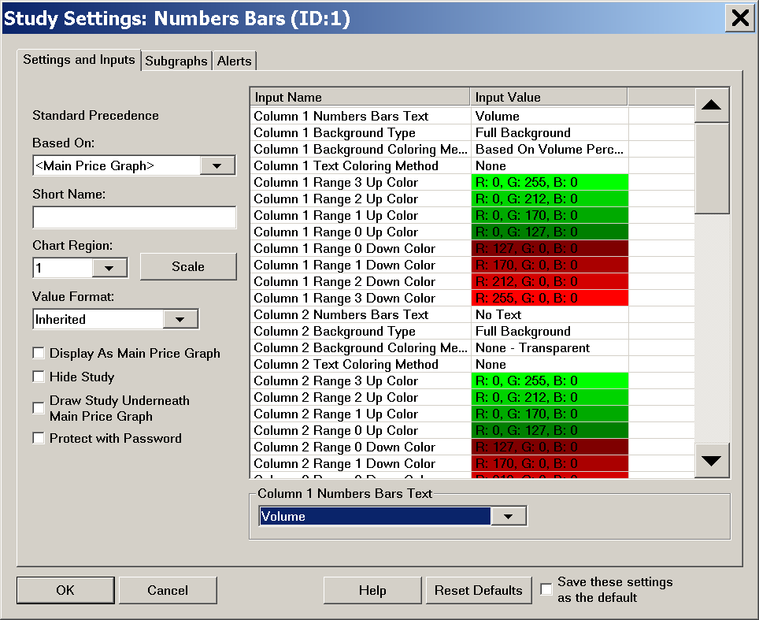
- The Numbers Bars study supports the ability to configure up to 3 Numbers Bars columns per underlying chart bar. For example, if the chart bars are set to 10 minutes per bar, it is possible to define 3 Numbers Bars columns showing data for each 10 minute bar. You will notice in the list of Inputs for Numbers Bars study, 3 sets of Inputs, one for each column. These are numbered 1 through 3.
- Configure the Column # Numbers Bars Text for each of the 3 Numbers Bars columns you want to use. Numbers Bars can contain 1-3 columns of information. For each of the three columns, select one of the choices. For descriptions of each text type refer to Numbers Bars Text Types. If you only want to display a single column, then set Column 1 Numbers Bars Text to the Text type that you require and the other columns need to be set to No Text.
- Configure the Column # Background Type for each of the 3 Numbers Bars columns you want to use. For details of each type, refer to Numbers Bars Background Types.
- Configure the Column # Background Coloring Method for each of the 3 Numbers Bars columns you want to use. For details of each method, refer to Numbers Bars Background Coloring Methods.
Refer to Color Settings and Logic for Numbers Bars for descriptions of the various color settings that are used with these Background Coloring Methods. - Configure additional Numbers Bars Inputs as required. For detailed descriptions for each of the available Inputs, refer to Input Settings for Numbers Bars.
- Press OK. Press OK.
- You will now see the Numbers Bars on the chart so long as the necessary historical data is available. This requires historical tick by tick data with Bid Trade Volume and Ask Trade Volume. Refer to the Services That Support Bid Volume and Ask Volume section to know what Data or Trading services have the proper historical data for Numbers Bars.
- Due to the nature of Numbers Bars you probably will have to change the horizontal and vertical scaling to get a readable view. Refer to the Scaling a Numbers Bars Chart section for instructions. This is a very important step that must not be overlooked.
- To change the the Font, Font Style, and Font Size refer to the Font Size and Style for Numbers Bars section.
{kind=link}
Example Numbers Bars Chart
To help get started with using Numbers Bars, Sierra Chart has created an example Chartbook that contains a chart with the Numbers Bars and Numbers Bars Calculated Values studies.
This Chartbook can be used to help get started with the use of the Numbers Bars and to help understand how the various Inputs to the studies can be used to highlight different sets of values.
To use this Chartbook, follow these instructions:
- Left-click on the following link to access the file: NumbersBarsExampleChartbook.cht.
- Your Operating System should prompt you for where you want to save the file. It needs to be saved to the Sierra Chart Data Files Folder. To determine the location of the Data Files Folder, select Global Settings >> General Settings. Look in the Data Files Folder box. This is where you need to save the Chartbook file from your web browser.
- Go to Sierra Chart and select File >> Open Chartbook.
- Select the NumbersBarsExampleChartbook.cht Chartbook and press the Open button.
- Select Chart >> Chart Settings and enter an appropriate symbol in the Symbol box, or select the Find button to open the Find Symbol window and select an appropriate symbol from that window.
Scaling a Numbers Bars Chart
Due to the nature of Numbers Bars charts you probably will have to change the horizontal and vertical scaling to avoid the numbers in the Numbers Bars from overlapping (refer to image below), or to get the visual appearance that you require. Follow these instructions below.
{kind=link}
- Select Chart >> Chart Settings >> Scale. Make sure the Scale Range Type is set to Automatic. This step is not necessary unless you have previously changed the Scale.
- Confirm that the Scale Range Type for the Numbers Bars study is set to Automatic. To do this, refer to Opening the Scale Window For a Study documentation. This step is not necessary unless you have previously changed the Scale for this study.
- Right-click on the Values Scale of numbers on the right side of the chart and select Reset.
- Increase the chart bar/column spacing (horizontal scaling) by pressing the Control Bar button that increases the spacing between the bars in the chart until you get a clear view of the numbers.
These are all of the available Control Bar buttons that change bar spacing: . You can also press the Up Arrow key on your keyboard. For complete instructions, refer to the Changing Spacing documentation on the Working With Charts page.
. You can also press the Up Arrow key on your keyboard. For complete instructions, refer to the Changing Spacing documentation on the Working With Charts page.
Alternatively, reduce the bar spacing in the chart if the Numbers Bars columns are to far apart which will cause the Numbers Bars columns to be too wide. - Right-click on the Values Scale on the right of the chart and select Interactive Scale Range. If necessary click and drag down on the Values Scale to expand the chart so that the numbers within the bars are easier to view. When you do this, it will cause the Numbers Bars to be expanded beyond the top and bottom of the chart.
What you can then do in this case is move the chart up and down to see all of the bars. To do this, right click on the Values Scale on the right and select Interactive Scale Move. You can then click and drag on the Values Scale to move the chart up and down. For additional information about these types of scale changes, refer to the Interactive Scaling documentation. - Once you get a reasonable view of the Numbers Bars, the next step is to choose the most appropriate font for the chart. Refer to Font Size and Style for Numbers Bars.
- You may want to save the Chartbook by selecting File >> Save.
Adjusting Tick Size For Larger Increment
In this image below, we see Numbers Bars that have overlapping price levels because the range of prices displayed contains a large number of price levels based upon the chart Tick Size.
There is insufficient space to clearly display each price level without overlapping. One effect of overlapping price levels is sometimes based upon the density of those levels, that nothing appears at all for some price levels.
{kind=link}
In the case of a severe overlap like we see above, the solution to this is to increase the Tick Size in Chart >> Chart Settings >> Symbol. For example, it can be increased by 4 to 10 times or higher. Even 100 times may be necessary. In this particular case, we have increased it by 10 times. See the result below.
{kind=link}
Another solution is to right-click on the Values Scale on the right side of the chart and select Interactive Scale Range. Left click and drag down on the Values Scale to expand the chart so that the numbers within the bars are easier to view. When you do this, it will cause the Numbers Bars to be expanded beyond the top and bottom of the chart.
What you can then do in this case is move the chart up and down to see the top and bottom of the chart bars. To do this, right click on the Values Scale on the right of the chart and select Interactive Scale Move. Left click and drag on the Values Scale to move the chart up and down. For additional information , refer to the Interactive Scaling documentation.
Another solution you could use is to increase the Volume at Price Multiplier in Chart >> Chart Settings.
Numbers Bars Text Types
This section describes the Column # Numbers Bars Text study Input. This Input setting determines the specific text which is displayed at each price level within a Numbers Bar.
For instructions to modify the Column # Numbers Bars Text Input, refer to the Step-By-Step Instructions.
- No Text: When No Text is selected, then there is no Numbers Bar column displayed.
- Ask Vol Bid Vol Difference (AskVolume BidVolume Difference): This Numbers Bars Text type displays the difference between AskVolume and BidVolume for each price within the Numbers Bar.
- Volume: This Numbers Bars Text type displays the Total Volume for each price within the Numbers Bar.
- Trades: This Numbers Bars Text type displays the Number of Trades for each price within the Numbers Bar.
- Bid Vol x Ask Vol (Bid Volume by Ask Volume): This Numbers Bars Text type displays the Bid Volume and Ask Volume separated by an x, |, space, or two spaces character(s), for each price within the Numbers Bar.
- Dominant Side Volume Percent: This Numbers Bars Text type displays a percentage and it is calculated as follows:
When Ask Volume is greater than the Bid Volume at a price level within the Numbers Bar, then this will be a positive percentage. This percentage represents what the Ask Volume is percentagewise of the sum of the Ask Volume and Bid Volume for the price level within the Numbers Bar.
When Bid Volume is greater than the Ask Volume at a price level within the Numbers Bar, then this will be a negative percentage. This percentage represents what the Bid Volume is percentagewise of the sum of the Ask Volume and Bid Volume for the price level within the Numbers Bar. - Price: This Numbers Bars Text displays the actual price for each price within the Numbers Bar.
- Ask Vol Bid Vol Difference Diagonal (Ask Volume Bid Volume Difference Diagonal): This Numbers Bars Text type displays 2 values at each price level.
Left Value: Ask Volume at Next Price level - Bid Volume at Price level.
Right Value: Ask Volume at Price level - Bid Volume at Previous Price level.
In the case where there is a comparison to a Bid or Ask level which does not exist above or below the Numbers Bar, then the resulting value is 0.
It may be useful to display the Bid Vol x Ask Vol Text Type in a second Numbers Bars column by setting the Column 2 Numbers Bars Text Input to this Text Type.
Numbers Bars Background Types
This section describes the Column # Background Type study Input. These settings affect how the background of a price level within a Numbers Bar is filled in.
For instructions to modify the Column # Background Type Input, refer to the Step-By-Step Instructions.
- Full Background: This background type fills the entire background of a price level within a Numbers Bar.
- Background on Dominant Side (Supports Separate Bid and Ask Coloring): The functioning of this background type is affected by the Numbers Bars Background Coloring Methods. This background type fills 50% of the background of a price level within a Numbers Bar, either the Bid Side, Ask Side or both, depending on which side is the dominant side.
This setting is only meaningful if the Column # Background Coloring Method is set to one of the Dominant Side or Diagonal Dominant Side Coloring Methods. - Background on Dominant Side Outline: (Supports Separate Bid and Ask Coloring): The functioning of this background type is affected by the Numbers Bars Background Coloring Methods. This background type outlines 50% of a price level within a Numbers Bar, either the Bid Side, Ask Side or both, depending on which side is the dominant side.
This setting is only meaningful if the Column # Background Coloring Method is set to one of the Dominant Side or Diagonal Dominant Side Coloring Methods. - Volume Profile: This background type fills the background for a price level based upon the volume at the price level compared to the maximum volume among all of the price levels within the Numbers Bar.
- Volume Profile Outline: This is identical to Volume Profile , except that only an outline is drawn instead of filling the price level.
- Right Aligned Volume Profile: This is identical to Volume Profile , except that the Volume Profile fill is right aligned.
- Right Aligned Volume Profile Outline: This is identical to Volume Profile, except that only an outline is drawn instead of filling the price level and this outline is right outlined
- Ask Bid Difference Profile: This background type will calculate the difference between Ask Volume and Bid Volume and color the width of the background of the price levels within the Numbers Bar based upon this difference, relative to the maximum difference. This will give a Volume Profile appearance.
When highlighting the Point of Control, the price level with the greatest volume may not necessarily be the largest vertical bar based upon this background type. - Ask Bid Difference Profile Outline: This is identical to the Ask Bid Difference Profile, except that only the outline of the volume difference profile is drawn, instead of filling the price level.
- Right Aligned Ask Bid Difference Profile: This is identical to Aask Bid Difference Profile, except that the volume difference profile is right aligned.
- Right Aligned Ask Bid Difference Profile Outline: This is identical to Ask Bid Difference Profile, except that only the outline of the volume difference profile is drawn, instead of filling the price level and the volume difference is right aligned.
- Ask/Bid Volume Split Profile (Supports Separate Bid and Ask Coloring): This background type draws separate Volume Profiles for Bid volume and Ask volume. The Bid volume is on the left side and the Ask volume is on the right side. The base of the Volume Profiles is along the center of the Numbers Bar.
Both the Ask and Bid Volume profiles are built independently. The profile widths are built by looking at the percentage of the Bid Volume/Ask Volume versus the maximum Bid Volume/Ask Volume depending on whether the profile is for Bid Volume or Ask Volume. - Ask/Bid Volume Split Profile Outline (Supports Separate Bid and Ask Coloring): This is identical to the Ask/Bid Volume Split Profile except only the outline of the Volume Profiles are drawn, instead of filling the price level.
- Volume Profile Across All Columns: This background type is identical to the Volume Profile background type except that the bars extend across all the Numbers Bars columns if you are using more than one column per price bar.
- Volume Profile Outline Across All Columns: This is identical to the Volume Profile Across All Columns, except that only an outline is drawn for the Volume Profiles, instead of filling the price level.
- Ask/Bid Volume Split Profile Across Bid & Ask (Supports Separate Bid and Ask Coloring): This background type is similar to Ask/Bid Volume Split Profile, however it uses the maximum value across price levels for both the Bid and Ask sides to determine the bar widths.
- Ask/Bid Volume Split Profile Across Bid & Ask Outline (Supports Separate Bid and Ask Coloring): Same as Ask/Bid Volume Split Profile Across Bid & Ask, except that only an outline is drawn for the Volume Profiles, instead of filling in the price level.
Numbers Bars Background Coloring Methods
This section documents the Column # Background Coloring Method study Input. The Background Coloring Method controls the application of colors to each price level within the Numbers Bar. There are multiple formulas to choose from. They are documented below.
For instructions to modify the Column # Background Coloring Method Input, refer to the Step-By-Step Instructions.
- None (Transparent): This setting means there is no background coloring for each price level in the Numbers Bar. The text will be displayed directly on the chart background color.
- Based on Volume Percentage: This setting uses the Volume at Price in comparison to the maximum value of volume across all prices for the bar. Refer to the Background Coloring Based On Volume Percentage Color Settings and Logic section for more information.
- Based on Trades Percentage: This setting uses the Trades at Price versus the maximum value of trades across all prices for the bar. Refer to the Background Coloring Based On Trades Percentage Color Settings and Logic section for more information.
- Based on AskVol/BidVol Percentage: This setting uses the Ask or Bid volume at Price versus the maximum value of Ask or Bid volume across all prices for the bar. Refer to the Background Coloring Based On AskVol BidVol Percentage Color Settings and Logic section for more information.
- Based on Dominant AskVol BidVol To Volume at Price Percentage: This setting uses the Ask or Bid volume at Price versus the total volume at Price. Refer to the Background Coloring Based on Dominant AskVol BidVol to Volume at Price Percentage Color Settings and Logic section for more information.
- Based on Above/At or Below Last: This setting uses the current price versus the Last price. Refer to the Background Coloring Based on Above/At or Below Last Color Settings and Logic section for more information.
- Based on Dominant Side AskVol BidVol Percentage: This setting uses the Ask or Bid volume at Price versus the Bid or Ask Volume at Price. Refer to the Background Coloring Based on Dominant Side AskVol BidVol Percentage Color Settings and Logic section for more information.
- Based on Diagonal Dominant Side AskVol BidVol Percentage: This setting uses the Ask or Bid volume at Price versus the Previous Bid or Next Ask Volume at Price. Refer to the Background Coloring Based on Diagonal Dominant Side AskVol BidVol Percentage Color Settings and Logic section for more information.
- Based on Diagonal Dominant AskVol BidVol to Volume at Price Percentage: This setting uses the Bid or Ask Volume at Price versus the total of diagonal Bid and Ask Volume. Refer to the Background Coloring Based on Diagonal Dominant AskVol BidVol to Volume at Price Percentage Color Settings and Logic section for more information.
- Based on Diagonal Dominant AskVol BidVol Difference - Actual: This setting uses the Ask Volume at Price minus the Bid Volume at the previous price. Refer to the Background Coloring Based on Diagonal Dominant AskVol BidVol Difference - Actual Color Settings and Logic section for more information.
- Based on AskVol BidVol Diagonal Difference Percentage of Bar Range: This setting uses the volume difference between the Ask or Bid Volume at Price and the Bid or Ask Volume at the previous or next price divided by the range of diagonal volumes within the bar. Refer to the Background Coloring Based on AskVol BidVol Diagonal Difference Percentage of Bar Range Color Settings and Logic section for more information.
- Based on Volume - Actual: This setting uses the volume at price. Refer to the Background Coloring Based on Volume - Actual Color Settings and Logic section for more information.
- Based on Trades - Actual: This setting uses the trades at price. Refer to the Background Coloring Based on Trades - Actual Color Settings and Logic section for more information.
- Based on Dominant AskVol BidVol - Actual: This setting uses the Ask Volume or Bid Volume at price. Refer to the Background Coloring Based on Dominant AskVol BidVol - Actual Color Settings and Logic section for more information.
- Based on AskVol BidVol Difference - Actual: This setting uses the difference of the Ask volume at price to the Bid volume at price. Refer to the Background Coloring Based on AskVol BidVol Difference - Actual Color Settings and Logic section for more information.
- Based on Separate Ask Volume Bid Volume - Actual: This setting uses the Ask Volume or Bid Volume at price and allows for separate coloring of the Ask Volume and Bid Volume. Refer to the Background Coloring Based on Separate Ask Volume Bid Volume - Actual Color Settings and Logic section for more information.
- Based on Separate Diagonal AskVol BidVol Percentage: This setting uses the diagonal comparison of Bid and Ask to determine dominance, and displays the coloring range based on a particular side Ask or Bid volume at price compared to the largest Ask or Bid volume within the bar to give a percentage of Ask or Bid volume. Refer to the Background Coloring Based on Separate Diagonal AskVol BidVol Percentage Color Settings and Logic Section for more information.
- Based on Separate AskVol/BidVol Percentage: This setting uses the Ask Volume or Bid Volume at a price level in comparison to the largest Ask Volume or Bid Volume across all prices to give a percentage of Ask or Bid Volume and allows for separate coloring of the Ask Volume and Bid Volume based on this percentage. Refer to the Background Coloring Based on Separate AskVol/BidVol Percentage Color Settings and Logic Section for more information.
- Based on Dominant Total Volume - Actual: This setting uses a comparison at a price level to determine dominance and then displays the coloring range based on the total volume at that price level. Refer to the Background Coloring Based on Dominant Total Volume - Actual Color Settings and Logic Section for more information.
- Based on AskVol BidVol Difference Percentage of Max Dominant Side: This setting uses a comparison of the Ask Volume minus Bid Volume (Delta) at a price level in comparison to the largest Delta in the entire bar for the dominant side at that price level. Refer to the Background Coloring Based on AskVol BidVol Difference Percentage of Max Dominant Side Color Settings and Logic Section for more information.
- Based on Diagonal Dominant AskVol BidVol - Actual: This setting uses the diagonal comparison of Bid and Ask to determine dominance, and displays the coloring range based on the actual value of Bid or Ask volume at that price level. Refer to the Background Coloring Based on Diagonal Dominant ASkVol BidVol - Actual Color Settings and Logic Section for more information
In order to view the data that drives the coloring of Numbers Bars that reference Dominant or Diagonal, set the Column # Numbers Bars Text to BidVol x AskVol. Refer to section Text Types for more information.
Numbers Bars Text Coloring Methods
This section describes the Column # Text Coloring Method study Input. The Text Coloring Method controls the coloring of the text at each price level within the Numbers Bar.
The coloring of the Numbers Bars Text is dependent on the Use Separate Colors for Text Coloring Method Input setting. When this is set to Yes, the Numbers Bars Text coloring will use the Range # Up Color for Text or Range # Down Color for Text as appropriate. This allows the text to be seen on top of any background coloring that may be used for the Numbers Bar.
For instructions to modify the Column # Text Coloring Method Input, refer to the Step-By-Step Instructions.
- None (Transparent): This setting means there is no special text coloring for each price level in the Numbers Bar. The Default Text Color Input setting controls the color of the text.
- Based on Volume Percentage: This setting uses the Volume at Price in comparison to the maximum value of volume across all prices for the bar. Refer to the Text Coloring Based On Volume Percentage Color Settings and Logic section for more information.
- Based on Trades Percentage: This setting uses the Trades at Price versus the maximum value of trades across all prices for the bar. Refer to the Text Coloring Based On Trades Percentage Color Settings and Logic section for more information.
- Based on AskVol/BidVol Percentage: This setting uses the Ask or Bid volume at Price versus the maximum value of Ask or Bid volume across all prices for the bar. Refer to the Text Coloring Based On AskVol BidVol Percentage Color Settings and Logic section for more information.
- Based on Dominant AskVol BidVol To Volume at Price Percentage: This setting uses the Ask or Bid volume at Price versus the maximum volume across all prices for the bar. Refer to the Text Coloring Based on Dominant AskVol BidVol to Volume at Price Percentage Color Settings and Logic section for more information.
- Based on Above/At Below Last: This setting uses the current price versus the Last price. Refer to the Text Coloring Based On Above/At Below Last Color Settings and Logic section for more information.
- Based on Dominant Side AskVol BidVol Percentage: This setting uses the Ask or Bid volume at Price versus the Bid or Ask Volume at Price. Refer to the Text Coloring Based on Dominant Side AskVol BidVol Percentage Color Settings and Logic section for more information.
- Based on Diagonal Dominant Side AskVol BidVol Percentage: This setting uses the Ask or Bid volume at Price versus the Previous Bid or Next Ask Volume at Price. Refer to the Text Coloring Based on Diagonal Dominant Side AskVol BidVol Percentage Color Settings and Logic section for more information.
- Based on Diagonal Dominant AskVol BidVol to Volume at Price Percentage: This setting uses the Bid or Ask Volume at Price versus the maximum value of Bid and Ask Volume. Refer to the Text Coloring Based on Diagonal Dominant AskVol BidVol to Volume at Price Percentage Color Settings and Logic section for more information.
- Based on Diagonal Dominant AskVol BidVol Difference - Actual: This setting uses the Ask Volume at Price minus the Bid Volume at the previous price. Refer to the Text Coloring Based on Diagonal Dominant AskVol BidVol Difference - Actual Color Settings and Logic section for more information.
- Based on AskVol BidVol Diagonal Difference Percentage of Bar Range: This setting uses the volume difference between the Ask or Bid Volume at Price and the Bid or Ask Volume at the previous or next price divided by the range of diagonal volumes within the bar. Refer to the Text Coloring Based on AskVol BidVol Diagonal Difference Percentage of Bar Range Color Settings and Logic section for more information.
- Based on Volume - Actual: This setting uses the volume at price. Refer to the Text Coloring Based on Volume - Actual Color Settings and Logic section for more information.
- Based on Trades - Actual: This setting uses the trades at price. Refer to the Text Coloring Based on Trades - Actual Color Settings and Logic section for more information.
- Based on Dominant AskVol BidVol - Actual: This setting uses the Ask Volume or Bid Volume at price. Refer to the Text Coloring Based on Dominant AskVol BidVol - Actual Color Settings and Logic section for more information.
- Based on AskVol BidVol Difference - Actual: This setting uses the difference of the Ask volume at price to the Bid volume at price. Refer to the Text Coloring Based on AskVol BidVol Difference - Actual Color Settings and Logic section for more information.
- Based on Separate Ask Volume Bid Volume - Actual: This setting uses the Ask Volume or Bid Volume at price and allows for separate coloring of the Ask Volume and Bid Volume. Refer to the Text Coloring Based on Separate Ask Volume Bid Volume - Actual Color Settings and Logic section for more information.
- Based on Separate Diagonal AskVol BidVol Percentage: This setting uses the diagonal comparison of Bid and Ask to determine dominance, and displays the coloring range based on a particular side Ask or Bid volume at price compared to the largest Ask or Bid volume within the bar to give a percentage of Ask or Bid volume. Refer to the Text Coloring Based on Separate Diagonal AskVol BidVol Percentage Color Settings and Logic Section for more information.
- Based on Separate AskVol/BidVol Percentage: This setting uses the Ask Volume or Bid Volume at a price level in comparison to the largest Ask Volume or Bid Volume across all prices to give a percentage of Ask or Bid Volume and allows for separate coloring of the Ask Volume and Bid Volume based on their percentage. Refer to the Text Coloring Based on Separate AskVol/BidVol Percentage Color Settings and Logic Section for more information.
- Based on Dominant Total Volume - Actual: This setting uses a comparison at a price level to determine dominance and then displays the coloring range based on the total volume at that price level. Refer to the Text Coloring Based on Dominant Total Volume - Actual Color Settings and Logic Section for more information.
- Based on AskVol BidVol Difference Percentage of Max Dominant Side: This setting uses a comparison of the Ask Volume minus Bid Volume (Delta) at a price level in comparison to the largest Delta in the entire bar for the dominant side at that price level. Refer to the Text Coloring Based on AskVol BidVol Difference Percentage of Max Dominant Side Color Settings and Logic Section for more information.
Using Text and Background Coloring Methods at Same Time
It is supported to use both a Numbers Bars Text Coloring Method and the Numbers Bars Background Coloring Method for the same Numbers Bars column at the same time.
To do this, it is necessary to use separate coloring for the Text Coloring Method to distinguish the text coloring from the background coloring, which can be accomplished through the Use Separate Colors for Text Coloring Method and the Range # Up/Down Color for Text Inputs.
Text Not Appearing
If you are using both a Background Coloring Method and a Text Coloring Method at the same time and you no longer see the text displayed within the Numbers Bars either completely or in some places, then make sure to set the Use Separate Colors for Text Coloring Method Input to Yes.
And make sure to set different colors for the Range # Up/Down Color for Text Inputs compared to the Column # Range Up/down Color Input colors.
Input Settings for Numbers Bars
This section documents the study Input settings for the Numbers Bars study. For instructions to modify these Input settings, refer to the Step-By-Step Instructions.
Column # Numbers Bars Text
Refer to Numbers Bars Text Types.
Column # Background Type
Refer to Numbers Bars Background Types.
Column # Background Coloring Method
Refer to Numbers Bars Background Coloring Methods.
Column # Text Coloring Method
Refer to Numbers Bars Text Coloring Methods.
Column # Range 3 Up Color
Column # Range 2 Up Color
Column # Range 1 Up Color
Column # Range 0 Up Color
Column # Range 0 Down Color
Column # Range 1 Down Color
Column # Range 2 Down Color
Column # Range 3 Down Color
Pullback Column # Numbers Bars Text
Refer to Numbers Bars Text Types.
Pullback Column # Background Type
Refer to Numbers Bars Background Types.
Pullback Column # Background Coloring Method
Refer to Numbers Bars Background Coloring Methods.
Pullback Column # Text Coloring Method
Refer to Numbers Bars Text Coloring Methods.
Default Text Color
This Input controls the text color of the displayed values within each price level of a Numbers Bar. This Input only applies when the Column # Text Coloring Method is set to None.
Color Non-Dominant Ask/Bid Text Same as Opposing Side
This Input controls the coloring of non-dominant Ask/Bid text coloring when the Numbers Bars Text is displayed as Bid Vol x Ask Vol.
When this Input is set to Yes then the non-dominant Ask or Bid text, which would be colored the Default Text Color would instead be colored the same color as the opposing (same price) Bid/Ask text color. This coloring is always done at the same price level even when the Dominant determination is performed diagonally.
Highlight Minimum Value In
This Input controls the specific Numbers Bar column within the 3 available columns for underlying bar in the chart, where the highlighting of the minimum value at a price level, will be drawn.
The Highlight Maximum/Minimum Value Based On Input controls specifically what is highlighted.
When the Highlight Maximum/Minimum Value Based On Input is set to Bid Volume, Ask Volume, or Bid or Ask Volume, and there is a value of 0 within the bar for the particular volume type, then no highlight box will be drawn.
Minimum Highlight Color
This Input controls the color of the minimum value highlight.
Minimum Highlight Line Width
This Input controls the line width of the minimum value highlight.
Highlight Maximum Value In
This Input controls the specific Numbers Bar column within the 3 available columns for underlying bar in the chart, where the highlighting of the maximum value at a price level, will be drawn.
The Highlight Maximum/Minimum Value Based On Input controls specifically what is highlighted.
Maximum Highlight Color
This Input controls the color of the maximum value highlight.
Maximum Highlight Line Width
This Input controls the line width of the maximum value highlight.
Highlight Point Of Control In
This Input controls the specific Numbers Bar column within the 3 available columns for underlying bar in the chart, where the highlighting of the Point of Control, will be drawn. The Point of Control in a Numbers Bar is the price level where there is the greatest volume among all of the other price levels. The point of control is highlighted by drawing a rectangle around the price level.
There are six options available for where to draw the Point of Control Highlight:
- No Columns: This will not display the Point of Control Highlight.
- Column 1: This will display the Point of Control Highlight on the data in Column 1.
- Column 2: This will display the Point of Control Highlight on the data in Column 2.
- Column 3: This will display the Point of Control Highlight on the data in Column 3.
- All Columns: This will display the Point of Control Highlight on the data in all columns that are shown.
- Column 1 with Extension Line Until Future Intersection: This will display the Point of Control Highlight on the data in Column 1 and will also display a line extending to the right from the Point of Control location until it intersects with another bar at the same price.
- The Color, Line Style, and Width of the extension line can be controlled or modified on the Subgraph tab of the Numbers Bars Study page. Select the Line - POC Extension Lines Until Future Intersection subgraph and select the Color, Line Style, or Width/Size options to change the selected parameter.
Point Of Control Highlight Color
This Input controls the color of the highlighting of the price level which is the Point of Control.
Point Of Control Highlight Line Width
This Input controls the line width of the Point of Control highlight line.
Highlight Equal Bid and Ask Volumes In
This Input controls the specific Numbers Bar column within the 3 available columns for underlying bar in the chart, where the highlighting of Equal Bid and Ask Volumes will be drawn. Wnen enabled, the highlighting is done by drawing a rectangle around the price level.
This highlighting will only display, regardless of the setting for this Input, when the Column n Numbers Bars Text is set to Bid x Ask.
There are five options available for where to draw the Equal Bid and Ask Volumes Highlight:
- No Columns: This will not display the Equal Bid and Ask Volumes Highlight.
- Column 1: This will display the Equal Bid and Ask Volumes Highlight on the data in Column 1.
- Column 2: This will display the Equal Bid and Ask Volumes Highlight on the data in Column 2.
- Column 3: This will display the Equal Bid and Ask Volumes Highlight on the data in Column 3.
- All Columns: This will display the Equal Bid and Ask Volumes Highlight on the data in all columns that are shown.
Equal Bid and Ask Volumes Highlight Color
This Input controls the color of the Equal Bid and Ask highlighting of the price level when this highlighting is displayed.
Equal Bid and Ask Volumes Line Width
This Input controls the line width of the Equal Bid and Ask highlight line when this highlighting is displayed.
Open and Close Marker Style
This setting is for specifying the Open and Close marker style for a Numbers Bar. This controls the style of the marker indicating the Open price and the Close price of a Numbers Bar. It can be set to one of the following in the list below.
In the case of a Renko bar chart, the Open and Close represent the Renko Open and Close and not the true Open and Close of the bar. For more information, refer to Renko Open High Low Close Values.
In the case of when using Point and Figure XO Graph Draw Type for a chart, this will affect the display of the Open and Close Marker Style. Therefore, you should use Candlestick instead.
None
There is no style for the Open and Close Marker.
Arrows On Price
This setting will show arrows on the Numbers Bar price levels which indicate the Open and Close price. The arrow that is on the left side, represents the price of the Open for the bar. The arrow that is on the right side, represents the price of the Close for the bar.
Vertical Bars On Price
This setting will show narrow vertical bars on the Numbers Bar price levels which indicate the Open and Close price. The vertical bar that is on the left side, represents the price of the Open for the bar. The vertical bar that is on the right side, represents the price of the Close for the bar.
Open To Close Boxes
This setting will draw boxes from the Open price to the Close price of the Numbers Bar, along the left side of the Numbers Bar. The box coloring is set with the Open Marker / Up Box Color (for Up bars) and the Close Marker / Down Box Color (for Down bars) Color Input settings.
When choosing this option, you only need to set Place Open Marker / Boxes In to Column 1 or to whichever Numbers Bar column you want to display the boxes in. Since the boxes are only displayed on one side of the column the Place Close Marker setting is not used.
Candlestick Body Filled
This setting will draw a filled candlestick body from the Open price to the Close price using the Open Marker / Up Box Color for up bars and Close Marker / Down Box Color for down bars. Due to overlapping information, it is not recommended to use this option in combination with a Background Coloring.
The determination of whether a Candlestick bar is an up bar or a down bar uses the very same logic which is used with coloring Candlestick bars. Refer to How Chart Bar and Candlestick Up/Down is Determined.
Candlestick Body Outline
This setting will draw a candlestick body outline from the Open price to the Close price using the Open Marker / Up Box Color for up bars and Close Marker / Down Box Color for down bars.
The determination of whether a Candlestick bar is an up bar or a down bar uses the very same logic which is used with coloring Candlestick bars. Refer to How Chart Bar and Candlestick Up/Down is Determined.
Candlestick Outline
This setting will draw a full candlestick outline with a line from the High price to the Low price of the bar. And a candlestick body from the Open price to the Close price of the bar. The Open Marker / Up Box Color color is used for up bars and Close Marker / Down Box Color for down bars.
The determination of whether a Candlestick bar is an up bar or a down bar uses the very same logic which is used with coloring Candlestick bars. Refer to How Chart Bar and Candlestick Up/Down is Determined.
After choosing one of the Open and Close Marker Style settings other than None, it is necessary to specify the particular column to draw the markers in. Set the Place Open Marker / Boxes In and Place Close Marker In to the particular column # that you want the markers displayed in.
The Colors for the Arrows and Vertical Bars are set with the Open Marker/ Up Box Color and the Close Marker / Down Box Color Color Input settings. Refer to image below.
{kind=link}
In the case of Renko bars, the Open and Close for the Marker Style use the Renko Open and Renko Close. For additional information, refer to Renko Open, High, Low, Close Values.
Place Open Marker / Boxes In
This Input controls which Numbers Bar column among the 3 available columns, the Open marker or Open to Close boxes will be drawn in.
Place Close Marker In
This Input controls which Numbers Bar column among the 3 available columns, the Close marker will be drawn in. This does not apply when using Open to Close Boxes.
Open Marker / Up Box Color
This color Input sets the Open Marker color, or the Open to Close boxes color for when a bar is an up bar.
Close Marker / Down Box Color
This color Input sets the Close Marker color, or the Open to Close boxes color for when a bar is a down bar.
Single Value Text Alignment
This Input controls the text alignment when a single text value is displayed within a Numbers Bar. The available options are Right, Center, and Left. When the Column # Numbers Bars Text is set to Bid Volume x Ask Volume, then the text is always centered.
Bold/Highlight Last Trade Price
This Input has the following options that control how the text is displayed in the last bar in relation to the last trade:
- None: The text is not displayed any differently due to the status of the last trade.
- Bold Only: The text is displayed as a bold font at the price level of the last trade. When the Numbers Bars Text is set to display both the Bid and Ask volumes, then if the last trade was at the Bid, then the Bid text is bolded, whereas if the last trade was at the Ask, then the Ask text is bolded.
- Highlight Only: The text is displayed with a background color at the price level of the last trade. The particular background color is determined by whether the last trade was at the Bid or at the Ask and then uses the respective Last Trade Bid Highlight Color or Last Trade ASk Highlight Color. When the Numbers Bars Text is set to display both the Bid and Ask Volumes, then if the last trade was at the Bid, then the Bid text is highlighted, whereas if the last trade was at the Ask, then the Ask text is highlighted.
- Bold and Highlight: The text is displayed with both a bold font and a background color at the price lvel of the last trade. The particular background color is determined by whether the last trade was at the Bid or at the Ask and then uses the respective Last Trade Bid Highlight Color or Last Trade ASk Highlight Color and bold font. When the Numbers Bars Text is set to display both the Bid and Ask Volumes, then if the last trade was at the Bid, then the Bid text is highlighted and bolded, whereas if the last trade was at the Ask, then the Ask text is highlighted and bolded.
Last Trade Bid Highlight Color
This Input controls the color of the Bid highlight when the Bold/Highlight Last Trade Price is set to either Highlight Only or Bold and Highlight.
Last Trade Ask Highlight Color
This Input controls the color of the Ask highlight when the Bold/Highlight Last Trade Price is set to either Highlight Only or Bold and Highlight.
Bid / Ask Bold Threshold
This Input sets a volume level, which when exceeded by a Bid Volume or Ask Volume value, will cause a bold font to be used to display that value. This setting only applies when the Column # Numbers Bars Text is set to Bid Vol x Ask Vol.
Numbers Separator Character
This Input sets the separator character used between the Bid Volume and the Ask Volume when the Numbers Bars Text Type is set to Bid Volume x Ask Volume.
Font Size Mode
This sets how the font size for the Numbers Bars is determined. The font type used is the same as is set for the Chart Text Font. The following options are available:
- Same As Chart Font: When this option is selected, then the font size that is used for the Numbers Bars is the same as the selected Chart Text Font size.
- Automatic with Minimum/Maximum Limits: When this option is selected, then the font size that is used for the Numbers Bars will vary, based on the spacing of the numbers bars. The font size will not be larger than the value set in Maximum Font Size for Automatic Font Size and it will not be smaller than the value set in Minimum Font Size for Automatic Font Size.
Maximum Font Size for Automatic Font Size
This sets the largest font size that will be used for the Numbers Bars, when the Font Size Mode is set to Automatic with Minimum/Maximum Limits.
Minimum Font Size for Automatic Font Size
This sets the smallest font size that will be used for the Numbers Bars, when the Font Size Mode is set to Automatic with Minimum/Maximum Limits.
Show Historical Pullback AskVolume BidVolume Difference
When this Input is set to Yes, then the Ask Volume and Bid Volume difference since the last reset is displayed above and below each Numbers Bar. The value at the top of the bar is the Ask Volume and Bid Volume difference since the last reset from the High and the value at the bottom of the bar is the Ask Volume and Bid Volume difference since the last reset from the low.
For this setting to have an effect and actually display the Ask Volume and Bid Volume difference, it is necessary to enable the Historical Pullback Data for the chart in Chart >> Chart settings >> Chart Data. Refer to Historical Pullback Data for information about this setting and the exact meaning of the two resetting methods.
Historical High Pullback Color
This color Input sets the color of the Historical High Pullback value.
Historical Low Pullback Color
This color Input sets the color of the Historical Low Pullback value.
Historical Pullback Font Size
This Input sets the Font Size of the High/Low Historical Pullback text above/below Numbers Bars. When this is set to 0, then this means that the Font Size for the Chart Text Font set in the Graphics Settings window controls the size. Otherwise, when this is set to a nonzero number, this controls the size of the text.
Draw Historical Pullback Separator
When this Input is set to Yes, then there will be a vertical bar separator line drawn between the last Numbers Bar in the chart and the Pullback Column on the right side of the chart. This makes it clear which column is the Pullback Column.
To change the width or color of the separator line, select Analysis >> Studies to open the Chart Studies Page, select the Numbers Bars study in the Studies to Graph area, select the Settings button to open the Numbers Bars Settings page, select the Subgraphs tab, and select the Pullback Column Divider Line in the Subgraph area. Select the Colorbutton on this page to change the color of the pullback separator line. Change the value in the Width/Size control to change the width of the pullback separator line. The other options on this page do not make any changes.
Determine Maximum/Minimum Values for Coloring From
This setting determines how the maximum and minimum values are determined for the following background and text coloring options:
- Based on Volume Percentage
- Based on Trades Percentage
- Based on AskVol/BidVol Percentage
- Based on AskVol BidVol Diagonal Difference Percentage of Bar Range
- Based on Separate AskVol BidVol Percentage
- Based on AskVol BidVol Difference Percentage of Max Dominant Side
All of the other coloring options continue to work as they did previously and changing this Input will not change how they are calculated or displayed.
This Input has the following options:
- Bar Data: The maximum and minimum values that are used as the denominator in the percentage calculations are determined from the individual bar data.
- Daily Data: the maximum and minimum values that are used as the denominator in the percentage calculations are determined from the maximum and minimum values determined over the course of the trading day as defined by the Session Times.
For example, if the Background Coloring is set to Based on Volume Percentage and the largest volume for the day was 1500 and a specific bar only has a largest volume of 500, then if this Input is set to Bar Data, then that bar will perform the calculations for Volume Percentages using a denominator of 500 which will establish a 100% value within the bar. But if this Input is set to Daily Data, then that bar will only have a maximum percentage of 33.33% (500/1500). Elsewhere, the bar that contains that volume of 1500 will have the 100% value for the day.
Column # Percent Compare Thresholds
This section applies to each of the 3 Column # Percent Compare Thresholds Inputs.
The Column # Percent Compare Thresholds is a text string Input with 3 comma separated values. The default values are .25, .50, and .75. The leftmost value is considered the first comparison threshold and the rightmost value is considered the third comparison threshold.
The 3 comparison threshold values represent percentages. .01 equals 1%. So 1.0 is 100 percent.
Each of the threshold values must be separated by a comma character.
It is required that these threshold values are in ascending order from left to right. If they are not, then they will not match correctly with the color settings.
These percent compare thresholds are used to determine which of four comparison ranges a Numbers Bar value falls within. These comparison ranges correspond to the 4 Up Color and 4 Down Color settings for each Numbers Bars column.
Refer to Color Settings and Logic for Numbers Bars for detailed explanations for each Background and Text Coloring Method.
Bid/Ask Volume Text Threshold
This Input setting only applies when the Column # Numbers Bars Text Input is set to Bid Volume x Ask Volume. Only Bid Volume numbers or Ask Volume numbers that exceed this number will be displayed. The default value is 0 which means all volume values are displayed.
Bid/Ask Minimum Volume Compare Threshold
This value sets the minimum value required for Bid/Ask Volume comparisons. If the Bid and Ask Volumes that are being compared are both less than the threshold, then the compare is not performed and the resulting background/text coloring is not done for those cells. This allows small values to not be colored even though they meet the compare thresholds (i.e. B|A -> 3|1 -> 300%, but is generally not relevant). The default value is 0 which means all Bid/Ask Volume values are used in comparisons.
Enable Diagonal Zero Bid/Ask Compares
When this Input is set to Yes, then diagonal comparisons against values of 0 are performed by treating the 0 as a value of 1.
Additionally, this setting also allows the Bid price at the highest price level in a Numbers Bar to be compared to 0 when a diagonal comparison/calculation is being done. And the Ask price at the lowest level in a Numbers Bar will be compared to 0 when a diagonal comparison/calculation is being done. Here again, these calculations are performed by assuming a value of 1 where there is no value.
Highlight Maximum/Minimum Value Based On
This Input applies to the Highlight Minimum Value In and Highlight Maximum Value In Inputs. It controls what the highlighting is based upon.
The choices are:
- Automatic
- Total Volume
- Bid Volume
- Ask Volume
- Bid Volume Or Ask Volume
- Ask Volume Bid Volume Difference
- Number Of Trades
- Price
When this Input is set to Automatic, then the decision of what to base the highlighting on is performed based on the setting of the Column # Numbers Bars Text. The following table shows how this is set:
| Column # Numbers Bars Text | Highlight Maximum/Minimum Value Based On |
| None | Total Volume |
| Ask Vol Bid Vol Difference | Ask Volume Bid Volume Difference |
| Volume | Total Volume |
| Trades | Number of Trades |
| Bid Volume x Ask Volume | Bid Volume or Ask Volume |
| Dominant Side Volume Percent | Bid Volume or Ask Volume |
| Price | Price |
| Ask Vol Bid Vol Difference Diagonal | Ask Volume Bid Volume Difference |
Column # Actual Volume Compare Thresholds
This section applies to each of the 3 Column # Actual Volume Compare Thresholds Inputs.
The Column # Actual Volume Compare Thresholds is a text string Input with 3 comma separated values. The default values are 100, 200, and 300. The leftmost value is considered the first comparison threshold and the rightmost value is considered the third comparison threshold.
The 3 comparison threshold values represent actual volume or number of trades. They are not percentages.
Each of the threshold values must be separated by a comma character.
It is required that these threshold values are in ascending order from left to right. If they are not, then they will not match correctly with the color settings.
These actual volume compare thresholds are used to determine which of four comparison ranges a Numbers Bar value falls within. These comparison ranges correspond to the 4 Up Color and 4 Down Color settings for each Numbers Bars column.
Refer to Color Settings and Logic for Numbers Bars for detailed explanations for each Background and Text Coloring Method.
Candlestick Outline Width
This Input controls the line width of the Candlestick Body Outline or Candlestick Outline marker style.
Pullback Column Right Offset in Pixels
This Input controls the position of the Pullback Column in terms of offset to the right of the last displayed bar in pixels. A larger number moves the Pullback Column further to the right.
Volume Profile Bars Length Relative to All Visible Bars
This Input controls how a Numbers Bar Background Profile is displayed when using a Background Type of Volume Profile, Volume Profile Outline, Right-Aligned Volume Profile, Right-Aligned Volume Profile Outline, Ask Bid Difference Profile, Ask Bid Difference Profile Outline, Right Aligned Ask Bid Difference Profile, Right Aligned Ask Bid Difference Profile Outline, Volume Profile Across All Columns, or Volume Profile Outline Across All Columns.
This Input also applies to the Split Profiles Background Types as well.
For these Background Types, if this Input is set to Yes then the Background Profiles are displayed relative to the largest volume (or difference volume) in any bar that is currently displayed on the screen. Otherwise, the Profiles are displayed relative to the values within a given bar.
Use Separate Colors for Text Coloring Method
This Input controls how the Numbers Bar Text is displayed. When this Input is set to Yes, the Numbers Bar Text uses the colors defined in the Range # Up Color for Text and Range # Down Color for Text Input settings.
Range 3 Up Color for Text
This Input controls the coloring of the text when the Column # Text Coloring Method value falls into the third, up color range and the Use Separate Colors For Text Coloring Method Input is set to Yes. Refer to Color Settings and Logic for Numbers Bars for more information.
Range 2 Up Color for Text
This Input controls the coloring of the text when the Column # Text Coloring Method value falls into the second, up color range and the Use Separate Colors For Text Coloring Method Input is set to Yes. Refer to Color Settings and Logic for Numbers Bars for more information.
Range 1 Up Color for Text
This Input controls the coloring of the text when the Column # Text Coloring Methodvalue falls into the first, up color range and the Use Separate Colors For Text Coloring Method Input is set to Yes. Refer to Color Settings and Logic for Numbers Bars for more information.
Range 0 Up Color for Text
This Input controls the coloring of the text when the Column # Text Coloring Methodvalue falls into the zeroth, up color range and the Use Separate Colors For Text Coloring Method Input is set to Yes. Refer to Color Settings and Logic for Numbers Bars for more information.
Range 0 Down Color for Text
This Input controls the coloring of the text when the Column # Text Coloring Methodvalue falls into the zeroth, down color range and the Use Separate Colors For Text Coloring Method Input is set to Yes. Refer to Color Settings and Logic for Numbers Bars for more information.
Range 1 Down Color for Text
This Input controls the coloring of the text when the Column # Text Coloring Methodvalue falls into the first, down color range and the Use Separate Colors For Text Coloring Method Input is set to Yes. Refer to Color Settings and Logic for Numbers Bars for more information.
Range 2 Down Color for Text
This Input controls the coloring of the text when the Column # Text Coloring Methodvalue falls into the second, down color range and the Use Separate Colors For Text Coloring Method Input is set to Yes. Refer to Color Settings and Logic for Numbers Bars for more information.
Range 3 Down Color for Text
This Input controls the coloring of the text when the Column # Text Coloring Methodvalue falls into the third, down color range and the Use Separate Colors For Text Coloring Method Input is set to Yes. Refer to Color Settings and Logic for Numbers Bars for more information.
Highlight Nonzero Bid&Ask Volume at High/Low
This Input controls what Numbers Bar column among the three available columns, that a nonzero Bid Volume and Ask Volume at the High or Low of a Numbers Bar column will be highlighted. No Columns means that the highlighting is not performed.
When Column 1 with Extension Line Until Future Intersection is selected, then extension lines from the High and Low where there is nonzero Bid Volume and Ask Volume, will be drawn until they intersect with a future price.
These extension lines are not output to any Subgraph of the Numbers Bars study and therefore will not be outputted to a Sheet used by the Spreadsheet Study.
The Nonzero Bid and Ask Volume at High/Low Highlight & Extension Lines Subgraph settings control the Colors of the highlighting. There are two color settings. The first Color setting is for the High and the second Color setting is for the Low. When extension lines are selected to be drawn, this Subgraph controls the Line Style and Width.
Use the Input Highlight Nonzero Bid&Ask at High/Low Threshold to control the minimum value that both the Bid and Ask must be greater than in order to be highlighted.
Highlight Nonzero Bid&Ask at High/Low in Pullback Columns
When the Input for Highlight Nonzero Bid&Ask Volume at High/Low is set to a value other than No Columns, this Input controls whether the nonzero Bid&Ask at High/Low highlighting will also be drawn on the associated Pullback columns, if the pullback columns are displayed.
When this Input is set to Yes, and the pullback column for which the highlighting is selected is also displayed, then the highlighting will be drawn. Otherwise, when this Input is set to No, then the Bid&Ask Volume at High/Low will not be drawn in the pullback column.
Use the Input Highlight Nonzero Bid&Ask at High/Low Threshold to control the minimum value that both the Bid and Ask must be greater than in order to be highlighted.
Highlight Nonzero Bid&Ask at High/Low Threshold
When the Input for Highlight Nonzero Bid&Ask Volume at High/Low is set to any value other than No Columns, then this Input sets the minimum value that both the Bid and Ask values must be greater than in order for the highlighting to be performed.
This threshold is also applied to the pullback column when both the Input for Highlight Nonzero Bid&Ask Volume at High/Low is set to any value other than No Columns and the Input for Highlight Nonzero Bid&Ask at High/Low in Pullback Columns is set to Yes.
Set this Input to 0 in order to not have any threshold for the highlighting.
Use Large Volume Number Formatting
When this Input is set to Yes, large volume numbers will be truncated and display a suffix denoting the multiplier. For example, 10000 would be displayed as "10.0K".
Default Background Color
This input controls the coloring of the Numbers Bars background when neither the Up Color or Down Color would be used due to a Diagonal Comparison that leads to both the Bid and Ask sides at a given price to be non-dominant. Therefore, this will only be used when the Column # Background Coloring Method is set to one of the following values: Based on Diagonal Dominant Side AskVol BidVol Percentage, Based on Diagonal Dominant AskVol BidVol to Volume at Price Percentage, or Based on Diagonal Dominant AskVol BidVol Difference - Actual.
If you do not want to display any data in the situation with a non-dominant Bid or Ask, then set this input to the color black (Red:0, Green:0, Blue:0).
Require 1 Tick Intraday Data Storage Time
When this Input is set to Yes, then the Intraday Data Storage Time Unit will be automatically changed to 1 Tick if it is not already set. Otherwise, the Intraday Data Storage Time Unit is unaffected.
Outline Width For Background Types
This Input controls the width of the lines of the box that is drawn when using a Column # Background Type that is an Outline type (such as Volume Profile Outline).
Ignore 0 Values for Minimum Highlight
This Input controls whether the Highlight Minimum Value will highlight the first non-zero minimum value when the Highlight Maximum/Minimum Value Based On is set to Bid Volume, Ask Volume, or Bid or Ask Volume. When this Input is set to Yes then zero values are ignored and the lowest non-zero value will be highlighted.
Note that when the Highlight Maximum/Minimum Value Based On is set to Automatic and the Numbers Bar Text is set to Bid Vol x Ask Vol then internally, the highlighting is performed based on Bid or Ask Volume, therefore this setting will highlight the lowest non-zero Bid or Ask value. For more information, refer to Highlight Maximum/Minimum Value Based On.
Ignore High and Low Prices for Highlight Minimum Value In
This Input controls whether the values at the High Price and the Low Price of the bar are ignored for the Highlight Minimum Value In Input. When this Input is set to Yes, the values at the High Price and the Low Price are ignored, otherwise the values at the High Price and the Low Price are included in the decision of where the minimum highlight is placed.
This option works with all settings of the Highlight Minimum/Maximum Values Based On, including the setting for Price. Therefore, if the Highlight Minimum/Maximum Values Based On is set to Price and the Ignore High and Low Prices for Highlight Minimum Value In is set to Yes, then the values one level up from the lowest price will be highlighted instead of the lowest price.
Volume Display Multiplier
This Input modifies the number of digits that are displayed for the Volume data in the Numbers Bars. The default value of 1 displays the data with no modifications.
Selecting a value other than 1 will shift the digits to the right, thereby displaying fewer total digits.
For example, a Volume of 12345 with a Volume Display Multiplier of 1 will display as 12345. It will display 123 with a Volume Display Multiplier of 0.01. Using a smaller Volume Display Multiplier can cause the volume to display as 0 if it shifts enough of the digits to the right.
Spacing Adjustment Value
This Input controls the amount of space that is present between the Numbers Bars columns. This is not a direct pixel value, but is an adjustment factor. The higher the number, the larger the spacing will become. This Input allows a range of 3 to 128. By default this is set to the minimum value of 3.
Color Settings and Logic for Numbers Bars
This section describes the coloring logic for the Column # Background Coloring Method and the Column # Text Coloring Method Input settings.
Each of the 3 Numbers Bars columns has 8 definable Color Inputs (4 Up and 4 Down) that correspond to the Column # Percent Compare Thresholds or the Column # Actual Volume Compare Thresholds Input values depending upon whether the comparison is done using a percentage or actual volume value.
There is an additional Default Background Color input that is used when a Diagonal Dominant Column # Background Coloring Method is selected and neither the Bid Side or the Ask Side is dominant at a given price.
By default, each Column # Percent Compare Thresholds Input specifies 3 percentages: .25, .50, .75 (25%, 50%, 75%), and by default, each Column # Actual Volume Compare Thresholds Input specifies 3 values: 100, 200, 300.
The Color Inputs are labeled:
- Column # Range 3 Up Color
- Column # Range 2 Up Color
- Column # Range 1 Up Color
- Column # Range 0 Up Color
- Column # Range 0 Down Color
- Column # Range 1 Down Color
- Column # Range 2 Down Color
- Column # Range 3 Down Color
Background Coloring Methods Logic
This section gives information on how the background is colored for each setting in the Column # Background Coloring Method Input.
The background location (Bid side, Ask side, or both) within a column is not only dependent on the Column # Background Type, but also on the setting for the Column # Background Coloring Method.
Therefore, it is possible to see changes to the Numbers Bars background location based on the combination of these settings. This occurs because the background area for a column is composed of two sides, the Bid side on the left and the Ask side on the right.
Some settings use both of these together as a single entity, and other settings deal with them separately. The result is that if the settings require coloring over the entire bar, then both sides are used as a single background, but if the coloring can be set to one side or the other (or differently for both), then the background is drawn appropriately for that case.
The following examples show the Numbers Bar with the Column # Numbers Bars Text set to Bid Vol x Ask Vol and three different settings for the Column # Background Type in the rows and three different settings for the Column # Background Coloring Method in the columns.
| Column # Background Coloring Method | ||||
| Based On Volume Percentage | Based On Ask Vol / Bid Vol Percentage | Based On Diagonal Dominant AskVol BidVol to Volume at Price Percentage | ||
| Column # Background Type | Background on Dominant Side | 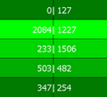 | 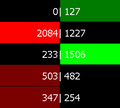 | 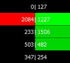 |
| Volume Profile | 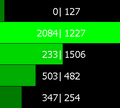 | 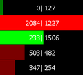 | 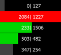 | |
| Ask/Bid Volume Split Profile | 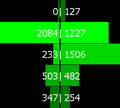 | 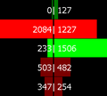 | 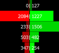 | |
Background Coloring Based on Volume Percentage
This section explains the Based on Volume Percentage Background Coloring Method.
This background coloring uses a Percentage Value. The percentage is based on the Volume at a given price in comparison to the largest Volume value at any price within the bar. So Percentage = Volume at Given Price / Largest Volume at a Price within Bar.
Since the Background Coloring is performed using a Percentage Value the recommended Column # Percent Compare Thresholds Input setting values are: .25, .50, .75.
Up Colors are used if the Close of the Bar is greater than or equal to the Open of the Bar. Down Colors are used if the Close of the Bar is less than the Open of the Bar.
The following are the rules for determining which specific Color Input is used for the background color:
- Column # Range 3 Up Color: This color is used when an Up color is being used and the Percentage Value is greater than or equal to the third threshold value in the Column # Percent Compare Threshold Input setting.
- Column # Range 2 Up Color: This color is used when an Up color is being used and the Percentage Value Value is greater than or equal to the second threshold value in the Column # Percent Compare Threshold Input setting and less than the third threshold value.
- Column # Range 1 Up Color: This color is used when an Up color is being used and the Percentage Value is greater than or equal to the first threshold value in the Column # Percent Compare Threshold Input setting and less than the second threshold value.
- Column # Range 0 Up Color: This color is used when an Up color is being used and the Percentage Value is less than the first threshold value in the Column # Percent Compare Threshold Input setting.
- Column # Range 3 Down Color: This color is used when a Down color is being used and the Percentage Value is greater than or equal to the third threshold value in the Column # Percent Compare Threshold Input setting.
- Column # Range 2 Down Color: This color is used when a Down color is being used and the Percentage Value is greater than or equal to the second threshold value in the Column # Percent Compare Threshold Input setting and less than the third threshold value.
- Column # Range 1 Down Color: This color is used when a Down color is being used and the Percentage Value is greater than or equal to the first threshold value in the Column # Percent Compare Threshold Input setting and less than the second threshold value.
- Column # Range 0 Down Color: This color is used when a Down color is being used and the Percentage Value is less than the first threshold value in the Column # Percent Compare Threshold Input setting.
In the case when a Split Numbers Bars Background Type is used, which shows different values for the Bid and Ask sides, the Bid and Ask colors will be the same as the color determined above and the Bid and Ask sides will both be drawn.
Background Coloring Based on Trades Percentage
This section explains the Based on Trades Percentage Background Coloring Method.
This background coloring uses a Percentage Value. The percentage is based on the Trades at a given price in comparison to the largest Trade value at any price for the bar. So Percentage = Trades at Given Price / Largest Trades at a Price within Bar.
Since the Background Coloring is performed using a Percentage Value the recommended Column # Percent Compare Thresholds Input setting values are: .25, .50, .75.
Up Colors are used if the Close of the bar is greater than or equal to the Open of the Bar. Down Colors are used if the Close of the Bar is less than the Open of the Bar.
The following are the rules for determining which specific Color Input is used:
- Column # Range 3 Up Color: This color is used when an Up color is being used and the Percentage Value is greater than or equal to the third threshold value in the Column # Percent Compare Threshold Input setting.
- Column # Range 2 Up Color: This color is used when an Up color is being used and the Percentage Value Value is greater than or equal to the second threshold value in the Column # Percent Compare Threshold Input setting and less than the third threshold value.
- Column # Range 1 Up Color: This color is used when an Up color is being used and the Percentage Value is greater than or equal to the first threshold value in the Column # Percent Compare Threshold Input setting and less than the second threshold value.
- Column # Range 0 Up Color: This color is used when an Up color is being used and the Percentage Value is less than the first threshold value in the Column # Percent Compare Threshold Input setting.
- Column # Range 3 Down Color: This color is used when a Down color is being used and the Percentage Value is greater than or equal to the third threshold value in the Column # Percent Compare Threshold Input setting.
- Column # Range 2 Down Color: This color is used when a Down color is being used and the Percentage Value is greater than or equal to the second threshold value in the Column # Percent Compare Threshold Input setting and less than the third threshold value.
- Column # Range 1 Down Color: This color is used when a Down color is being used and the Percentage Value is greater than or equal to the first threshold value in the Column # Percent Compare Threshold Input setting and less than the second threshold value.
- Column # Range 0 Down Color: This color is used when a Down color is being used and the Percentage Value is less than the first threshold value in the Column # Percent Compare Threshold Input setting.
In the case when a Split Numbers Bars Background Type is used, which shows a different background for the Bid and Ask sides, the Bid and Ask colors will be the same as the color determined above and the Bid and Ask sides will both be drawn.
Background Coloring Based on AskVol/BidVol Percentage
This section explains the Based On AskVol/BidVol Percentage Background Coloring Method.
This background coloring uses a Percentage Value. The percentage is based on the Ask or Bid volume at a given price in comparison to the largest Ask or Bid volume across all prices for the bar. For the Ask: Ask Percentage = Ask Volume at given Price / Largest Ask Volume at a price within bar. For the Bid: Bid Percentage = Bid Volume at given Price / Largest Bid Volume at a price within bar.
Since the Background Coloring is performed using a Percentage Value the recommended Column # Percent Compare Thresholds Input setting values are: .25, .50, .75.
Up Colors are used if the Ask Volume is dominant at the given price (the Ask Volume is greater than the Bid Volume at that price), and the Down Colors are used if the Bid Volume is dominant at the given price (the Bid Volume is greater than the Ask Volume at that price). If the Ask Volume equals the Bid Volume at the given price, then the Up colors are used if the Total Ask Volume for the entire bar is greater than or equal to the Total Bid Volume for the entire bar; and the Down colors are used if the Total Bid Volume for the entire bar is greater than the Total Ask Volume for the entire bar.
The following are the rules for determining which specific Color Input is used:
- Column # Range 3 Up Color: This color is used when an Up color is being used and the Percentage Value is greater than or equal to the third threshold value in the Column # Percent Compare Threshold Input setting.
- Column # Range 2 Up Color: This color is used when an Up color is being used and the Percentage Value is greater than or equal to the second threshold value in the Column # Percent Compare Threshold Input setting and less than the third threshold value.
- Column # Range 1 Up Color: This color is used when an Up color is being used and the Percentage Value is greater than or equal to the first threshold value in the Column # Percent Compare Threshold Input setting and less than the second threshold value.
- Column # Range 0 Up Color: This color is used when an Up color is being used and the Percentage Value is less than the first threshold value in the Column # Percent Compare Threshold Input setting.
- Column # Range 3 Down Color: This color is used when a Down color is being used and the Percentage Value is greater than or equal to the third threshold value in the Column # Percent Compare Threshold Input setting.
- Column # Range 2 Down Color: This color is used when a Down color is being used and the Percentage Value is greater than or equal to the second threshold value in the Column # Percent Compare Threshold Input setting and less than the third threshold value.
- Column # Range 1 Down Color: This color is used when a Down color is being used and the Percentage Value is greater than or equal to the first threshold value in the Column # Percent Compare Threshold Input setting and less than the second threshold value.
- Column # Range 0 Down Color: This color is used when a Down color is being used and the Percentage Value is less than the first threshold value in the Column # Percent Compare Threshold Input setting.
In the case when a Split Numbers Bars Background Type is used, which shows a different background for the Bid and Ask sides, the Bid and Ask colors will be the same as the color determined above and the Bid and Ask sides will both be drawn.
Background Coloring Based on Dominant AskVol BidVol To Volume At Price Percentage
This section explains the Based On Dominant AskVol BidVol To Volume At Price Percentage Background Coloring Method.
This background coloring uses a Percentage Value. The percentage is based on the Ask or Bid volume at a given price in comparison to the total volume at that price. For the Ask: Ask Percentage = Ask Volume at Price / Total Volume at Price. For the Bid: Bid Percentage = Bid Volume at Price / Total Volume at Price.
Since the Background Coloring is performed using a Percentage Value the recommended Column # Percent Compare Thresholds Input setting values are: .25, .50, .75.
Up Colors are used if the Ask Volume is dominant or equivalent at the given price (the Ask Volume is greater than or equal to the Bid Volume at that price), and the Down Colors are used if the Bid Volume is dominant at the given price (the Bid Volume is greater than the Ask Volume at that price).
The following are the rules for determining which specific Color Input is used:
- Column # Range 3 Up Color: This color is used when an Up color is being used and the Percentage Value is greater than or equal to the third threshold value in the Column # Percent Compare Threshold Input setting.
- Column # Range 2 Up Color: This color is used when an Up color is being used and the Percentage Value Value is greater than or equal to the second threshold value in the Column # Percent Compare Threshold Input setting and less than the third threshold value.
- Column # Range 1 Up Color: This color is used when an Up color is being used and the Percentage Value is greater than or equal to the first threshold value in the Column # Percent Compare Threshold Input setting and less than the second threshold value.
- Column # Range 0 Up Color: This color is used when an Up color is being used and the Percentage Value is less than the first threshold value in the Column # Percent Compare Threshold Input setting.
- Column # Range 3 Down Color: This color is used when a Down color is being used and the Percentage Value is greater than or equal to the third threshold value in the Column # Percent Compare Threshold Input setting.
- Column # Range 2 Down Color: This color is used when a Down color is being used and the Percentage Value is greater than or equal to the second threshold value in the Column # Percent Compare Threshold Input setting and less than the third threshold value.
- Column # Range 1 Down Color: This color is used when a Down color is being used and the Percentage Value is greater than or equal to the first threshold value in the Column # Percent Compare Threshold Input setting and less than the second threshold value.
- Column # Range 0 Down Color: This color is used when a Down color is being used and the Percentage Value is less than the first threshold value in the Column # Percent Compare Threshold Input setting.
In the case when a Split Numbers Bars Background Type is used, which shows a different background for the Bid and Ask sides, the Bid and Ask colors will be the same as the color determined above and the Bid and Ask sides will both be drawn.
Background Coloring Based on Above/At or Below Last
This section explains the Based On Above/At or Below Last Background Coloring Method.
This background coloring uses a Comparison. The comparison is the current price versus the Last price. So Comparison = Current Price > Last Price for bar.
Up Colors are used if the current price is greater than the Last price for the bar. Down Colors are used if the current price is less than or equal to the Last price for the bar.
Only the Column # Range 3 Up Color and the Column # Range 3 Down Color are used.
Background Coloring Based on Dominant Side AskVol BidVol Percentage
This section explains the Based On Dominant Side AskVol BidVol Percentage Background Coloring Method.
This background coloring uses a Percentage Value. The percentage is based on the Ask or Bid volume at the given price in comparison to the Bid or Ask Volume at the given price. For the Bid: Bid Percentage = Bid Volume at Price / Ask Volume at Price. For the Ask: Ask Percentage = Ask Volume at Price / Bid Volume at Price.
Since the Background Coloring is performed using a Percentage Value calculated from Ask Volume/Bid Volume or Bid Volume/Ask Volume and the purpose of this text coloring method is to emphasize the more dominant side, the recommended Column # Percent Compare Thresholds Input setting values are: 1.25, 1.50, 2.0.
While these are the recommended values, the specific differences in the Bid and Ask Volumes should be analyzed in order to determine the best Column # Percent Compare Threshold Input settings to use. Keep in mind with these recommended percentages, the less dominant side (when displayed using a Split Background Type) whether the Ask Volume or Bid Volume side, will always map to the Column # Up/Down Range 0 Color because it will always be less than 100% of the other side.
In the case where the Bid Volume and Ask Volume at the same price level are both zero, the percentage is calculated to be 0. In the case where only the Bid or Ask Volume which is the denominator in the calculation is 0, the Column # Up/Down Range 3 Color will be used.
When the Numbers Bars Background Type is set to display only a single Numbers Bar background, then the Up Colors are used if the Ask Volume is dominant or equivalent at the given price (the Ask Volume is greater than or equal to the Bid Volume at that price), and the Down Colors are used if the Bid Volume is dominant at the given price (the Bid Volume is greater than the Ask Volume at that price).
When the Numbers Bars Background Type is set to one of the Split options that displays the Numbers Bars Background on both sides, then the Up Colors are used for the Ask side, and the Down colors are used for the Bid Side.
The following are the rules for determining which specific Color Input is used:
- Column # Range 3 Up Color: This color is used when an Up color is being used and the Percentage Value is greater than or equal to the third threshold value in the Column # Percent Compare Threshold Input setting.
- Column # Range 2 Up Color: This color is used when an Up color is being used and the Percentage Value is greater than or equal to the second threshold value in the Column # Percent Compare Threshold Input setting and less than the third threshold value.
- Column # Range 1 Up Color: This color is used when an Up color is being used and the Percentage Value is greater than or equal to the first threshold value in the Column # Percent Compare Threshold Input setting and less than the second threshold value.
- Column # Range 0 Up Color: This color is used when an Up color is being used and the Percentage Value is less than the first threshold value in the Column # Percent Compare Threshold Input setting.
- Column # Range 3 Down Color: This color is used when a Down color is being used and the Percentage Value is greater than or equal to the third threshold value in the Column # Percent Compare Threshold Input setting.
- Column # Range 2 Down Color: This color is used when a Down color is being used and the Percentage Value is greater than or equal to the second threshold value in the Column # Percent Compare Threshold Input setting and less than the third threshold value.
- Column # Range 1 Down Color: This color is used when a Down color is being used and the Percentage Value is greater than or equal to the first threshold value in the Column # Percent Compare Threshold Input setting and less than the second threshold value.
- Column # Range 0 Down Color: This color is used when a Down color is being used and the Percentage Value is less than the first threshold value in the Column # Percent Compare Threshold Input setting.
Background Coloring Based on Diagonal Dominant Side AskVol BidVol Percentage
This section explains the Based On Diagonal Dominant Side AskVol BidVol Percentage Background Coloring Method.
This background coloring uses a Diagonal Percentage Value. The percentage is based on the Ask or Bid volume at price in comparison to the Previous Bid or Next Ask Volume at price. For the Bid: Bid Percentage = Bid Volume at Price / Ask Volume at Next Price. For the Ask: Ask Percentage = Ask Volume at Price / Bid Volume at Previous Price.
Since the Background Coloring is performed using a Percentage Value calculated from Ask Volume/Previous Bid Volume or Bid Volume/Next Ask Volume and the purpose of this background coloring method is to emphasize the more dominant side, the recommended Column # Percent Compare Thresholds Input setting values are: 1.25, 1.50, 2.0.
While these are the recommended values, the specific differences in the Bid and Ask Volumes should be analyzed in order to determine the best Column # Percent Compare Threshold Input settings to use.
In the case where only the Bid or Ask Volume which is the denominator in the calculation is 0, then the background will not be drawn. If the Input for Enable Diagonal Zero Bid/Ask Compares is set to Yes, then the denominator is set to a value of 1 and the Percent Calculation determined using this value.
When the Numbers Bars Background Type is set to display only a single Numbers Bar background, the following sequence is followed to determine the Up or Down colors:
Volume comparisons are performed to see if either the Ask or the Bid side are exclusively dominant at the given price. If one is exclusively dominant, then the following are the results:
- Up colors are used if the Ask Volume is exclusively dominant (the Ask Volume at the given price is greater than or equal to the Bid Volume at the previous price and the Bid Volume at the given price is less than the Ask Volume at the next price).
- Down colors are used if the Bid Volume is exclusively dominant (the Bid Volume at the given price is greater than the Ask Volume at the Next Price and the Ask Volume at the given price is less than the Bid Volume at the previous price).
If neither the Ask or Bid side is exclusively diagonally dominant (as determined above) and instead they are both diagonally dominant (the Bid Volume at the given price is greater than the Ask Volume at the next price point, and the Ask Volume at the given price is greater than or equal to the Bid Volume at the previous price point), then the Ask Percentage (as defined above) is compared to the Bid Percentage (as defined above) with the following results:
- Up colors are used if the Ask Percentage is greater than or equal to the Bid Percentage.
- Down colors are used if the Bid Percentage is greater than the Ask Percentage.
If neither the Ask or Bid side is exclusively diagonally dominant (as determined above), and the Ask and Bid sides are not both diagonally dominant (as determined above), but rather both the Bid Side and the Ask Side are non-dominant at a given price point (The Ask volume at the given price is less than the Bid volume at the previous price point, and the Bid Volume at the given price is less than or equal to the Ask Volume at the next price point) and the Numbers Bars Background Type is not set to Background on Dominant Side or Background on Dominant Side Outline, then the background is drawn using the Default Background Color.
If neither the Ask or Bid side is dominant, and the Numbers Bars Background Type is set to either Background on Dominant Side or Background on Dominant Side Outline then the background is not drawn.
When the Numbers Bars Background Type is set to one of the Split options which displays the Numbers Bars Background on both sides, then the Up Colors are used for the Ask side, and the Down colors are used for the Bid Side.
The following are the rules for determining which specific Color Input is used:
- Column # Range 3 Up Color: This color is used when an Up color is being used and the Percentage Value is greater than or equal to the third threshold value in the Column # Percent Compare Threshold Input setting.
- Column # Range 2 Up Color: This color is used when an Up color is being used and the Percentage Value is greater than or equal to the second threshold value in the Column # Percent Compare Threshold Input setting and less than the third threshold value.
- Column # Range 1 Up Color: This color is used when an Up color is being used and the Percentage Value is greater than or equal to the first threshold value in the Column # Percent Compare Threshold Input setting and less than the second threshold value.
- Column # Range 0 Up Color: This color is used when an Up color is being used and the Percentage Value is less than the first threshold value in the Column # Percent Compare Threshold Input setting.
- Column # Range 3 Down Color: This color is used when a Down color is being used and the Percentage Value is greater than or equal to the third threshold value in the Column # Percent Compare Threshold Input setting.
- Column # Range 2 Down Color: This color is used when a Down color is being used and the Percentage Value is greater than or equal to the second threshold value in the Column # Percent Compare Threshold Input setting and less than the third threshold value.
- Column # Range 1 Down Color: This color is used when a Down color is being used and the Percentage Value is greater than or equal to the first threshold value in the Column # Percent Compare Threshold Input setting and less than the second threshold value.
- Column # Range 0 Down Color: This color is used when a Down color is being used and the Percentage Value is less than the first threshold value in the Column # Percent Compare Threshold Input setting.
Background Coloring Based on Diagonal Dominant AskVol BidVol to Volume at Price Percentage
This section explains the Based On Diagonal Dominant AskVol BidVol to Volume at Price Percentage Background Coloring Method.
This background coloring uses a Diagonal Percentage Value. The percentage is based on the Bid or Ask Volume at the given price in comparison to the total of diagonal Bid Volume and Ask Volume. For the Bid: Bid Percentage = Bid Volume at the Given Price / (Bid Volume at the Given Price + Ask Volume at the Next Price). For the Ask: Ask Percentage = Ask Volume at Price / (Ask Volume at the Given Price + Bid Volume at the Previous Price).
Since the Background Coloring is performed using a Percentage Value the recommended Column # Percent Compare Thresholds Input setting values are: .25, .50, .75.
When the Numbers Bars Background Type is set to display only a single Numbers Bar background, the following sequence is followed to determine the Up or Down colors:
Volume comparisons are performed to see if either the Ask or the Bid side are exclusively dominant at the given price. If one is exclusively dominant, then the following are the results:
- Up colors are used if the Ask Volume is exclusively dominant (the Ask Volume at the given price is greater than or equal to the Bid Volume at the previous price and the Bid Volume at the given price is less than the Ask Volume at the next price).
- Down colors are used if the Bid Volume is exclusively dominant (the Bid volume at the given price is greater than the Ask Volume at the next price and the Ask Volume at the given price is less than the Bid Volume at the previous price).
If neither the Ask or Bid side is exclusively diagonally dominant (as determined above) and instead they are both diagonally dominant (the Bid Volume at the given price is greater than the Ask Volume at the next price point, and the Ask Volume at the given price is greater than or equal to the Bid Volume at the previous price point), then the Ask Percentage (as defined above) is compared to the Bid Percentage (as defined above) with the following results:
- Up colors are used if the Ask Percentage is greater than or equal to the Bid Percentage.
- Down colors are used if the Bid Percentage is greater than the Ask Percentage.
If neither the Ask or Bid side is exclusively diagonally dominant (as determined above), and the Ask and Bid sides are not both diagonally dominant (as determined above), but rather both the Bid Side and the Ask Side are non-dominant at a given price point (The Ask volume at the given price is less than the Bid volume at the previous price point, and the Bid Volume at the given price is less than or equal to the Ask Volume at the next price point) and the Numbers Bars Background Type is not set to Background on Dominant Side or Background on Dominant Side Outline, then the background is drawn using the Default Background Color.
If neither the Ask or Bid side is dominant, and the Numbers Bars Background Type is set to either Background on Dominant Side or Background on Dominant Side Outline then the background is not drawn.
When the Numbers Bars Background Type is set to display both the Ask and the Bid Numbers Bar background separately, then the Up Colors are used for the Ask side, and the Down colors are used for the Bid Side.
The following are the rules for determining which specific Color Input is used:
- Column # Range 3 Up Color: This color is used when an Up color is being used and the Percentage Value is greater than or equal to the third threshold value in the Column # Percent Compare Threshold Input setting.
- Column # Range 2 Up Color: This color is used when an Up color is being used and the Percentage Value is greater than or equal to the second threshold value in the Column # Percent Compare Threshold Input setting and less than the third threshold value.
- Column # Range 1 Up Color: This color is used when an Up color is being used and the Percentage Value is greater than or equal to the first threshold value in the Column # Percent Compare Threshold Input setting and less than the second threshold value.
- Column # Range 0 Up Color: This color is used when an Up color is being used and the Percentage Value is less than the first threshold value in the Column # Percent Compare Threshold Input setting.
- Column # Range 3 Down Color: This color is used when a Down color is being used and the Percentage Value is greater than or equal to the third threshold value in the Column # Percent Compare Threshold Input setting.
- Column # Range 2 Down Color: This color is used when a Down color is being used and the Percentage Value is greater than or equal to the second threshold value in the Column # Percent Compare Threshold Input setting and less than the third threshold value.
- Column # Range 1 Down Color: This color is used when a Down color is being used and the Percentage Value is greater than or equal to the first threshold value in the Column # Percent Compare Threshold Input setting and less than the second threshold value.
- Column # Range 0 Down Color: This color is used when a Down color is being used and the Percentage Value is less than the first threshold value in the Column # Percent Compare Threshold Input setting.
Background Coloring Based on Diagonal Dominant AskVol BidVol Difference - Actual
This section explains the Based On Diagonal Dominant AskVol BidVol Difference - Actual Background Coloring Method.
This background coloring uses a Diagonal Difference Actual Value. The diagonal difference actual values are based on the Ask or Bid Volume at a price minus the Diagonal Bid or Ask Volume. For the Bid: Bid Diagonal Difference = Absolute Value(Ask Volume at Next Price - Bid Volume at the Given Price). For the Ask: Ask Diagonal Difference = Absolute Value(Ask Volume at the Given Price - Bid Volume at the Previous Price).
Since the Background Coloring is performed using an Actual Value the recommended Column # Actual Volume Compare Thresholds Input setting values are: 100, 200, 300.
When the Numbers Bars Background Type is set to display only a single Numbers Bar background, the following sequence is followed to determine the Up or Down colors:
Volume comparisons are performed to see if either the Ask or the Bid side are exclusively dominant at the given price. If one is exclusively dominant, then the following are the results:
- Up colors are used if the Ask Volume is exclusively dominant (the Ask Volume at the given price is greater than or equal to the Bid Volume at the previous price and the Bid Volume at the given price is less than the Ask Volume at the next price).
- Down colors are used if the Bid Volume is exclusively dominant (the Bid Volume at the given price is greater than the Ask Volume at the next price and the Ask Volume at the given price is less than the Bid Volume at the previous price).
If neither the Ask or Bid side is exclusively diagonally dominant (as determined above) and instead they are both diagonally dominant (the Bid Volume at the given price is greater than the Ask Volume at the next price point, and the Ask Volume at the given price is greater than or equal to the Bid Volume at the previous price point), then the Ask Diagonal Difference (as defined above) is compared to the Bid Diagonal Difference (as defined above) with the following results:
- Up colors are used if the Ask Diagonal Difference is greater than or equal to the Bid Diagonal Difference.
- Down colors are used if the Bid Diagonal Difference is greater than the Ask Diagonal Difference.
If neither the Ask or Bid side is exclusively diagonally dominant (as determined above), and the Ask and Bid sides are not both diagonally dominant (as determined above), but rather both the Bid Side and the Ask Side are non-dominant at a given price point (The Ask volume at the given price is less than the Bid volume at the previous price point, and the Bid Volume at the given price is less than or equal to the Ask Volume at the next price point) and the Numbers Bars Background Type is not set to Background on Dominant Side or Background on Dominant Side Outline, then the background is drawn using the Default Background Color.
If neither the Ask or Bid side is dominant, and the Numbers Bars Background Type is set to either Background on Dominant Side or Background on Dominant Side Outline then the background is not drawn.
When the Numbers Bars Background Type is set to display both the Ask and the Bid Numbers Bar background separately, then the Up Colors are used for the Ask side, and the Down colors are used for the Bid Side.
The following are the rules for determining which specific Color Input is used:
- Column # Range 3 Up Color: This color is used when an Up color is being used and the Difference Actual Value is greater than or equal to the third threshold value in the Column # Actual Volume Compare Threshold Input setting.
- Column # Range 2 Up Color: This color is used when an Up color is being used and the Difference Actual Value is greater than or equal to the second threshold value in the Column # Actual Volume Compare Threshold Input setting and less than the third threshold value.
- Column # Range 1 Up Color: This color is used when an Up color is being used and the Difference Actual Value is greater than or equal to the first threshold value in the Column # Actual Volume Compare Threshold Input setting and less than the second threshold value.
- Column # Range 0 Up Color: This color is used when an Up color is being used and the Difference Actual Value is less than the first threshold value in the Column # Actual Volume Compare Threshold Input setting.
- Column # Range 3 Down Color: This color is used when a Down color is being used and the Difference Actual Value is greater than or equal to the third threshold value in the Column # Actual Volume Compare Threshold Input setting.
- Column # Range 2 Down Color: This color is used when a Down color is being used and the Difference Actual Value is greater than or equal to the second threshold value in the Column # Actual Volume Compare Threshold Input setting and less than the third threshold value.
- Column # Range 1 Down Color: This color is used when a Down color is being used and the Difference Actual Value is greater than or equal to the first threshold value in the Column # Actual Volume Compare Threshold Input setting and less than the second threshold value.
- Column # Range 0 Down Color: This color is used when a Down color is being used and the Difference Actual Value is less than the first threshold value in the Column # Actual Volume Compare Threshold Input setting.
Background Coloring Based on AskVol BidVol Diagonal Difference Percentage of Bar Range
This section explains the Based On AskVol BidVol Diagonal Difference Percentage of Bar Range Background Coloring Method. In order to view the data that drives the coloring of this Number Bar, use the Ask Bid Vol Difference Diagonal Numbers Bar Text Type.
This background coloring uses a Diagonal Difference Percentage. This percentage is based on the volume difference between the Ask Volume and the diagonal Bid Volume divided by the range of diagonal volumes within the entire bar. For the Bid: Bid Percentage = (Ask Volume at Next Price - Bid Volume at the Given Price - Minimum Diagonal Volume Difference) / (Maximum Diagonal Volume Difference - Minimum Diagonal Volume Difference). For the Ask: Ask Percentage = (Ask Volume at the Given Price - Bid Volume at Previous Price - Minimum Diagonal Volume Difference) / (Maximum Diagonal Volume Difference - Minimum Diagonal Volume Difference).
The Maximum Diagonal Volume Difference is found by reviewing all of the price points and finding the most positive value of the Ask Volume at a given price minus the Bid Volume at the previous price. The Minimum Diagonal Volume Difference is found by reviewing all of the price points and finding the most negative value of the Ask Volume at the given price minus the Bid Volume at the previous price.
Since the Background Coloring is performed using a Percentage Value the recommended Column # Percent Compare Thresholds Input setting values are: .25, .50, .75.
When the Numbers Bars Background Type is set to display only a single Numbers Bar background, the following sequence is followed to determine the Up or Down colors:
The Ask and Bid sides are evaluated if the Diagonal Difference Percentage of Bar is exclusively calculated on only one side. If it is only calculated on one side, then the following are the results:
- If the Ask is exclusively calculated at the given price point (this only occurs if the Bid/Ask Minimum Volume Compare Threshold Input Setting is set to a value that is above the Bid Volume, but still below the Ask Volume at the given price), then:
- Up colors are used if the difference between the Ask Volume at the given price and the Bid Volume at the previous price is Positive.
- Down colors are used if the difference between the Ask Volume at the given price and the Bid Volume at the previous price is Negative.
- If the Bid is exclusively calculated at the given price point (this only occurs if the Bid/Ask Minimum Volume Compare Threshold Input Setting is set to a value that is above the Ask Volume, but still below the Bid Volume at the given price), then:
- Up colors are used if the difference between the Ask Volume at the next price and the Bid Volume at the given price is Positive.
- Down colors are used if the difference between the Ask Volume at the next price and the Bid Volume at the given price is Negative.
If neither the Ask or Bid sides are exclusively calculated (as determined above), and instead they are both calculated, then the Ask Percentage (as defined above) is compared to the Bid Percentage (as defined above) with the following results:
- If the Ask Percentage is greater than or equal to the Bid Percentage, then the following occurs:
- Up colors are used if the difference between the Ask Volume at the given price and the Bid Volume at the previous price is positive.
- Down colors are used if the difference between the Ask Volume at the given price and the Bid Volume at the previous price is negative.
- If the Bid Percentage is greater than the Ask Percentage, then the following occurs:
- Up colors are used if the difference between the Ask Volume at the next price and the Bid Volume at the given price is positive.
- Down colors are used if the difference between the Ask Volume at the next price and the Bid Volume at the given price is negative
If both the Ask and Bid sides are not calculated (this occurs when the data happens to result in only one value for all of the diagonal differences, or if there are two or fewer price points represented in a bar) and the Numbers Bars Background Type is not set to Background on Dominant Side or Background on Dominant Side Outline, then the background is drawn using the Default Background Color.
If both the Ask and Bid sides are not calculated, and the Numbers Bars Background Type is set to Background on Dominant Side or Background on Dominant Side Outline then the background is not drawn.
When the Numbers Bars Background Type is set to display both the Ask and the Bid Numbers Bar background separately, the following occurs to determine the use of Up or Down colors:
- On the Bid Side:
- Up colors are used if the difference between the Ask Volume at the next price and the Bid Volume at the given price is positive.
- Down colors are used if the difference between the Ask Volume at the next price and the Bid Volume at the given price is negative
- The background is not drawn at the highest price of the bar where the Ask Volume at the next price is non-existent (NULL) unless the Enable Diagonal Zero Bid/Ask Compares Input is set to Yes.
- On the Ask Side:
- Up colors are used if the difference between the Ask Volume at the given price and the Bid Volume at the previous price is positive.
- Down colors are used if the difference between the Ask Volume at the given price and the Bid Volume at the previous price is negative.
- The background is not drawn at the lowest price of the bar where the Bid Volume at the previous price is non-existent (NULL), unless the Enable Diagonal Zero Bid/Ask Compares Input is set to Yes.
When a bar has data at only two or fewer price points, the difference between the Maximum Diagonal Volume Difference and the Minimum Diagonal Volume Difference is 0. Therefore, if the Background Type is set to a Split profile, then the background is drawn with a calculated Percentage of 0 for both the Ask and Bid sides, otherwise, no backgrounds are drawn.
The following are the rules for determining which specific Color Input is used:
- Column # Range 3 Up Color: This color is used when an Up color is being used and the Percentage Value is greater than or equal to the third threshold value in the Column # Percent Compare Threshold Input setting.
- Column # Range 2 Up Color: This color is used when an Up color is being used and the Percentage Value is greater than or equal to the second threshold value in the Column # Percent Compare Threshold Input setting and less than the third threshold value.
- Column # Range 1 Up Color: This color is used when an Up color is being used and the Percentage Value is greater than or equal to the first threshold value in the Column # Percent Compare Threshold Input setting and less than the second threshold value.
- Column # Range 0 Up Color: This color is used when an Up color is being used and the Percentage Value is less than the first threshold value in the Column # Percent Compare Threshold Input setting.
- Column # Range 3 Down Color: This color is used when a Down color is being used and the Percentage Value is greater than or equal to the third threshold value in the Column # Percent Compare Threshold Input setting.
- Column # Range 2 Down Color: This color is used when a Down color is being used and the Percentage Value is greater than or equal to the second threshold value in the Column # Percent Compare Threshold Input setting and less than the third threshold value.
- Column # Range 1 Down Color: This color is used when a Down color is being used and the Percentage Value is greater than or equal to the first threshold value in the Column # Percent Compare Threshold Input setting and less than the second threshold value.
- Column # Range 0 Down Color: This color is used when a Down color is being used and the Percentage Value is less than the first threshold value in the Column # Percent Compare Threshold Input setting.
Background Coloring Based on Volume - Actual
This section explains the Based On Volume - Actual Background Coloring Method.
This background coloring uses an Actual Value. The actual value is the Total Volume at the given price point.
Since the Background Coloring is performed using an Actual Value the recommended Column # Actual Volume Compare Thresholds Input setting values are: 100, 200, 300.
While these are the recommended values, the specific Volume Values should be analyzed in order to determine the best Column # Actual Volume Compare Threshold Input settings to use.
Up Colors are used if the Close of the Bar is greater than or equal to the Open of the Bar. Down Colors are used if the Close of the Bar is less than the Open of the Bar.
The following are the rules for determining which specific Color Input is used:
- Column # Range 3 Up Color: This color is used when an Up color is being used and the Actual Value is greater than or equal to the third threshold value in the Column # Actual Volume Compare Thresholds Input setting.
- Column # Range 2 Up Color: This color is used when an Up color is being used and the Actual Value is greater than or equal to the second threshold value in the Column # Actual Volume Compare Thresholds Input setting and less than the third threshold value.
- Column # Range 1 Up Color: This color is used when an Up color is being used and the Actual Value is greater than or equal to the first threshold value in the Column # Actual Volume Compare Thresholds Input setting and less than the second threshold value.
- Column # Range 0 Up Color: This color is used when an Up color is being used and the Actual Value is less than the first threshold value in the Column # Actual Volume Compare Thresholds Input setting.
- Column # Range 3 Down Color: This color is used when a Down color is being used and the Actual Value is greater than or equal to the third threshold value in the Column # Actual Volume Compare Thresholds Input setting.
- Column # Range 2 Down Color: This color is used when a Down color is being used and the Actual Value is greater than or equal to the second threshold value in the Column # Actual Volume Compare Thresholds Input setting and less than the third threshold value.
- Column # Range 1 Down Color: This color is used when a Down color is being used and the Actual Value is greater than or equal to the first threshold value in the Column # Actual Volume Compare Thresholds Input setting and less than the second threshold value.
- Column # Range 0 Down Color: This color is used when a Down color is being used and the Actual Value is less than the first threshold value in the Column # Actual Volume Compare Thresholds Input setting.
Background Coloring Based on Trades - Actual
This section explains the Based On Trades - Actual Background Coloring Method.
This background coloring uses an Actual Value. The actual values are the trades at the given price point.
Since the Background Coloring is performed using an Actual Value the recommended Column # Actual Volume Compare Thresholds Input setting values are: 100, 200, 300.
While these are the recommended values, the specific Trade Values should be analyzed in order to determine the best Column # Actual Volume Compare Threshold Input settings to use.
Up Colors are used if the Close of the Bar is greater than or equal to the Open of the Bar. Down Colors are used if the Close of the Bar is less than the Open of the Bar.
The following are the rules for determining which specific Color Input is used:
- Column # Range 3 Up Color: This color is used when an Up color is being used and the Actual Value is greater than or equal to the third threshold value in the Column # Actual Volume Compare Thresholds Input setting.
- Column # Range 2 Up Color: This color is used when an Up color is being used and the Actual Value is greater than or equal to the second threshold value in the Column # Actual Volume Compare Thresholds Input setting and less than the third threshold value.
- Column # Range 1 Up Color: This color is used when an Up color is being used and the Actual Value is greater than or equal to the first threshold value in the Column # Actual Volume Compare Thresholds Input setting and less than the second threshold value.
- Column # Range 0 Up Color: This color is used when an Up color is being used and the Actual Value is less than the first threshold value in the Column # Actual Volume Compare Thresholds Input setting.
- Column # Range 3 Down Color: This color is used when a Down color is being used and the Actual Value is greater than or equal to the third threshold value in the Column # Actual Volume Compare Thresholds Input setting.
- Column # Range 2 Down Color: This color is used when a Down color is being used and the Actual Value is greater than or equal to the second threshold value in the Column # Actual Volume Compare Thresholds Input setting and less than the third threshold value.
- Column # Range 1 Down Color: This color is used when a Down color is being used and the Actual Value is greater than or equal to the first threshold value in the Column # Actual Volume Compare Thresholds Input setting and less than the second threshold value.
- Column # Range 0 Down Color: This color is used when a Down color is being used and the Actual Value is less than the first threshold value in the Column # Actual Volume Compare Thresholds Input setting.
Background Coloring Based on Dominant AskVol BidVol - Actual
This section explains the Based On Dominant AskVol BidVol - Actual Background Coloring Method.
This background coloring uses an Actual Value. The actual value is the Dominant Ask Volume or Bid Volume at the given price point.
Since the Background Coloring is performed using an Actual Value the recommended Column # Actual Volume Compare Thresholds Input setting values are: 100, 200, 300.
While these are the recommended values, the specific Volume Values should be analyzed in order to determine the best Column # Actual Volume Compare Threshold Input settings to use.
Up Colors are used if the Ask volume is dominant (Ask volume is greater than the Bid volume at the given price). Down Colors are used if the Bid volume is dominant (Bid volume is greater than the Ask volume at the given price).
The following are the rules for determining which specific Color Input is used:
- Column # Range 3 Up Color: This color is used when an Up color is being used and the Actual Value is greater than or equal to the third threshold value in the Column # Actual Volume Compare Thresholds Input setting.
- Column # Range 2 Up Color: This color is used when an Up color is being used and the Actual Value is greater than or equal to the second threshold value in the Column # Actual Volume Compare Thresholds Input setting and less than the third threshold value.
- Column # Range 1 Up Color: This color is used when an Up color is being used and the Actual Value is greater than or equal to the first threshold value in the Column # Actual Volume Compare Thresholds Input setting and less than the second threshold value.
- Column # Range 0 Up Color: This color is used when an Up color is being used and the Actual Value is less than the first threshold value in the Column # Actual Volume Compare Thresholds Input setting.
- Column # Range 3 Down Color: This color is used when a Down color is being used and the Actual Value is greater than or equal to the third threshold value in the Column # Actual Volume Compare Thresholds Input setting.
- Column # Range 2 Down Color: This color is used when a Down color is being used and the Actual Value is greater than or equal to the second threshold value in the Column # Actual Volume Compare Thresholds Input setting and less than the third threshold value.
- Column # Range 1 Down Color: This color is used when a Down color is being used and the Actual Value is greater than or equal to the first threshold value in the Column # Actual Volume Compare Thresholds Input setting and less than the second threshold value.
- Column # Range 0 Down Color: This color is used when a Down color is being used and the Actual Value is less than the first threshold value in the Column # Actual Volume Compare Thresholds Input setting.
Background Coloring Based on AskVol BidVol Difference - Actual
This section explains the Based On AskVol BidVol Difference - Actual Background Coloring Method.
This background coloring uses a Difference Actual Value. The difference actual value is the absolute value of the difference of the Ask volume at the given price to the Bid volume at the given price. The Value is: Value = Absolute Value(Ask Volume - Bid Volume).
Since the Background Coloring is performed using an Actual Value the recommended Column # Actual Volume Compare Thresholds Input setting values are: 100, 200, 300.
While these are the recommended values, the specific Volume Values should be analyzed in order to determine the best Column # Actual Volume Compare Threshold Input settings to use.
Up Colors are used if the Ask is dominant at the given price (Ask Volume is greater than or equal to the Bid Volume at the given price). Down Colors are used if the Bid is dominant at the given price (Bid Volume is greater than the Ask Volume at the given price).
The following are the rules for determining which specific Color Input is used:
- Column # Range 3 Up Color: This color is used when an Up color is being used and the Actual Value is greater than or equal to the third threshold value in the Column # Actual Volume Compare Thresholds Input setting.
- Column # Range 2 Up Color: This color is used when an Up color is being used and the Actual Value is greater than or equal to the second threshold value in the Column # Actual Volume Compare Thresholds Input setting and less than the third threshold value.
- Column # Range 1 Up Color: This color is used when an Up color is being used and the Actual Value is greater than or equal to the first threshold value in the Column # Actual Volume Compare Thresholds Input setting and less than the second threshold value.
- Column # Range 0 Up Color: This color is used when an Up color is being used and the Actual Value is less than the first threshold value in the Column # Actual Volume Compare Thresholds Input setting.
- Column # Range 3 Down Color: This color is used when a Down color is being used and the Actual Value is greater than or equal to the third threshold value in the Column # Actual Volume Compare Thresholds Input setting.
- Column # Range 2 Down Color: This color is used when a Down color is being used and the Actual Value is greater than or equal to the second threshold value in the Column # Actual Volume Compare Thresholds Input setting and less than the third threshold value.
- Column # Range 1 Down Color: This color is used when a Down color is being used and the Actual Value is greater than or equal to the first threshold value in the Column # Actual Volume Compare Thresholds Input setting and less than the second threshold value.
- Column # Range 0 Down Color: This color is used when a Down color is being used and the Actual Value is less than the first threshold value in the Column # Actual Volume Compare Thresholds Input setting.
Background Coloring Based on Separate Ask Volume Bid Volume - Actual
This section explains the Based On Separate Ask Volume Bid Volume - Actual Background Coloring Method.
This background coloring uses an Actual Value. The actual value is the Ask Volume or Bid Volume at the given price point.
Since the Background Coloring is performed using an Actual Value the recommended Column # Actual Volume Compare Thresholds Input setting values are: 100, 200, 300.
While these are the recommended values, the specific Volume Values should be analyzed in order to determine the best Column # Actual Volume Compare Threshold Input settings to use.
When the Numbers Bars Background Type is set to display only a single Numbers Bar background, the Up Colors are used if the Ask volume is dominant (Ask volume is greater than the Bid volume at the given price). Down Colors are used if the Bid volume is dominant (Bid volume is greater than the Ask volume at the given price).
When the Numbers Bars Background Type is set to one of the Split options that displays the Numbers Bars Background on both sides, then the Up Colors are used for the Ask side, and the Down colors are used for the Bid Side.
The following are the rules for determining which specific Color Input is used:
- Column # Range 3 Up Color: This color is used when an Up color is being used and the Actual Value is greater than or equal to the third threshold value in the Column # Actual Volume Compare Thresholds Input setting.
- Column # Range 2 Up Color: This color is used when an Up color is being used and the Actual Value is greater than or equal to the second threshold value in the Column # Actual Volume Compare Thresholds Input setting and less than the third threshold value.
- Column # Range 1 Up Color: This color is used when an Up color is being used and the Actual Value is greater than or equal to the first threshold value in the Column # Actual Volume Compare Thresholds Input setting and less than the second threshold value.
- Column # Range 0 Up Color: This color is used when an Up color is being used and the Actual Value is less than the first threshold value in the Column # Actual Volume Compare Thresholds Input setting.
- Column # Range 3 Down Color: This color is used when a Down color is being used and the Actual Value is greater than or equal to the third threshold value in the Column # Actual Volume Compare Thresholds Input setting.
- Column # Range 2 Down Color: This color is used when a Down color is being used and the Actual Value is greater than or equal to the second threshold value in the Column # Actual Volume Compare Thresholds Input setting and less than the third threshold value.
- Column # Range 1 Down Color: This color is used when a Down color is being used and the Actual Value is greater than or equal to the first threshold value in the Column # Actual Volume Compare Thresholds Input setting and less than the second threshold value.
- Column # Range 0 Down Color: This color is used when a Down color is being used and the Actual Value is less than the first threshold value in the Column # Actual Volume Compare Thresholds Input setting.
Background Coloring Based on Separate Diagonal AskVol BidVol Percentage
This section explains the Based On Separate Diagonal AskVol BidVol Percentage Background Coloring Method.
This background coloring uses a Diagonal Percentage Value. The percentage is based on the Ask or Bid volume at price in comparison to the Previous Bid or Next Ask Volume at price. For the Bid: Bid Percentage = Bid Volume at Price / Ask Volume at Next Price. For the Ask: Ask Percentage = Ask Volume at Price / Bid Volume at Previous Price.
Since the Background Coloring is performed using a Percentage Value calculated from Ask Volume/Previous Bid Volume or Bid Volume/Next Ask Volume and the purpose of this background coloring method is to emphasize the more dominant side, the recommended Column # Percent Compare Thresholds Input setting values are: 1.25, 1.50, 2.0.
While these are the recommended values, the specific differences in the Bid and Ask Volumes should be analyzed in order to determine the best Column # Percent Compare Threshold Input settings to use.
In the case where the Bid or Ask Volume in a calculation is 0, or not available (as in at the top of the bar where the Next Ask volume does not exist), the information is considered non-dominant for that side.
When the Numbers Bars Background Type is set to display only a single Numbers Bar background, the following sequence is followed to determine the Up or Down colors:
Volume comparisons are performed to see if either the Ask or the Bid side are exclusively dominant at the given price. If one is exclusively dominant, then the following are the results:
- Up colors are used if the Ask Volume is exclusively dominant (the Ask Volume at the given price is greater than or equal to the Bid Volume at the previous price and the Bid Volume at the given price is less than the Ask Volume at the next price).
- Down colors are used if the Bid Volume is exclusively dominant (the Bid Volume at the given price is greater than the Ask Volume at the Next Price and the Ask Volume at the given price is less than the Bid Volume at the previous price).
If neither the Ask or Bid side is exclusively diagonally dominant (as determined above) and instead they are both diagonally dominant (the Bid Volume at the given price is greater than the Ask Volume at the next price point, and the Ask Volume at the given price is greater than or equal to the Bid Volume at the previous price point), then the Ask Percentage (as defined above) is compared to the Bid Percentage (as defined above) with the following results:
- Up colors are used if the Ask Percentage is greater than or equal to the Bid Percentage.
- Down colors are used if the Bid Percentage is greater than the Ask Percentage.
If neither the Ask or Bid side is exclusively diagonally dominant (as determined above), and the Ask and Bid sides are not both diagonally dominant (as determined above), but rather both the Bid Side and the Ask Side are non-dominant at a given price point (The Ask volume at the given price is less than the Bid volume at the previous price point, and the Bid Volume at the given price is less than or equal to the Ask Volume at the next price point) and the Numbers Bars Background Type is not set to Background on Dominant Side or Background on Dominant Side Outline, then the background is drawn using the Default Background Color.
If neither the Ask or Bid side is dominant, and the Numbers Bars Background Type is set to Background on Dominant Side or Background on Dominant Side Outline then the background is drawn separately for both the Bid side (down colors) and the Ask side (up colors).
When the Numbers Bars Background Type is set to one of the Split options that displays the Numbers Bars Background on both sides, then the Up Colors are used for the Ask side, and the Down colors are used for the Bid Side.
The following are the rules for determining which specific Color Input is used:
- Column # Range 3 Up Color: This color is used when an Up color is being used and the Actual Value is greater than or equal to the third threshold value in the Column # Actual Volume Compare Thresholds Input setting.
- Column # Range 2 Up Color: This color is used when an Up color is being used and the Actual Value is greater than or equal to the second threshold value in the Column # Actual Volume Compare Thresholds Input setting and less than the third threshold value.
- Column # Range 1 Up Color: This color is used when an Up color is being used and the Actual Value is greater than or equal to the first threshold value in the Column # Actual Volume Compare Thresholds Input setting and less than the second threshold value.
- Column # Range 0 Up Color: This color is used when an Up color is being used and the Actual Value is less than the first threshold value in the Column # Actual Volume Compare Thresholds Input setting.
- Column # Range 3 Down Color: This color is used when a Down color is being used and the Actual Value is greater than or equal to the third threshold value in the Column # Actual Volume Compare Thresholds Input setting.
- Column # Range 2 Down Color: This color is used when a Down color is being used and the Actual Value is greater than or equal to the second threshold value in the Column # Actual Volume Compare Thresholds Input setting and less than the third threshold value.
- Column # Range 1 Down Color: This color is used when a Down color is being used and the Actual Value is greater than or equal to the first threshold value in the Column # Actual Volume Compare Thresholds Input setting and less than the second threshold value.
- Column # Range 0 Down Color: This color is used when a Down color is being used and the Actual Value is less than the first threshold value in the Column # Actual Volume Compare Thresholds Input setting.
Background Coloring Based on Separate AskVol BidVol Percentage
This section explains the Based On Separate AskVol BidVol Percentage Background Coloring Method.
This background coloring uses a Percentage Value. The percentage is based on the Ask or Bid volume at a given price in comparison to the largest Ask or Bid volume across all prices for the bar. For the Ask: Ask Percentage = Ask Volume at given Price / Largest Ask Volume at any price within bar. For the Bid: Bid Percentage = Bid Volume at Given Price / Largest Bid Volume at any Price within Bar.
Since the Text Coloring is performed using a Percentage Value the recommended Column # Percent Compare Thresholds Input setting values are: .25, .50, .75.
When the Numbers Bars Background Type is set to display only a single Numbers Bar background, the following sequence is followed to determine the Up or Down colors:
Volume comparisons are performed to see if either the Ask or the Bid side are exclusively dominant at the given price. If one is exclusively dominant, then the following are the results:
- Up colors are used if the Ask Volume is exclusively dominant (the Ask Volume at the given price is greater than or equal to the Bid Volume at the previous price and the Bid Volume at the given price is less than the Ask Volume at the next price).
- Down colors are used if the Bid Volume is exclusively dominant (the Bid Volume at the given price is greater than the Ask Volume at the Next Price and the Ask Volume at the given price is less than the Bid Volume at the previous price).
If neither the Ask or Bid side is exclusively diagonally dominant (as determined above) and instead they are both diagonally dominant (the Bid Volume at the given price is greater than the Ask Volume at the next price point, and the Ask Volume at the given price is greater than or equal to the Bid Volume at the previous price point), then the Ask Volume at that price level is compared to the Bid Volume at that price level with the following results:
- Up colors are used if the Ask Volume is greater than or equal to the Bid Volume.
- Down colors are used if the Bid Volume is greater than the Ask Volume.
If neither the Ask or Bid side is exclusively diagonally dominant (as determined above), and the Ask and Bid sides are not both diagonally dominant (as determined above), but rather both the Bid Side and the Ask Side are non-dominant at a given price point (The Ask volume at the given price is less than the Bid volume at the previous price point, and the Bid Volume at the given price is less than or equal to the Ask Volume at the next price point) and the Numbers Bars Background Type is not set to Background on Dominant Side or Background on Dominant Side Outline, then the background is drawn using the Default Background Color.
If neither the Ask or Bid side is dominant, and the Numbers Bars Background Type is set to Background on Dominant Side or Background on Dominant Side Outline then the background is drawn separately for both the Bid side (down colors) and the Ask side (up colors).
When the Numbers Bars Background Type is set to one of the Split options that displays the Numbers Bars Background on both sides, then the Up Colors are used for the Ask side, and the Down colors are used for the Bid Side.
When both the Ask and Bid Side Text Values are displayed, then the Up colors are used for the Ask side, and the Down colors are used for the Bid side.
The following are the rules for determining which specific Color Input is used:
- Column # Range 3 Up Color: This color is used when an Up color is being used and the Percentage Value is greater than or equal to the third threshold value in the Column # Percent Compare Threshold Input setting.
- Column # Range 2 Up Color: This color is used when an Up color is being used and the Percentage Value is greater than or equal to the second threshold value in the Column # Percent Compare Threshold Input setting and less than the third threshold value.
- Column # Range 1 Up Color: This color is used when an Up color is being used and the Percentage Value is greater than or equal to the first threshold value in the Column # Percent Compare Threshold Input setting and less than the second threshold value.
- Column # Range 0 Up Color: This color is used when an Up color is being used and the Percentage Value is less than the first threshold value in the Column # Percent Compare Threshold Input setting.
- Column # Range 3 Down Color: This color is used when a Down color is being used and the Percentage Value is greater than or equal to the third threshold value in the Column # Percent Compare Threshold Input setting.
- Column # Range 2 Down Color: This color is used when a Down color is being used and the Percentage Value is greater than or equal to the second threshold value in the Column # Percent Compare Threshold Input setting and less than the third threshold value.
- Column # Range 1 Down Color: This color is used when a Down color is being used and the Percentage Value is greater than or equal to the first threshold value in the Column # Percent Compare Threshold Input setting and less than the second threshold value.
- Column # Range 0 Down Color: This color is used when a Down color is being used and the Percentage Value is less than the first threshold value in the Column # Percent Compare Threshold Input setting.
Background Coloring Based on Dominant Total Volume - Actual
This section explains the Based On Dominant Total Volume - Actual Background Coloring Method.
This background coloring uses an Actual Value. The actual value is the Total Volume at the given price point.
Since the Background Coloring is performed using an Actual Value the recommended Column # Actual Volume Compare Thresholds Input setting values are: 100, 200, 300.
While these are the recommended values, the specific Volume Values should be analyzed in order to determine the best Column # Actual Volume Compare Threshold Input settings to use.
Up Colors are used if the Ask Volume is dominant (Ask volume is greater than or equal to the Bid volume) at the given price. Down Colors are used if the Bid volume is dominant (Bid volume is greater than the Ask volume) at the given price.
The following are the rules for determining which specific Color Input is used:
- Column # Range 3 Up Color: This color is used when an Up color is being used and the Actual Value is greater than or equal to the third threshold value in the Column # Actual Volume Compare Thresholds Input setting.
- Column # Range 2 Up Color: This color is used when an Up color is being used and the Actual Value is greater than or equal to the second threshold value in the Column # Actual Volume Compare Thresholds Input setting and less than the third threshold value.
- Column # Range 1 Up Color: This color is used when an Up color is being used and the Actual Value is greater than or equal to the first threshold value in the Column # Actual Volume Compare Thresholds Input setting and less than the second threshold value.
- Column # Range 0 Up Color: This color is used when an Up color is being used and the Actual Value is less than the first threshold value in the Column # Actual Volume Compare Thresholds Input setting.
- Column # Range 3 Down Color: This color is used when a Down color is being used and the Actual Value is greater than or equal to the third threshold value in the Column # Actual Volume Compare Thresholds Input setting.
- Column # Range 2 Down Color: This color is used when a Down color is being used and the Actual Value is greater than or equal to the second threshold value in the Column # Actual Volume Compare Thresholds Input setting and less than the third threshold value.
- Column # Range 1 Down Color: This color is used when a Down color is being used and the Actual Value is greater than or equal to the first threshold value in the Column # Actual Volume Compare Thresholds Input setting and less than the second threshold value.
- Column # Range 0 Down Color: This color is used when a Down color is being used and the Actual Value is less than the first threshold value in the Column # Actual Volume Compare Thresholds Input setting.
Background Coloring Based on AskVol BidVol Difference Percentage of Max Dominant Side
This section explains the Based on AskVol BidVol Difference Percentage of Max Dominant Side Background Coloring Method.
This background coloring uses a Percentage Value. The percentage is based on the Ask Volume minus the Bid volume (Delta) at a price level in comparison to the largest Delta within the entire bar for the dominant side at the given price level. Since we are always using the Ask Volume minus the Bid Volume, the largest positive value is Ask dominant, and the largest negative value is Bid dominant. If the Bid is dominant, then the Bid Percentage is calculated as: Bid Percentage = Ask Volume (at price) - Bid Volume (at price) / Largest Negative Value (all prices in bar). If the Ask is dominant, then the Ask Percentage is calculated as: Ask Percentage = Ask Volume (at price) - Bid Volume (at price) / Largest Positive Value (all prices in bar).
Since the Background Coloring is performed using a Percentage Value calculated from Ask Volume - Bid Volume / Largest Positive/Negative Delta the recommended Column # Percent Compare Thresholds Input setting values are: .25, .50, .75.
While these are the recommended values, the specific differences in the Bid and Ask Volumes should be analyzed in order to determine the best Column # Percent Compare Threshold Input settings to use.
Up Colors are used if the Ask Volume is dominant (Ask volume is greater than or equal to the Bid volume) at the given price. Down Colors are used if the Bid volume is dominant (Bid volume is greater than the Ask volume) at the given price.
The following are the rules for determining which specific Color Input is used:
- Column # Range 3 Up Color: This color is used when an Up color is being used and the Percentage Value is greater than or equal to the third threshold value in the Column # Percent Compare Threshold Input setting.
- Column # Range 2 Up Color: This color is used when an Up color is being used and the Percentage Value is greater than or equal to the second threshold value in the Column # Percent Compare Threshold Input setting and less than the third threshold value.
- Column # Range 1 Up Color: This color is used when an Up color is being used and the Percentage Value is greater than or equal to the first threshold value in the Column # Percent Compare Threshold Input setting and less than the second threshold value.
- Column # Range 0 Up Color: This color is used when an Up color is being used and the Percentage Value is less than the first threshold value in the Column # Percent Compare Threshold Input setting.
- Column # Range 3 Down Color: This color is used when a Down color is being used and the Percentage Value is greater than or equal to the third threshold value in the Column # Percent Compare Threshold Input setting.
- Column # Range 2 Down Color: This color is used when a Down color is being used and the Percentage Value is greater than or equal to the second threshold value in the Column # Percent Compare Threshold Input setting and less than the third threshold value.
- Column # Range 1 Down Color: This color is used when a Down color is being used and the Percentage Value is greater than or equal to the first threshold value in the Column # Percent Compare Threshold Input setting and less than the second threshold value.
- Column # Range 0 Down Color: This color is used when a Down color is being used and the Percentage Value is less than the first threshold value in the Column # Percent Compare Threshold Input setting.
Background Coloring Based On Diagonal Dominant AskVol BidVol - Actual
This section explains the Based on Diagonal Dominant AskVol BidVol - Actual Background Coloring Method.
This background coloring uses an Actual Value. The actual value is the Ask Volume or Bid Volume at the given price point.
Since the Background Coloring is performed using an Actual Value the recommended Column # Actual Volume Compare Thresholds Input setting values are: 100, 200, 300.
While these are the recommended values, the specific Volume Values should be analyzed in order to determine the best Column # Actual Volume Compare Threshold Input settings to use.
When the Numbers Bars Background Type is set to display only a single Numbers Bar background, the following sequence is followed to determine the Up or Down colors:
Volume comparisons are performed to see if either the Ask or the Bid side are exclusively dominant at the given price. If one is exclusively dominant, then the following are the results:
- Up colors are used if the Ask Volume is exclusively dominant (the Ask Volume at the given price is greater than or equal to the Bid Volume at the previous price and the Bid Volume at the given price is less than the Ask Volume at the next price).
- Down colors are used if the Bid Volume is exclusively dominant (the Bid Volume at the given price is greater than the Ask Volume at the next price and the Ask Volume at the given price is less than the Bid Volume at the previous price).
If neither the Ask or Bid side is exclusively diagonally dominant (as determined above) and instead they are both diagonally dominant (the Bid Volume at the given price is greater than the Ask Volume at the next price point, and the Ask Volume at the given price is greater than or equal to the Bid Volume at the previous price point), Then the Bid Volume at that price is compared with the Ask Volume at that price with the following results:
- Up colors are used if the Ask Volume is greater than or equal to the Bid Volume.
- Down colors are used if the Bid Volume is greater than the Ask Volume.
If neither the Ask or Bid side is exclusively diagonally dominant (as determined above), and the Ask and Bid sides are not both diagonally dominant (as determined above), but rather both the Bid Side and the Ask Side are non-dominant at a given price point (The Ask volume at the given price is less than the Bid volume at the previous price point, and the Bid Volume at the given price is less than or equal to the Ask Volume at the next price point) then the background is drawn using the Default Background Color.
When the Numbers Bars Background Type is set to display both the Ask and the Bid Numbers Bar background separately, then the Up Colors are used for the Ask side, and the Down colors are used for the Bid Side. When using a Background Type of Background on Dominant Side or Background on Dominant Side Outline and neither side is dominant at a given price point, then no background is drawn.
The following are the rules for determining which specific Color Input is used:
- Column # Range 3 Up Color: This color is used when an Up color is being used and the Actual Value is greater than or equal to the third threshold value in the Column # Actual Volume Compare Thresholds Input setting.
- Column # Range 2 Up Color: This color is used when an Up color is being used and the Actual Value is greater than or equal to the second threshold value in the Column # Actual Volume Compare Thresholds Input setting and less than the third threshold value.
- Column # Range 1 Up Color: This color is used when an Up color is being used and the Actual Value is greater than or equal to the first threshold value in the Column # Actual Volume Compare Thresholds Input setting and less than the second threshold value.
- Column # Range 0 Up Color: This color is used when an Up color is being used and the Actual Value is less than the first threshold value in the Column # Actual Volume Compare Thresholds Input setting.
- Column # Range 3 Down Color: This color is used when a Down color is being used and the Actual Value is greater than or equal to the third threshold value in the Column # Actual Volume Compare Thresholds Input setting.
- Column # Range 2 Down Color: This color is used when a Down color is being used and the Actual Value is greater than or equal to the second threshold value in the Column # Actual Volume Compare Thresholds Input setting and less than the third threshold value.
- Column # Range 1 Down Color: This color is used when a Down color is being used and the Actual Value is greater than or equal to the first threshold value in the Column # Actual Volume Compare Thresholds Input setting and less than the second threshold value.
- Column # Range 0 Down Color: This color is used when a Down color is being used and the Actual Value is less than the first threshold value in the Column # Actual Volume Compare Thresholds Input setting.
Text Coloring Methods Logic
Text Coloring Based on Volume Percentage
This section explains the Based on Volume Percentage Text Coloring Method.
The percentage is based on the Volume at a given price in comparison to the largest Volume value at any price within the bar. So Percentage = Volume at Given Price / Largest Volume at a Price within Bar.
Since the text coloring is performed using a Percentage Value the recommended Column # Percent Compare Thresholds Input setting values are: .25, .50, .75.
Up Colors are used if the Close of the bar is greater than or equal to the Open of the Bar. Down Colors are used if the Close of the Bar is less than the Open of the Bar.
The following are the rules for determining which specific Color Input is used:
- Column # Range 3 Up Color: This color is used when an Up color is being used and the Percentage Value is greater than or equal to the third threshold value in the Column # Percent Compare Threshold Input setting.
- Column # Range 2 Up Color: This color is used when an Up color is being used and the Percentage Value is greater than or equal to the second threshold value in the Column # Percent Compare Threshold Input setting and less than the third threshold value.
- Column # Range 1 Up Color: This color is used when an Up color is being used and the Percentage Value is greater than or equal to the first threshold value in the Column # Percent Compare Threshold Input setting and less than the second threshold value.
- Column # Range 0 Up Color: This color is used when an Up color is being used and the Percentage Value is less than the first threshold value in the Column # Percent Compare Threshold Input setting.
- Column # Range 3 Down Color: This color is used when a Down color is being used and the Percentage Value is greater than or equal to the third threshold value in the Column # Percent Compare Threshold Input setting.
- Column # Range 2 Down Color: This color is used when a Down color is being used and the Percentage Value is greater than or equal to the second threshold value in the Column # Percent Compare Threshold Input setting and less than the third threshold value.
- Column # Range 1 Down Color: This color is used when a Down color is being used and the Percentage Value is greater than or equal to the first threshold value in the Column # Percent Compare Threshold Input setting and less than the second threshold value.
- Column # Range 0 Down Color: This color is used when a Down color is being used and the Percentage Value is less than the first threshold value in the Column # Percent Compare Threshold Input setting.
In the case where a price level displays both the Bid Volume and Ask Volume separately, the same color as determined above is used for these text values as well.
Text Coloring Based on Trades Percentage
This section explains the Based on Trades Percentage Text Coloring Method.
This text coloring uses a Percentage Value. The percentage is based on the Trades at a given price in comparison to the largest Trade value at any price for the bar. So Percentage = Trades at Given Price / Largest Trades at a Price within Bar.
Since the Text Coloring is performed using a Percentage Value the recommended Column # Percent Compare Thresholds Input setting values are: .25, .50, .75.
Up Colors are used if the Close of the bar is greater than or equal to the Open of the Bar. Down Colors are used if the Close of the Bar is less than the Open of the Bar.
The following are the rules for determining which specific Color Input is used:
- Column # Range 3 Up Color: This color is used when an Up color is being used and the Percentage Value is greater than or equal to the third threshold value in the Column # Percent Compare Threshold Input setting.
- Column # Range 2 Up Color: This color is used when an Up color is being used and the Percentage Value is greater than or equal to the second threshold value in the Column # Percent Compare Threshold Input setting and less than the third threshold value.
- Column # Range 1 Up Color: This color is used when an Up color is being used and the Percentage Value is greater than or equal to the first threshold value in the Column # Percent Compare Threshold Input setting and less than the second threshold value.
- Column # Range 0 Up Color: This color is used when an Up color is being used and the Percentage Value is less than the first threshold value in the Column # Percent Compare Threshold Input setting.
- Column # Range 3 Down Color: This color is used when a Down color is being used and the Percentage Value is greater than or equal to the third threshold value in the Column # Percent Compare Threshold Input setting.
- Column # Range 2 Down Color: This color is used when a Down color is being used and the Percentage Value is greater than or equal to the second threshold value in the Column # Percent Compare Threshold Input setting and less than the third threshold value.
- Column # Range 1 Down Color: This color is used when a Down color is being used and the Percentage Value is greater than or equal to the first threshold value in the Column # Percent Compare Threshold Input setting and less than the second threshold value.
- Column # Range 0 Down Color: This color is used when a Down color is being used and the Percentage Value is less than the first threshold value in the Column # Percent Compare Threshold Input setting.
In the case where a price level displays both the Bid Volume and Ask Volume separately, the same color as determined above is used for these text values as well.
Text Coloring Based on AskVol/BidVol Percentage
This section explains the Based On AskVol/BidVol Percentage Text Coloring Method.
This text coloring uses a Percentage Value. The percentage is based on the Ask or Bid volume at a given price in comparison to the largest Ask or Bid volume across all prices for the bar. For the Ask: Ask Percentage = Ask Volume at given Price / Largest Ask Volume at any price within bar. For the Bid: Bid Percentage = Bid Volume at Given Price / Largest Bid Volume at any Price within Bar.
Since the Text Coloring is performed using a Percentage Value the recommended Column # Percent Compare Thresholds Input setting values are: .25, .50, .75.
When a single Text Value is being displayed, Up colors are used if the Ask Volume is dominant at the given price (the Ask Volume is greater than the Bid Volume at the given price), and Down colors are used if the Bid Volume is dominant at the given price (the Bid Volume is greater than the Ask Volume at the given price). If the Ask Volume equals the Bid Volume at the given price, then Up colors are used if the Total Ask Volume for the entire bar is greater than or equal to the Total Bid Volume for the entire bar; and Down colors are used if the Total Bid Volume for the entire bar is greater than the Total Ask Volume for the entire bar.
When both the Ask and Bid Side Text Values are displayed, then the Up colors are used for the Ask side when the Ask is dominant (the Ask Volume is greater than the Bid Volume at the given price), and the Down colors are used for the Bid side when the Bid is dominant (the Bid Volume is greater than the Ask Volume at the given price). If the Ask Volume equals the Bid Volume at the given price, then the Up colors are used if the Total Ask Volume for the entire bar is greater than or equal to the Total Bid Volume for the entire bar; and the Down colors are used if the Total Bid Volume for the entire bar is greater than the Total AskVolume for the entire bar. The opposing side (Ask or Bid) that is not dominant at the given price will use the Default Text Color.
The following are the rules for determining which specific Color Input is used:
- Column # Range 3 Up Color: This color is used when an Up color is being used and the Percentage Value is greater than or equal to the third threshold value in the Column # Percent Compare Threshold Input setting.
- Column # Range 2 Up Color: This color is used when an Up color is being used and the Percentage Value is greater than or equal to the second threshold value in the Column # Percent Compare Threshold Input setting and less than the third threshold value.
- Column # Range 1 Up Color: This color is used when an Up color is being used and the Percentage Value is greater than or equal to the first threshold value in the Column # Percent Compare Threshold Input setting and less than the second threshold value.
- Column # Range 0 Up Color: This color is used when an Up color is being used and the Percentage Value is less than the first threshold value in the Column # Percent Compare Threshold Input setting.
- Column # Range 3 Down Color: This color is used when a Down color is being used and the Percentage Value is greater than or equal to the third threshold value in the Column # Percent Compare Threshold Input setting.
- Column # Range 2 Down Color: This color is used when a Down color is being used and the Percentage Value is greater than or equal to the second threshold value in the Column # Percent Compare Threshold Input setting and less than the third threshold value.
- Column # Range 1 Down Color: This color is used when a Down color is being used and the Percentage Value is greater than or equal to the first threshold value in the Column # Percent Compare Threshold Input setting and less than the second threshold value.
- Column # Range 0 Down Color: This color is used when a Down color is being used and the Percentage Value is less than the first threshold value in the Column # Percent Compare Threshold Input setting.
Text Coloring Based on Dominant AskVol BidVol To Volume At Price Percentage
This section explains the Based On Dominant AskVol BidVol To Volume At Price Percentage Text Coloring Method.
This text coloring uses a Percentage Value. The percentage is based on the Ask or Bid volume at a given price in comparison to the total volume at that price. For the Ask: Ask Percentage = Ask Volume at Price / Total Volume at Price. For the Bid: Bid Percentage = Bid Volume at Price / Total Volume at Price.
Since the Text Coloring is performed using a Percentage Value the recommended Column # Percent Compare Thresholds Input setting values are: .25, .50, .75.
When a single Text Value is being displayed, then the Up colors are used if the Ask Volume is dominant or equivalent at the given price (the Ask Volume is greater than or equal to the Bid Volume at that price), and the Down colors are used if the Bid Volume is dominant at the given price (the Bid Volume is greater than the Ask Volume at that price).
When both the Ask and Bid Text Values are displayed, then the Up colors are used for the Ask side when the Ask is dominant (the Ask Volume is greater than or equal to the Bid Volume at the given price), and the Down colors are used for the Bid side when the Bid is dominant (the Bid Volume is greater than the Ask Volume at the given price). The opposing side (Ask or Bid) that is not dominant at the given price will use the Default Text Color.
The following are the rules for determining which specific Color Input is used:
- Column # Range 3 Up Color: This color is used when an Up color is being used and the Percentage Value is greater than or equal to the third threshold value in the Column # Percent Compare Threshold Input setting.
- Column # Range 2 Up Color: This color is used when an Up color is being used and the Percentage Value is greater than or equal to the second threshold value in the Column # Percent Compare Threshold Input setting and less than the third threshold value.
- Column # Range 1 Up Color: This color is used when an Up color is being used and the Percentage Value is greater than or equal to the first threshold value in the Column # Percent Compare Threshold Input setting and less than the second threshold value.
- Column # Range 0 Up Color: This color is used when an Up color is being used and the Percentage Value is less than the first threshold value in the Column # Percent Compare Threshold Input setting.
- Column # Range 3 Down Color: This color is used when a Down color is being used and the Percentage Value is greater than or equal to the third threshold value in the Column # Percent Compare Threshold Input setting.
- Column # Range 2 Down Color: This color is used when a Down color is being used and the Percentage Value is greater than or equal to the second threshold value in the Column # Percent Compare Threshold Input setting and less than the third threshold value.
- Column # Range 1 Down Color: This color is used when a Down color is being used and the Percentage Value is greater than or equal to the first threshold value in the Column # Percent Compare Threshold Input setting and less than the second threshold value.
- Column # Range 0 Down Color: This color is used when a Down color is being used and the Percentage Value is less than the first threshold value in the Column # Percent Compare Threshold Input setting.
Text Coloring Based on Above/At or Below Last
This section explains the Based On Above/At or Below Last Text Coloring Method.
This Text coloring uses a Comparison. The comparison is the current price versus the Last price. So Comparison = Current Price > Last Price within bar.
Up Colors are used if the current price is greater than the Last price for the bar. Down Colors are used if the current price is less than or equal to the Last price for the bar.
Only the Column # Range 3 Up Color and the Column # Range 3 Down Color are used.
Text Coloring Based on Dominant Side AskVol BidVol Percentage
This section explains the Based On Dominant Side AskVol BidVol Percentage Text Coloring Method.
This text coloring uses a Percentage Value. The percentage is based on the Ask or Bid volume at the given price in comparison to the Bid or Ask Volume at the given price. For the Bid: Bid Percentage = Bid Volume at Price / Ask Volume at Price. For the Ask: Ask Percentage = Ask Volume at Price / Bid Volume at Price.
Since the Text Coloring is performed using a Percentage Value calculated from Ask Volume/Bid Volume or Bid Volume/Ask Volume and the purpose of this text coloring method is to emphasize the more dominant side, the recommended Column # Percent Compare Thresholds Input setting values are: 1.25, 1.50, 2.0.
While these are the recommended values, the specific differences in the Bid and Ask Volumes should be analyzed in order to determine the best Column # Percent Compare Threshold Input settings to use.
In the case where the Bid Volume and Ask Volume at the same price level are both zero, the percentage is calculated to be 0. In the case where the Bid/Ask Volume which is the denominator in the calculation is 0, the Column # Up/Down Range 3 Color will always be used.
When a single Text Value is being displayed, then the Up colors are used if the Ask Volume is dominant or equivalent at the given price (the Ask Volume is greater than or equal to the Bid Volume at that price), and the Down colors are used if the Bid Volume is dominant at the given price (the Bid Volume is greater than the Ask Volume at that price).
When both the Ask and Bid Side Text Values are displayed, then the Up colors are used for the Ask side when the Ask Volume is dominant or equivalent at the given price (the Ask Volume is greater than or equal to the Bid Volume at that price), and the Down colors are used for the Bid side when the Bid Volume is dominant at the given price (the Bid Volume is greater than the Ask Volume at that price).
The following are the rules for determining which specific Color Input is used:
- Column # Range 3 Up Color: This color is used when an Up color is being used and the Percentage Value is greater than or equal to the third threshold value in the Column # Percent Compare Threshold Input setting.
- Column # Range 2 Up Color: This color is used when an Up color is being used and the Percentage Value is greater than or equal to the second threshold value in the Column # Percent Compare Threshold Input setting and less than the third threshold value.
- Column # Range 1 Up Color: This color is used when an Up color is being used and the Percentage Value is greater than or equal to the first threshold value in the Column # Percent Compare Threshold Input setting and less than the second threshold value.
- Column # Range 0 Up Color: This color is used when an Up color is being used and the Percentage Value is less than the first threshold value in the Column # Percent Compare Threshold Input setting.
- Column # Range 3 Down Color: This color is used when a Down color is being used and the Percentage Value is greater than or equal to the third threshold value in the Column # Percent Compare Threshold Input setting.
- Column # Range 2 Down Color: This color is used when a Down color is being used and the Percentage Value is greater than or equal to the second threshold value in the Column # Percent Compare Threshold Input setting and less than the third threshold value.
- Column # Range 1 Down Color: This color is used when a Down color is being used and the Percentage Value is greater than or equal to the first threshold value in the Column # Percent Compare Threshold Input setting and less than the second threshold value.
- Column # Range 0 Down Color: This color is used when a Down color is being used and the Percentage Value is less than the first threshold value in the Column # Percent Compare Threshold Input setting.
Text Coloring Based on Diagonal Dominant Side AskVol BidVol Percentage
This section explains the Based On Diagonal Dominant Side AskVol BidVol Percentage Text Coloring Method.
This Text Coloring uses a Diagonal Percentage Value. The percentage is based on the Ask or Bid volume at price in comparison to the Previous Bid or Next Ask Volume at price. For the Bid: Bid Percentage = Bid Volume at the given price / Ask Volume at the next price. For the Ask: Ask Percentage = Ask Volume at the given price / Bid Volume at the previous price.
Since the Text Coloring is performed using a Percentage Value calculated from Ask Volume/Previous Bid Volume or Bid Volume/Next Ask Volume and the purpose of this text coloring method is to emphasize the more dominant side, the recommended Column # Percent Compare Thresholds Input setting values are: 1.25, 1.50, 2.0.
While these are the recommended values, the specific differences in the Bid and Ask Volumes should be analyzed in order to determine the best Column # Percent Compare Threshold Input settings to use.
In the case where only the Bid or Ask Volume which is the denominator in the calculation is 0, the Column # Up/Down Range 3 Color will be used.
When a single Text Value is being displayed, the following sequence is followed to determine the Up or Down colors:
Volume comparisons are performed to see if either the Ask or the Bid side are exclusively dominant at the given price. If one is exclusively dominant, then the following are the results:
- Up colors are used if the Ask Volume is exclusively dominant (the Ask Volume at the given price is greater than or equal to the Bid Volume at the Previous Price and the Bid Volume at the given price is less than the Ask Volume at the next price).
- Down colors are used if the Bid Volume is exclusively dominant (the Bid Volume at the given price is greater than the Ask Volume at the next price and the Ask Volume at the given price is less than the Bid Volume at the previous price).
If neither the Ask or Bid side is exclusively diagonally dominant (as determined above) and instead they are both diagonally dominant (the Bid Volume at the given price is greater than the Ask Volume at the next price point, and the Ask Volume at the given price is greater than or equal to the Bid Volume at the previous price point), then the Ask Percentage (as defined above) is compared to the Bid Percentage (as defined above) with the following results:
- Up colors are used if the Ask Percentage is greater than or equal to the Bid Percentage.
- Down colors are used if the Bid Percentage is greater than the Ask Percentage.
If neither the Ask or Bid side is exclusively diagonally dominant (as determined above), and the Ask and Bid sides are not both diagonally dominant (as determined above), but rather both the Bid Side and the Ask Side are non-dominant at the given price point (The Ask volume at the given price is less than the Bid volume at the previous price point, and the Bid Volume at the given price is less than or equal to the Ask Volume at the next price point), then the default text color is used.
When both the Ask and Bid Side Text Values are displayed, then the Up Colors are used for the Ask side when the Ask side is dominant; and the Down colors are used for the Bid Side when the Bid side is dominant. This means that it is possible to have both the Bid and the Ask text colored at a single price point. When a side is not dominant at a given price point, the default text color is used.
The following are the rules for determining which specific Color Input is used:
- Column # Range 3 Up Color: This color is used when an Up color is being used and the Percentage Value is greater than or equal to the third threshold value in the Column # Percent Compare Threshold Input setting.
- Column # Range 2 Up Color: This color is used when an Up color is being used and the Percentage Value is greater than or equal to the second threshold value in the Column # Percent Compare Threshold Input setting and less than the third threshold value.
- Column # Range 1 Up Color: This color is used when an Up color is being used and the Percentage Value is greater than or equal to the first threshold value in the Column # Percent Compare Threshold Input setting and less than the second threshold value.
- Column # Range 0 Up Color: This color is used when an Up color is being used and the Percentage Value is less than the first threshold value in the Column # Percent Compare Threshold Input setting.
- Column # Range 3 Down Color: This color is used when a Down color is being used and the Percentage Value is greater than or equal to the third threshold value in the Column # Percent Compare Threshold Input setting.
- Column # Range 2 Down Color: This color is used when a Down color is being used and the Percentage Value is greater than or equal to the second threshold value in the Column # Percent Compare Threshold Input setting and less than the third threshold value.
- Column # Range 1 Down Color: This color is used when a Down color is being used and the Percentage Value is greater than or equal to the first threshold value in the Column # Percent Compare Threshold Input setting and less than the second threshold value.
- Column # Range 0 Down Color: This color is used when a Down color is being used and the Percentage Value is less than the first threshold value in the Column # Percent Compare Threshold Input setting.
Text Coloring Based on Diagonal Dominant AskVol BidVol to Volume at Price Percentage
This section explains the Based On Diagonal Dominant AskVol BidVol to Volume at Price Percentage Text Coloring Method.
This Text Coloring uses a Diagonal Percentage Value. The percentage is based on the Bid or Ask Volume at the given price in comparison to the total of diagonal Bid Volume and Ask Volume. For the Bid: Bid Percentage = Bid Volume at the Given Price / (Bid Volume at the Given Price + Ask Volume at the Next Price). For the Ask: Ask Percentage = Ask Volume at Price / (Ask Volume at the Given Price + Bid Volume at the Previous Price).
Since the Text Coloring is performed using a Percentage Value the recommended Column # Percent Compare Thresholds Input setting values are: .25, .50, .75.
When a single Text Value is being displayed, the following sequence is followed to determine the Up or Down colors:
Volume comparisons are performed to see if either the Ask or the Bid side are exclusively dominant at the given price. If one is exclusively dominant, then the following are the results:
- Up colors are used if the Ask Volume is exclusively dominant (the Ask Volume at the given price is greater than or equal to the Bid Volume at the Previous Price and the Bid Volume at the given Price is less than the Ask Volume at the next price).
- Down colors are used if the Bid Volume is exclusively dominant (the Bid Volume at the given price is greater than the Ask Volume at the next price and the Ask Volume at the given price is less than the Bid Volume at the previous price).
If neither the Ask or Bid side is exclusively diagonally dominant (as determined above) and instead they are both diagonally dominant (the Bid Volume at the given price greater than the Ask Volume at the next price point, and the Ask Volume at the given price is greater than or equal to the Bid Volume at the previous price point), then the Ask Percentage (as defined above) is compared to the Bid Percentage (as defined above) with the following results:
- Up colors are used if the Ask Percentage is greater than or equal to the Bid Percentage.
- Down colors are used if the Bid Percentage is greater than the Ask Percentage.
If neither the Ask or Bid side is exclusively diagonally dominant (as determined above), and the Ask and Bid sides are not both diagonally dominant (as determined above), but rather both the Bid Side and the Ask Side are non-dominant at the given price point (The Ask volume at the given price is less than the Bid volume at the previous price point, and the Bid Volume at the given price is less than or equal to the Ask Volume at the next price point), then the default text color is used.
When both the Ask and Bid Text Values are displayed, then the Up Colors are used for the Ask side when the Ask side is dominant; and the Down colors are used for the Bid Side when the Bid side is dominant. This means that it is possible to have both the Bid and the Ask text colored at a single price point. When a side is not dominant at a given price point, the default text color is used.
The following are the rules for determining which specific Color Input is used:
- Column # Range 3 Up Color: This color is used when an Up color is being used and the Percentage Value is greater than or equal to the third threshold value in the Column # Percent Compare Threshold Input setting.
- Column # Range 2 Up Color: This color is used when an Up color is being used and the Percentage Value is greater than or equal to the second threshold value in the Column # Percent Compare Threshold Input setting and less than the third threshold value.
- Column # Range 1 Up Color: This color is used when an Up color is being used and the Percentage Value is greater than or equal to the first threshold value in the Column # Percent Compare Threshold Input setting and less than the second threshold value.
- Column # Range 0 Up Color: This color is used when an Up color is being used and the Percentage Value is less than the first threshold value in the Column # Percent Compare Threshold Input setting.
- Column # Range 3 Down Color: This color is used when a Down color is being used and the Percentage Value is greater than or equal to the third threshold value in the Column # Percent Compare Threshold Input setting.
- Column # Range 2 Down Color: This color is used when a Down color is being used and the Percentage Value is greater than or equal to the second threshold value in the Column # Percent Compare Threshold Input setting and less than the third threshold value.
- Column # Range 1 Down Color: This color is used when a Down color is being used and the Percentage Value is greater than or equal to the first threshold value in the Column # Percent Compare Threshold Input setting and less than the second threshold value.
- Column # Range 0 Down Color: This color is used when a Down color is being used and the Percentage Value is less than the first threshold value in the Column # Percent Compare Threshold Input setting.
Text Coloring Based on Diagonal Dominant AskVol BidVol Difference - Actual
This section explains the Based On Diagonal Dominant AskVol BidVol Difference - Actual Text Coloring Method.
This text coloring uses a Diagonal Difference Actual Value. The diagonal difference actual values are based on the Ask or Bid Volume at a given price minus the Diagonal Bid or Ask Volume. For the Bid: Bid Diagonal Difference = Absolute Value(Ask Volume at Next Price - Bid Volume at the Given Price). For the Ask: Ask Diagonal Difference = Absolute Value(Ask Volume at the Given Price - Bid Volume at the Previous Price).
Since the Text Coloring is performed using an Actual Value the recommended Column # Actual Volume Compare Thresholds Input setting values are: 100, 200, 300.
When a single Text Value is being displayed, the following sequence is followed to determine the Up or Down colors:
Volume comparisons are performed to see if either the Ask or the Bid side are exclusively dominant at the given price. If one is exclusively dominant, then the following are the results: If neither the Ask or Bid side is exclusively diagonally dominant (as determined above) and instead they are both diagonally dominant (the Bid Volume at the given price is greater than the Ask Volume at the next price point, and the Ask Volume at the given price is greater than or equal to the Bid Volume at the previous price point), then the Ask Diagonal Difference (as defined above) is compared to the Bid Diagonal Difference (as defined above) with the following results: If neither the Ask or Bid side is exclusively diagonally dominant (as determined above), and the Ask and Bid sides are not both diagonally dominant (as determined above), but rather both the Bid Side and the Ask Side are non-dominant at a given price point (The Ask volume at the given price is less than the Bid volume at the previous price point, and the Bid Volume at the given price is less than or equal to the Ask Volume at the next price point), then the default text color is used.
When both the Ask and Bid Side Text Values are displayed, then the Up Colors are used for the Ask side when the Ask side is dominant; and the Down colors are used for the Bid Side when the Bid side is dominant. When a side is not dominant at a given price point, the default text color is used.
The following are the rules for determining which specific Color Input is used:
- Column # Range 3 Up Color: This color is used when an Up color is being used and the Difference Actual Value is greater than or equal to the third threshold value in the Column # Actual Volume Compare Threshold Input setting.
- Column # Range 2 Up Color: This color is used when an Up color is being used and the Difference Actual Value is greater than or equal to the second threshold value in the Column # Actual Volume Compare Threshold Input setting and less than the third threshold value.
- Column # Range 1 Up Color: This color is used when an Up color is being used and the Difference Actual Value is greater than or equal to the first threshold value in the Column # Actual Volume Compare Threshold Input setting and less than the second threshold value.
- Column # Range 0 Up Color: This color is used when an Up color is being used and the Difference Actual Value is less than the first threshold value in the Column # Actual Volume Compare Threshold Input setting.
- Column # Range 3 Down Color: This color is used when a Down color is being used and the Difference Actual Value is greater than or equal to the third threshold value in the Column # Actual Volume Compare Threshold Input setting.
- Column # Range 2 Down Color: This color is used when a Down color is being used and the Difference Actual Value is greater than or equal to the second threshold value in the Column # Actual Volume Compare Threshold Input setting and less than the third threshold value.
- Column # Range 1 Down Color: This color is used when a Down color is being used and the Difference Actual Value is greater than or equal to the first threshold value in the Column # Actual Volume Compare Threshold Input setting and less than the second threshold value.
- Column # Range 0 Down Color: This color is used when a Down color is being used and the Difference Actual Value is less than the first threshold value in the Column # Actual Volume Compare Threshold Input setting.
Text Coloring Based on AskVol BidVol Diagonal Difference Percentage of Bar Range
This section explains the Based On AskVol BidVol Diagonal Difference Percentage of Bar Range Text Coloring Method. In order to view the data that drives the coloring of the text for this Numbers Bar, use the Ask Bid Vol Difference Diagonal Numbers Bar Text Type.
This Text Coloring uses a Diagonal Difference Percentage. This percentage is based on the volume difference between the Ask Volume and the diagonal Bid Volume divided by the range of diagonal volumes within the entire bar. For the Bid: Bid Percentage = (Ask Volume at Next Price - Bid Volume at the Given Price - Minimum Diagonal Volume Difference) / (Maximum Diagonal Volume Difference - Minimum Diagonal Volume Difference). For the Ask: Ask Percentage = (Ask Volume at the Given Price - Bid Volume at Previous Price - Minimum Diagonal Volume Difference) / (Maximum Diagonal Volume Difference - Minimum Diagonal Volume Difference).
The Maximum Diagonal Volume Difference is found by reviewing all of the price points and finding the most positive value of the Ask Volume at a given price minus the Bid Volume at the previous price. The Minimum Diagonal Volume Difference is found by reviewing all of the price points and finding the most negative value of the Ask Volume at the given price minus the Bid Volume at the previous price.
Since the Text Coloring is performed using a Percentage Value the recommended Column # Percent Compare Thresholds Input setting values are: .25, .50, .75.
When a single text value is displayed, the following sequence is followed to determine the use of the Up or Down colors:
The Ask and Bid sides are evaluated if the Diagonal Difference Percentage is exclusively calculated on only one side. If it is only calculated on one side, then the following are the results: If neither the Ask or Bid sides are exclusively calculated (as determined above), and instead they are both calculated, then the Ask Percentage (as defined above) is compared to the Bid Percentage (as defined above) with the following results: If both the Ask and Bid sides are not calculated (this occurs when the data happens to result in only one value for all of the diagonal differences, or if there are two or fewer price points represented in a bar), then the default text color is used.
When both the Ask and Bid Side Text Values are displayed, then the following occurs to determine the use of the Up or Down colors:
- On the Bid Side:
- Up colors are used if the difference between the Ask Volume at the next price and the Bid Volume at the given price is positive.
- Down colors are used if the difference between the Ask Volume at the next price and the Bid Volume at the given price is negative
- The Default Text Color is used at the highest price of the bar where the Ask Volume at the next price is non-existent (NULL), unless the Enable Diagonal Zero Bid/Ask Compares Input is set to Yes.
- On the Ask Side:
- Up colors are used if the difference between the Ask Volume at the given price and the Bid Volume at the previous price is positive.
- Down colors are used if the difference between the Ask Volume at the given price and the Bid Volume at the previous price is negative.
- The Default Text Color is used at the lowest price of the bar where the Bid Volume at the previous price is non-existent (NULL), unless the Enable Diagonal Zero Bid/Ask Compares Input is set to Yes.
When a bar has data at only two or fewer price points, the Maximum Diagonal Difference or Minimum Diagonal Difference is not able to be calculated. When this occurs, the default text color is used for the entire bar.
The following are the rules for determining which specific Color Input is used:
- Column # Range 3 Up Color: This color is used when an Up color is being used and the Percentage Value is greater than or equal to the third threshold value in the Column # Percent Compare Threshold Input setting.
- Column # Range 2 Up Color: This color is used when an Up color is being used and the Percentage Value is greater than or equal to the second threshold value in the Column # Percent Compare Threshold Input setting and less than the third threshold value.
- Column # Range 1 Up Color: This color is used when an Up color is being used and the Percentage Value is greater than or equal to the first threshold value in the Column # Percent Compare Threshold Input setting and less than the second threshold value.
- Column # Range 0 Up Color: This color is used when an Up color is being used and the Percentage Value is less than the first threshold value in the Column # Percent Compare Threshold Input setting.
- Column # Range 3 Down Color: This color is used when a Down color is being used and the Percentage Value is greater than or equal to the third threshold value in the Column # Percent Compare Threshold Input setting.
- Column # Range 2 Down Color: This color is used when a down color is being used and the Percentage Value is greater than or equal to the second threshold value in the Column # Percent Compare Threshold Input setting and less than the third threshold value.
- Column # Range 1 Down Color: This color is used when a Down color is being used and the Percentage Value is greater than or equal to the first threshold value in the Column # Percent Compare Threshold Input setting and less than the second threshold value.
- Column # Range 0 Down Color: This color is used when a Down color is being used and the Percentage Value is less than the first threshold value in the Column # Percent Compare Threshold Input setting.
Text Coloring Based on Volume - Actual
This section explains the Based On Volume - Actual Text Coloring Method.
This Text Coloring uses an Actual Value. The actual values are the volume at the given price point.
Since the Text Coloring is performed using an Actual Value the recommended Column # Actual Volume Compare Thresholds Input setting values are: 100, 200, 300.
While these are the recommended values, the specific Volume Values should be analyzed in order to determine the best Column # Actual Volume Compare Threshold Input settings to use.
Up Colors are used if the Close of the Bar is greater than or equal to the Open of the Bar. Down Colors are used if the Close of the Bar is less than the Open of the Bar.
The following are the rules for determining which specific Color Input is used:
- Column # Range 3 Up Color: This color is used when an Up color is being used and the Actual Value is greater than or equal to the third threshold value in the Column # Actual Volume Compare Thresholds Input setting.
- Column # Range 2 Up Color: This color is used when an Up color is being used and the Actual Value is greater than or equal to the second threshold value in the Column # Actual Volume Compare Thresholds Input setting and less than the third threshold value.
- Column # Range 1 Up Color: This color is used when an Up color is being used and the Actual Value is greater than or equal to the first threshold value in the Column # Actual Volume Compare Thresholds Input setting and less than the second threshold value.
- Column # Range 0 Up Color: This color is used when an Up color is being used and the Actual Value is less than the first threshold value in the Column # Actual Volume Compare Thresholds Input setting.
- Column # Range 3 Down Color: This color is used when a Down color is being used and the Actual Value is greater than or equal to the third threshold value in the Column # Actual Volume Compare Thresholds Input setting.
- Column # Range 2 Down Color: This color is used when a Down color is being used and the Actual Value is greater than or equal to the second threshold value in the Column # Actual Volume Compare Thresholds Input setting and less than the third threshold value.
- Column # Range 1 Down Color: This color is used when a Down color is being used and the Actual Value is greater than or equal to the first threshold value in the Column # Actual Volume Compare Thresholds Input setting and less than the second threshold value.
- Column # Range 0 Down Color: This color is used when a Down color is being used and the Actual Value is less than the first threshold value in the Column # Actual Volume Compare Thresholds Input setting.
Text Coloring Based on Trades - Actual
This section explains the Based On Trades - Actual Text Coloring Method.
This Text Coloring uses an Actual Value. The actual values are the trades at the given price point.
Since the Text Coloring is performed using an Actual Value the recommended Column # Actual Volume Compare Thresholds Input setting values are: 100, 200, 300.
While these are the recommended values, the specific Trade Values should be analyzed in order to determine the best Column # Actual Volume Compare Threshold Input settings to use.
Up Colors are used if the Close of the Bar is greater than or equal to the Open of the Bar. Down Colors are used if the Close of the Bar is less than the Open of the Bar.
The following are the rules for determining which specific Color Input is used:
- Column # Range 3 Up Color: This color is used when an Up color is being used and the Actual Value is greater than or equal to the third threshold value in the Column # Actual Volume Compare Thresholds Input setting.
- Column # Range 2 Up Color: This color is used when an Up color is being used and the Actual Value is greater than or equal to the second threshold value in the Column # Actual Volume Compare Thresholds Input setting and less than the third threshold value.
- Column # Range 1 Up Color: This color is used when an Up color is being used and the Actual Value is greater than or equal to the first threshold value in the Column # Actual Volume Compare Thresholds Input setting and less than the second threshold value.
- Column # Range 0 Up Color: This color is used when an Up color is being used and the Actual Value is less than the first threshold value in the Column # Actual Volume Compare Thresholds Input setting.
- Column # Range 3 Down Color: This color is used when a Down color is being used and the Actual Value is greater than or equal to the third threshold value in the Column # Actual Volume Compare Thresholds Input setting.
- Column # Range 2 Down Color: This color is used when a Down color is being used and the Actual Value is greater than or equal to the second threshold value in the Column # Actual Volume Compare Thresholds Input setting and less than the third threshold value.
- Column # Range 1 Down Color: This color is used when a Down color is being used and the Actual Value is greater than or equal to the first threshold value in the Column # Actual Volume Compare Thresholds Input setting and less than the second threshold value.
- Column # Range 0 Down Color: This color is used when a Down color is being used and the Actual Value is less than the first threshold value in the Column # Actual Volume Compare Thresholds Input setting.
Text Coloring Based on Dominant AskVol BidVol - Actual
This section explains the Based On Dominant AskVol BidVol - Actual Text Coloring Method.
This Text Coloring uses an Actual Value. The actual value is the Dominant Ask Volume or Bid Volume at the given price point.
Since the Text Coloring is performed using an Actual Value the recommended Column # Actual Volume Compare Thresholds Input setting values are: 100, 200, 300.
While these are the recommended values, the specific Volume Values should be analyzed in order to determine the best Column # Actual Volume Compare Threshold Input settings to use.
When a single Text Value is being displayed, then the Up colors are used if the Ask Volume is dominant at the given price (the Ask Volume is greater than the Bid Volume at the given price), and the Down colors are used if the Bid Volume is dominant at the given price (the Bid Volume is greater than the Ask Volume at the given price). If the Ask Volume equals the Bid Volume at the given price, then the Up colors are used if the Total Ask Volume for the entire bar is greater than or equal to the Total Bid Volume for the entire bar; and the Down colors are used if the Total Bid Volume for the entire bar is greater than the Total Ask Volume for the entire bar.
When both the Ask and Bid Side Text Values are displayed, then the Up colors are used for the Ask side when the Ask is dominant (the Ask Volume is greater than the Bid Volume at the given price), and the Down colors are used for the Bid side when the Bid is dominant (the Bid Volume is greater than the Ask Volume at the given price). If the Ask Volume equals the Bid Volume at the given price, then the Up colors are used if the Total Ask Volume for the entire bar is greater than or equal to the Total Bid Volume for the entire bar; and the Down colors are used if the Total Bid Volume for the entire bar is greater than the Total Ask Volume for the entire bar. The opposing side (Ask or Bid) that is not dominant at the given price will use the Default Text Color.
The following are the rules for determining which specific Color Input is used:
- Column # Range 3 Up Color: This color is used when an Up color is being used and the Actual Value is greater than or equal to the third threshold value in the Column # Actual Volume Compare Thresholds Input setting.
- Column # Range 2 Up Color: This color is used when an Up color is being used and the Actual Value is greater than or equal to the second threshold value in the Column # Actual Volume Compare Thresholds Input setting and less than the third threshold value.
- Column # Range 1 Up Color: This color is used when an Up color is being used and the Actual Value is greater than or equal to the first threshold value in the Column # Actual Volume Compare Thresholds Input setting and less than the second threshold value.
- Column # Range 0 Up Color: This color is used when an Up color is being used and the Actual Value is less than the first threshold value in the Column # Actual Volume Compare Thresholds Input setting.
- Column # Range 3 Down Color: This color is used when a Down color is being used and the Actual Value is greater than or equal to the third threshold value in the Column # Actual Volume Compare Thresholds Input setting.
- Column # Range 2 Down Color: This color is used when a Down color is being used and the Actual Value is greater than or equal to the second threshold value in the Column # Actual Volume Compare Thresholds Input setting and less than the third threshold value.
- Column # Range 1 Down Color: This color is used when a Down color is being used and the Actual Value is greater than or equal to the first threshold value in the Column # Actual Volume Compare Thresholds Input setting and less than the second threshold value.
- Column # Range 0 Down Color: This color is used when a Down color is being used and the Actual Value is less than the first threshold value in the Column # Actual Volume Compare Thresholds Input setting.
Text Coloring Based on AskVol BidVol Difference - Actual
This section explains the Based On AskVol BidVol Difference - Actual Text Coloring Method.
This Text Coloring uses a Difference Actual Value. The difference actual value is the absolute value of the difference of the Ask volume at the given price to the Bid volume at the given price. The Value is: Value = Absolute Value(Ask Volume - Bid Volume).
Since the Text Coloring is performed using an Actual Value the recommended Column # Actual Volume Compare Thresholds Input setting values are: 100, 200, 300.
While these are the recommended values, the specific Trade Values should be analyzed in order to determine the best Column # Actual Volume Compare Threshold Input settings to use.
When a single Text Value is being displayed, then the Up colors are used if the Ask Volume is dominant or equivalent at the given price (the Ask Volume is greater than or equal to the Bid Volume at the given price), and the Down colors are used if the Bid Volume is dominant at the given price (the Bid Volume is greater than the Ask Volume at the given price).
When both the Ask and Bid Side Text Values are displayed, then the Up colors are used for the Ask side when the Ask is dominant (the Ask Volume is greater than or equal to the Bid Volume at the given price), and the Down colors are used for the Bid side when the Bid is dominant (the Bid Volume is greater than the Ask Volume at the given price). The opposing side (Ask or Bid) that is not dominant at the given price will use the Default Text Color.
The following are the rules for determining which specific Color Input is used:
- Column # Range 3 Up Color: This color is used when an Up color is being used and the Actual Value is greater than or equal to the third threshold value in the Column # Actual Volume Compare Thresholds Input setting.
- Column # Range 2 Up Color: This color is used when an Up color is being used and the Actual Value is greater than or equal to the second threshold value in the Column # Actual Volume Compare Thresholds Input setting and less than the third threshold value.
- Column # Range 1 Up Color: This color is used when an Up color is being used and the Actual Value is greater than or equal to the first threshold value in the Column # Actual Volume Compare Thresholds Input setting and less than the second threshold value.
- Column # Range 0 Up Color: This color is used when an Up color is being used and the Actual Value is less than the first threshold value in the Column # Actual Volume Compare Thresholds Input setting.
- Column # Range 3 Down Color: This color is used when a Down color is being used and the Actual Value is greater than or equal to the third threshold value in the Column # Actual Volume Compare Thresholds Input setting.
- Column # Range 2 Down Color: This color is used when a Down color is being used and the Actual Value is greater than or equal to the second threshold value in the Column # Actual Volume Compare Thresholds Input setting and less than the third threshold value.
- Column # Range 1 Down Color: This color is used when a Down color is being used and the Actual Value is greater than or equal to the first threshold value in the Column # Actual Volume Compare Thresholds Input setting and less than the second threshold value.
- Column # Range 0 Down Color: This color is used when a Down color is being used and the Actual Value is less than the first threshold value in the Column # Actual Volume Compare Thresholds Input setting.
Text Coloring Based on Separate Ask Volume Bid Volume - Actual
This section explains the Based On Separate Ask Volume Bid Volume - Actual Text Coloring Method.
This text coloring uses an Actual Value. The actual value is the Ask Volume or Bid Volume at the given price point.
Since the Text Coloring is performed using an Actual Value the recommended Column # Actual Volume Compare Thresholds Input setting values are: 100, 200, 300.
While these are the recommended values, the specific Volume Values should be analyzed in order to determine the best Column # Actual Volume Compare Threshold Input settings to use.
When the Numbers Bars Text Types is set to display only a single Numbers Bar Value, the Up Colors are used if the Ask volume is dominant (Ask volume is greater than the Bid volume at the given price). Down Colors are used if the Bid volume is dominant (Bid volume is greater than the Ask volume at the given price).
When the Numbers Bars Text Types is set to one of the Split options that displays the Numbers Bars Values on both sides, then the Up Colors are used for the Ask side, and the Down colors are used for the Bid Side.
The following are the rules for determining which specific Color Input is used:
- Column # Range 3 Up Color: This color is used when an Up color is being used and the Actual Value is greater than or equal to the third threshold value in the Column # Actual Volume Compare Thresholds Input setting.
- Column # Range 2 Up Color: This color is used when an Up color is being used and the Actual Value is greater than or equal to the second threshold value in the Column # Actual Volume Compare Thresholds Input setting and less than the third threshold value.
- Column # Range 1 Up Color: This color is used when an Up color is being used and the Actual Value is greater than or equal to the first threshold value in the Column # Actual Volume Compare Thresholds Input setting and less than the second threshold value.
- Column # Range 0 Up Color: This color is used when an Up color is being used and the Actual Value is less than the first threshold value in the Column # Actual Volume Compare Thresholds Input setting.
- Column # Range 3 Down Color: This color is used when a Down color is being used and the Actual Value is greater than or equal to the third threshold value in the Column # Actual Volume Compare Thresholds Input setting.
- Column # Range 2 Down Color: This color is used when a Down color is being used and the Actual Value is greater than or equal to the second threshold value in the Column # Actual Volume Compare Thresholds Input setting and less than the third threshold value.
- Column # Range 1 Down Color: This color is used when a Down color is being used and the Actual Value is greater than or equal to the first threshold value in the Column # Actual Volume Compare Thresholds Input setting and less than the second threshold value.
- Column # Range 0 Down Color: This color is used when a Down color is being used and the Actual Value is less than the first threshold value in the Column # Actual Volume Compare Thresholds Input setting.
Text Coloring Based on Separate Diagonal AskVol BidVol Percentage
This section explains the Based on Separate Diagonal AskVol BidVol Percentage Text Coloring Method.
This Text Coloring uses a Diagonal Percentage Value. The percentage is based on the Ask or Bid volume at price in comparison to the Previous Bid or Next Ask Volume at price. For the Bid: Bid Percentage = Bid Volume at the given price / Ask Volume at the next price. For the Ask: Ask Percentage = Ask Volume at the given price / Bid Volume at the previous price.
Since the Text Coloring is performed using a Percentage Value calculated from Ask Volume/Previous Bid Volume or Bid Volume/Next Ask Volume, the recommended Column # Percent Compare Thresholds Input setting values are: 1.25, 1.50, 2.0.
While these are the recommended values, the specific differences in the Bid and Ask Volumes should be analyzed in order to determine the best Column # Percent Compare Threshold Input settings to use.
In the case where only the Bid or Ask Volume which is the denominator in the calculation is 0, the Column # Up/Down Range 3 Color will be used.
When a single Text Value is being displayed, the following sequence is followed to determine the Up or Down colors:
Volume comparisons are performed to see if either the Ask or the Bid side are exclusively dominant at the given price. If one is exclusively dominant, then the following are the results:
- Up colors are used if the Ask Volume is exclusively dominant (the Ask Volume at the given price is greater than or equal to the Bid Volume at the Previous Price and the Bid Volume at the given price is less than the Ask Volume at the next price).
- Down colors are used if the Bid Volume is exclusively dominant (the Bid Volume at the given price is greater than the Ask Volume at the next price and the Ask Volume at the given price is less than the Bid Volume at the previous price).
If neither the Ask or Bid side is exclusively diagonally dominant (as determined above) and instead they are both diagonally dominant (the Bid Volume at the given price is greater than the Ask Volume at the next price point, and the Ask Volume at the given price is greater than or equal to the Bid Volume at the previous price point), then the Ask Percentage (as defined above) is compared to the Bid Percentage (as defined above) with the following results:
- Up colors are used if the Ask Percentage is greater than or equal to the Bid Percentage.
- Down colors are used if the Bid Percentage is greater than the Ask Percentage.
If neither the Ask or Bid side is exclusively diagonally dominant (as determined above), and the Ask and Bid sides are not both diagonally dominant (as determined above), but rather both the Bid Side and the Ask Side are non-dominant at the given price point (The Ask volume at the given price is less than the Bid volume at the previous price point, and the Bid Volume at the given price is less than or equal to the Ask Volume at the next price point), then the default text color is used.
When both the Ask and Bid Side Text Values are displayed, then the Up Colors are used for the Ask side and the Down colors are used for the Bid Side. Except at the top of the bar for the Bid side and at the bottom of the bar for the Ask side where the Default Text Color is used since the comparison would be against a non-existent value - this can be overridden using the Enable Diagonal Zero Bid/Ask Compares Input.
The following are the rules for determining which specific Color Input is used:
- Column # Range 3 Up Color: This color is used when an Up color is being used and the Percentage Value is greater than or equal to the third threshold value in the Column # Percent Compare Threshold Input setting.
- Column # Range 2 Up Color: This color is used when an Up color is being used and the Percentage Value is greater than or equal to the second threshold value in the Column # Percent Compare Threshold Input setting and less than the third threshold value.
- Column # Range 1 Up Color: This color is used when an Up color is being used and the Percentage Value is greater than or equal to the first threshold value in the Column # Percent Compare Threshold Input setting and less than the second threshold value.
- Column # Range 0 Up Color: This color is used when an Up color is being used and the Percentage Value is less than the first threshold value in the Column # Percent Compare Threshold Input setting.
- Column # Range 3 Down Color: This color is used when a Down color is being used and the Percentage Value is greater than or equal to the third threshold value in the Column # Percent Compare Threshold Input setting.
- Column # Range 2 Down Color: This color is used when a Down color is being used and the Percentage Value is greater than or equal to the second threshold value in the Column # Percent Compare Threshold Input setting and less than the third threshold value.
- Column # Range 1 Down Color: This color is used when a Down color is being used and the Percentage Value is greater than or equal to the first threshold value in the Column # Percent Compare Threshold Input setting and less than the second threshold value.
- Column # Range 0 Down Color: This color is used when a Down color is being used and the Percentage Value is less than the first threshold value in the Column # Percent Compare Threshold Input setting.
Text Coloring Based on Separate AskVol BidVol Percentage
This section explains the Based On Separate AskVol BidVol Percentage Text Coloring Method.
This text coloring uses a Percentage Value. The percentage is based on the Ask or Bid volume at a given price in comparison to the largest Ask or Bid volume across all prices for the bar. For the Ask: Ask Percentage = Ask Volume at given Price / Largest Ask Volume at any price within bar. For the Bid: Bid Percentage = Bid Volume at Given Price / Largest Bid Volume at any Price within Bar.
Since the Text Coloring is performed using a Percentage Value the recommended Column # Percent Compare Thresholds Input setting values are: .25, .50, .75.
When a single Text Value is being displayed, Up colors are used if the Ask Volume is dominant at the given price (the Ask Volume is greater than the Bid Volume at the given price), and Down colors are used if the Bid Volume is dominant at the given price (the Bid Volume is greater than the Ask Volume at the given price). If the Ask Volume equals the Bid Volume at the given price, then Up colors are used if the Total Ask Volume for the entire bar is greater than or equal to the Total Bid Volume for the entire bar; and Down colors are used if the Total Bid Volume for the entire bar is greater than the Total Ask Volume for the entire bar.
When both the Ask and Bid Side Text Values are displayed, then the Up colors are used for the Ask side, and the Down colors are used for the Bid side.
The following are the rules for determining which specific Color Input is used:
- Column # Range 3 Up Color: This color is used when an Up color is being used and the Percentage Value is greater than or equal to the third threshold value in the Column # Percent Compare Threshold Input setting.
- Column # Range 2 Up Color: This color is used when an Up color is being used and the Percentage Value is greater than or equal to the second threshold value in the Column # Percent Compare Threshold Input setting and less than the third threshold value.
- Column # Range 1 Up Color: This color is used when an Up color is being used and the Percentage Value is greater than or equal to the first threshold value in the Column # Percent Compare Threshold Input setting and less than the second threshold value.
- Column # Range 0 Up Color: This color is used when an Up color is being used and the Percentage Value is less than the first threshold value in the Column # Percent Compare Threshold Input setting.
- Column # Range 3 Down Color: This color is used when a Down color is being used and the Percentage Value is greater than or equal to the third threshold value in the Column # Percent Compare Threshold Input setting.
- Column # Range 2 Down Color: This color is used when a Down color is being used and the Percentage Value is greater than or equal to the second threshold value in the Column # Percent Compare Threshold Input setting and less than the third threshold value.
- Column # Range 1 Down Color: This color is used when a Down color is being used and the Percentage Value is greater than or equal to the first threshold value in the Column # Percent Compare Threshold Input setting and less than the second threshold value.
- Column # Range 0 Down Color: This color is used when a Down color is being used and the Percentage Value is less than the first threshold value in the Column # Percent Compare Threshold Input setting.
Text Coloring Based on Dominant Total Volume - Actual
This section explains the Based On Dominant Total Volume - Actual Text Coloring Method.
This Text coloring uses an Actual Value. The actual value is the Total Volume at the given price point.
Since the Background Coloring is performed using an Actual Value the recommended Column # Actual Volume Compare Thresholds Input setting values are: 100, 200, 300.
While these are the recommended values, the specific Volume Values should be analyzed in order to determine the best Column # Actual Volume Compare Threshold Input settings to use.
Up Colors are used if the Ask Volume is dominant (Ask volume is greater than or equal to the Bid volume) at the given price. Down Colors are used if the Bid volume is dominant (Bid volume is greater than the Ask volume) at the given price.
The following are the rules for determining which specific Color Input is used:
- Column # Range 3 Up Color: This color is used when an Up color is being used and the Actual Value is greater than or equal to the third threshold value in the Column # Actual Volume Compare Thresholds Input setting.
- Column # Range 2 Up Color: This color is used when an Up color is being used and the Actual Value is greater than or equal to the second threshold value in the Column # Actual Volume Compare Thresholds Input setting and less than the third threshold value.
- Column # Range 1 Up Color: This color is used when an Up color is being used and the Actual Value is greater than or equal to the first threshold value in the Column # Actual Volume Compare Thresholds Input setting and less than the second threshold value.
- Column # Range 0 Up Color: This color is used when an Up color is being used and the Actual Value is less than the first threshold value in the Column # Actual Volume Compare Thresholds Input setting.
- Column # Range 3 Down Color: This color is used when a Down color is being used and the Actual Value is greater than or equal to the third threshold value in the Column # Actual Volume Compare Thresholds Input setting.
- Column # Range 2 Down Color: This color is used when a Down color is being used and the Actual Value is greater than or equal to the second threshold value in the Column # Actual Volume Compare Thresholds Input setting and less than the third threshold value.
- Column # Range 1 Down Color: This color is used when a Down color is being used and the Actual Value is greater than or equal to the first threshold value in the Column # Actual Volume Compare Thresholds Input setting and less than the second threshold value.
- Column # Range 0 Down Color: This color is used when a Down color is being used and the Actual Value is less than the first threshold value in the Column # Actual Volume Compare Thresholds Input setting.
Text Coloring Based on AskVol BidVol Difference Percentage of Max Dominant Side
This section explains the Based on AskVol BidVol Difference Percentage of Max Dominant Side Text Coloring Method.
This text coloring uses a Percentage Value. The percentage is based on the Ask Volume minus the Bid volume (Delta) at a price level in comparison to the largest Delta within the entire bar for the dominant side at the given price level. Since we are always using the Ask Volume minus the Bid Volume, the largest positive value is Ask dominant, and the largest negative value is Bid dominant. If the Bid is dominant, then the Bid Percentage is calculated as: Bid Percentage = Ask Volume (at price) - Bid Volume (at price) / Largest Negative Value (all prices in bar). If the Ask is dominant, then the Ask Percentage is calculated as: Ask Percentage = Ask Volume (at price) - Bid Volume (at price) / Largest Positive Value (all prices in bar).
Since the Background Coloring is performed using a Percentage Value calculated from Ask Volume - Bid Volume / Largest Positive/Negative Delta, the recommended Column # Percent Compare Thresholds Input setting values are: .25, .50, .75, as the values for either side will always be in the range of 0.0 - 1.0.
While these are the recommended values, the specific differences in the Bid and Ask Volumes should be analyzed in order to determine the best Column # Percent Compare Threshold Input settings to use.
Up Colors are used if the Ask Volume is dominant (Ask volume is greater than or equal to the Bid volume) at the given price. Down Colors are used if the Bid volume is dominant (Bid volume is greater than the Ask volume) at the given price.
The following are the rules for determining which specific Color Input is used:
- Column # Range 3 Up Color: This color is used when an Up color is being used and the Percentage Value is greater than or equal to the third threshold value in the Column # Percent Compare Threshold Input setting.
- Column # Range 2 Up Color: This color is used when an Up color is being used and the Percentage Value is greater than or equal to the second threshold value in the Column # Percent Compare Threshold Input setting and less than the third threshold value.
- Column # Range 1 Up Color: This color is used when an Up color is being used and the Percentage Value is greater than or equal to the first threshold value in the Column # Percent Compare Threshold Input setting and less than the second threshold value.
- Column # Range 0 Up Color: This color is used when an Up color is being used and the Percentage Value is less than the first threshold value in the Column # Percent Compare Threshold Input setting.
- Column # Range 3 Down Color: This color is used when a Down color is being used and the Percentage Value is greater than or equal to the third threshold value in the Column # Percent Compare Threshold Input setting.
- Column # Range 2 Down Color: This color is used when a Down color is being used and the Percentage Value is greater than or equal to the second threshold value in the Column # Percent Compare Threshold Input setting and less than the third threshold value.
- Column # Range 1 Down Color: This color is used when a Down color is being used and the Percentage Value is greater than or equal to the first threshold value in the Column # Percent Compare Threshold Input setting and less than the second threshold value.
- Column # Range 0 Down Color: This color is used when a Down color is being used and the Percentage Value is less than the first threshold value in the Column # Percent Compare Threshold Input setting.
Text Coloring Based On Diagonal Dominant AskVol BidVol - Actual
This section explains the Based on Diagonal Dominant AskVol BidVol - Actual Text Coloring Method.
This Text coloring uses an Actual Value. The actual value is the Ask Volume or Bid Volume at the given price point.
Since the Background Coloring is performed using an Actual Value the recommended Column # Actual Volume Compare Thresholds Input setting values are: 100, 200, 300.
While these are the recommended values, the specific Volume Values should be analyzed in order to determine the best Column # Actual Volume Compare Threshold Input settings to use.
When the Numbers Bars Text Type is set to display only a single Numbers Bar text, the following sequence is followed to determine the Up or Down colors:
Volume comparisons are performed to see if either the Ask or the Bid side are exclusively dominant at the given price. If one is exclusively dominant, then the following are the results:
- Up colors are used if the Ask Volume is exclusively dominant (the Ask Volume at the given price is greater than or equal to the Bid Volume at the previous price and the Bid Volume at the given price is less than the Ask Volume at the next price).
- Down colors are used if the Bid Volume is exclusively dominant (the Bid Volume at the given price is greater than the Ask Volume at the next price and the Ask Volume at the given price is less than the Bid Volume at the previous price).
If neither the Ask or Bid side is exclusively diagonally dominant (as determined above) and instead they are both diagonally dominant (the Bid Volume at the given price is greater than the Ask Volume at the next price point, and the Ask Volume at the given price is greater than or equal to the Bid Volume at the previous price point), Then the Bid Volume at that price is compared with the Ask Volume at that price with the following results:
- Up colors are used if the Ask Volume is greater than or equal to the Bid Volume.
- Down colors are used if the Bid Volume is greater than the Ask Volume.
If neither the Ask or Bid side is exclusively diagonally dominant (as determined above), and the Ask and Bid sides are not both diagonally dominant (as determined above), but rather both the Bid Side and the Ask Side are non-dominant at a given price point (The Ask volume at the given price is less than the Bid volume at the previous price point, and the Bid Volume at the given price is less than or equal to the Ask Volume at the next price point) then the text is drawn using the Default Text Color.
When the Numbers Bars Background Type is set to display both the Ask and the Bid Numbers Bar text separately, then the Up Colors are used for the Ask side, and the Down colors are used for the Bid Side.
The following are the rules for determining which specific Color Input is used:
- Column # Range 3 Up Color: This color is used when an Up color is being used and the Actual Value is greater than or equal to the third threshold value in the Column # Actual Volume Compare Thresholds Input setting.
- Column # Range 2 Up Color: This color is used when an Up color is being used and the Actual Value is greater than or equal to the second threshold value in the Column # Actual Volume Compare Thresholds Input setting and less than the third threshold value.
- Column # Range 1 Up Color: This color is used when an Up color is being used and the Actual Value is greater than or equal to the first threshold value in the Column # Actual Volume Compare Thresholds Input setting and less than the second threshold value.
- Column # Range 0 Up Color: This color is used when an Up color is being used and the Actual Value is less than the first threshold value in the Column # Actual Volume Compare Thresholds Input setting.
- Column # Range 3 Down Color: This color is used when a Down color is being used and the Actual Value is greater than or equal to the third threshold value in the Column # Actual Volume Compare Thresholds Input setting.
- Column # Range 2 Down Color: This color is used when a Down color is being used and the Actual Value is greater than or equal to the second threshold value in the Column # Actual Volume Compare Thresholds Input setting and less than the third threshold value.
- Column # Range 1 Down Color: This color is used when a Down color is being used and the Actual Value is greater than or equal to the first threshold value in the Column # Actual Volume Compare Thresholds Input setting and less than the second threshold value.
- Column # Range 0 Down Color: This color is used when a Down color is being used and the Actual Value is less than the first threshold value in the Column # Actual Volume Compare Thresholds Input setting.
Diagonal Comparison of Bid Volume and Ask Volume
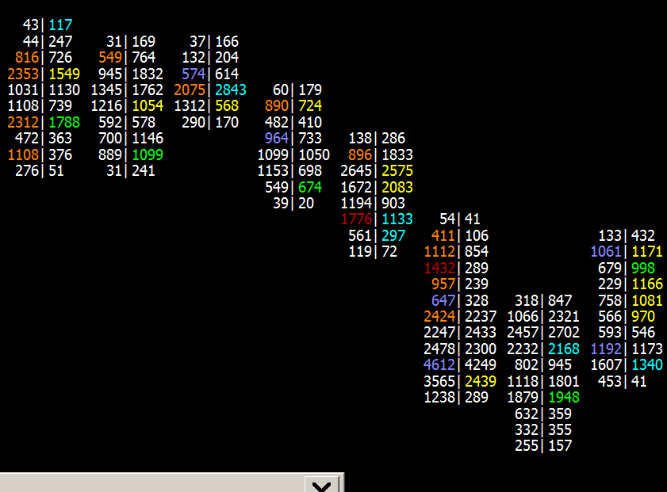{kind=link}
A Numbers Bar which is set to display Bid Volume x Ask Volume, displays Bid traded volume on the left side and Ask traded volume on the right side at a particular price level. A single price level is not able to represent the true Bid traded volume and Ask traded volume at a particular moment in time because the Bid and Ask are never at the same price level at any given moment in time.
Therefore, a diagonal comparison method needs to be done. Follow these instructions to set up the Numbers Bars for a diagonal comparison.
The instructions below should be considered an example only because there are various possible configurations. This should give you a good understanding of what is necessary for reasonable diagonal comparison type of configuration.
- Add the Numbers Bars study to the chart according to the instructions in the Step-By-Step Instructions section on this page. Stop at the step that opens the Study Settings window. Continue with the instructions below.
- Select the Settings and Inputs tab.
- Set the Column 1 Numbers Bars Text Input to Bid Vol x Ask Vol.
- The Column 1 Background Type Input can be set to anything because it is not used in this example.
- Set the Column 1 Background Coloring Method Input to None-Transparent.
- Set the Column 1 Text Coloring Method Input to Based on Diagonal Dominant Side AskVol BidVol Percentage.
- Set the Column 1 Range 0 Up Color Color Input to a neutral color which does not indicate any emphasis of the text. You may want to make this the same as the chart text color.
- Set the Column 1 Range 0 Down Color Color Input to a neutral color which does not indicate any emphasis of the text. You may want to make this the same as the chart text color.
- Set the Column 1 Percent Compare Thresholds Input as follows: 1.5, 2, 3. These represent percentages (150%, 200%, 300%). Use whatever percentages that you require. This is only an example.
The first percentage corresponds to the Column 1 Range 1 Up/Down Color. The second percentage corresponds to the Column 1 Range 2 Up/Down Color. The third percentage corresponds to the Column 1 Range 3 Up/Down Color. For more detailed explanation about how these percentages are used to color the text, refer to the specific text coloring option within the Color Settings and Logic for Numbers Bars section. - Set the other Column 1 Range 1, 2, 3 Up/Down Color Color Inputs to what you require for coloring. Each of these color settings corresponds with the 3 Column 1 Percent Compare Thresholds Input percentages.
- Press OK to close the Study Settings window.
- Press OK to close the Chart Studies window.
- Continue with the remaining relevant instructions in the Step-By-Step Instructions section.
Diagonal Comparison Example
The diagonal comparisons for Numbers Bars considers the Numbers Bars as consisting of two sides - the Bid side on the left and the Ask side on the right. The calculations are then performed for each side separately. When a comparison is made for the Bid side, the Bid Volume at the current price point of interest is compared against the Ask Volume at the next price point above the current price point for the Bid Volume. When a comparison is made for the Ask side, the Ask Volume at the current price point of interest is compared against the Bid Volume at the previous price point below the current price point for the Ask Volume.
The image below has the Column # Numbers Bars Text set to Bid Vol x Ask Vol, which displays the Bid Volume on the left and the Ask Volume on the right, and shows the values for each side that will be compared connected by an arrow. The Red Arrow shows the Bid comparison, in which the Bid Volume (48) at the given price is compared to the Ask Volume at the next higher price point (359). The Green Arrow shows the Ask comparison, in which the Ask Volume (532) at the given price is compared to the Bid Volume at the previous lower price point (1008).
{kind=link}
For this particular bar, if the Numbers Bars Column # Background Type is set to Background on Dominant Side or Background on Dominant Side Outline and the Numbers Bars Background Coloring Methods is set to Based On Diagonal Dominant Side Ask Vol Bid Vol Percentage and the Column # Percent Compare Thresholds is set to 2.5, 5.0, 7.5, then the following image shows the coloring for this particular time period:
{kind=link}
Since this is a diagonal comparison and the Column # Background type is set to Background on Dominant Side or Backround on Dominant Side Outline, the decision to use a background coloring is determined for each side (Bid side and Ask Side) individually. Starting at the highest price (top) and working down, the following are the results for the dominant decision:
- Price Point A (0 | 56)
- Bid Volume = 0: No comparison is performed since there is no Ask Volume at the next higher price point. Therefore this is not considered dominant.
- Ask Volume = 56: Is 56 > 293? Since this is False, this is not dominant and there is no background coloring.
- Price Point B (293 | 359)
- Bid Volume = 293: Is 293 > 56? Since this is True, this is dominant and the background coloring is used.
- Ask Volume = 359: Is 359 > 48? Since this is True, this is dominant and the background coloring is used.
- Price Point C (48 | 532)
- Bid Volume = 48: Is 48 > 359? Since this is False, this is not dominant and there is no background coloring.
- Ask Volume = 532: Is 532 > 1008? Since this is False, this is not dominant and there is no backgorund coloring.
- Price Point D (1008 | 830)
- Bid Volume = 1008: Is 1008 > 532? Since this is True, this is dominant and the background coloring is used.
- Ask Volume = 830: Is 830 > 682? Since this is True, this is dominant and the background coloring is used.
- Price Point E (682 | 452)
- Bid Volume = 682: Is 682 > 830? Since this is False, this is not dominant and there is no background coloring.
- Ask Volume = 452: Is 452 > 16? Since this is True, this is dominant and the background coloring is used.
- Price Point F (16 | 0)
- Bid Volume = 16: Is 16 > 452? Since this is False, this is not dominant and there is no background coloring.
- Ask Volume = 0: No comparison is performed since there is no Bid Volume at the next lower price point. Therefore this is not considered dominant.
The following image shows the progression of the calculations that goes into determining the background coloring in the image above. The numbers on the left are the input Bid Volume and Ask Volume from the time period shown above. The numbers in the middle show the calculation that will take place at each price point for each side of the bar. The numbers on the right are the final calculated values. Note the range of numbers on the right that go from 0.04 to 28.25. It is this range that drives the decision to enter the Column # Percent Compare Thresholds at 2.5, 5.0, 7.5.
{kind=link}
Pullback Column
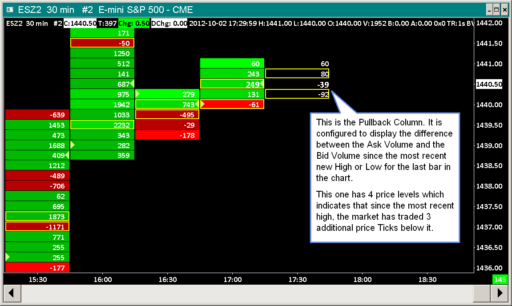{kind=link}
Definition
The pullback column represents a standard Numbers Bar, displayed at the end of the chart, which is based upon the Volume at Price data since the most recent new High or Low on the last bar in the chart. On the last bar in the chart, if a new High/Low is made or there is a new bar added to the chart, the pullback column data is reset and the Volume at Price data is accumulated from that point going forward.
Upon a new High or Low, the pullback column will consist of a single price level. If the market trades one tick away from the High, then the pullback column will consist of 2 price tick levels, a tick at the High price and 1 tick below it.
Enabling and Viewing the Pullback Column
- Refer to Adding/Modifying Studies for instructions to open the Study Settings window to change Numbers Bars study Inputs.
- The Numbers Bars study supports the ability to configure up to 3 Numbers Bars Pullback Columns at the end of the chart. You will notice in the list of Inputs for Numbers Bars study, 3 sets of Pullback Column Inputs, one for each Pullback Column. These are numbered 1 through 3.
- Configure the Pullback Column # Numbers Bars Text for each of the 3 columns you want to use. Numbers Bars can contain 1-3 columns of information. For each of the three columns, select one of the choices. For descriptions of each text type refer to Numbers Bars Text Types. If you only want to display a single column, then set Pullback Column 1 Numbers Bars Text to the Text type that you require and the other columns to No Text.
- Configure the Pullback Column # Background Type for each of the 3 columns you want to use. For details of each type, refer to Numbers Bars Background Types.
- Configure the Pullback Column # Background Coloring Method for each of the 3 columns you want to use. For details of each method, refer to Numbers Bars Background Coloring Methods.
Refer to Color Settings and Logic for Numbers Bars for descriptions of the various color settings that are used with these Background Coloring Methods. - Since the Pullback Column is displayed after the last bar in the chart, you will need to scroll the chart past the last bar in the chart to create space on the right side in order to see the Pullback Column. For instructions, refer to Scrolling the Chart in the Working with Charts page.
- For the Pullback column to function correctly it is critical that the chart Price Display Format is set correctly in Chart >> Chart Settings for the chart. Refer to Update/Apply Symbol Settings to Charts.
Example Charts
{kind=link}
In this image you can see Numbers Bars which display the difference between AskVolume and BidVolume for each price level. The yellow box that you see around a value indicates the maximum or minimum value within that particular bar.
{kind=link}
In this image you can see Numbers Bars which display the BidVolume and AskVolume individually, separated by a x, at each price level. The yellow box you see around a set of volumes indicates that the numbers are the maximum Bid Volume or maximum Ask Volume within that particular bar.
{kind=link}
This image shows a Numbers Bars study with the Column 1 Background Type Input set to Volume Profile . With this setting, the width of the colored box behind the number at each price level, is based upon the volume at the price level compared to the maximum volume among all of the price levels within the Numbers Bar.
Font Size and Style for Numbers Bars
Numbers Bars use text within each bar. Therefore, you may need to adjust the Font, Style or Size used by them.
To change the font size, first select which method is desired for determining the font size. This is controlled in the Input for Font Size Mode. There are two options available and each of these is described in more detail below.
It is necessary to understand that, in general, the Numbers Bars study is displaying a large amount of information and it may be necessary to change the bar spacing and the scale of the chart in order to adequately view the desired information. It is not possible to define a single view that works for all situations, therefore it may be necessary to make changes based on the particular view of the data at any given time.
Same As Chart Font
When the Input for Font Size Mode is set to Same As Chart Font, then the font for the Numbers Bars uses the same font as defined for the chart.
To change the Font Size or Style in this case, select Chart >> Graphics Settings on the menu. Uncheck the option for Use Global Graphics Settings Instead Of These Settings. In the Fonts tab of the same window, select the Chart Text item and then press the Select button. Modify the font properties as you require. Note that this is going to change the font size for all text in that particular chart.
Automatic with Minimum/Maximum Limits
When the Input for Font Size Mode is set to Automatic with Minimum/Maximum Limits, then the font size for the Numbers Bars is automatically set based on the spacing available between the numbers displayed in the chart. The minimum and maximum font size values are controlled by the Inputs for Minimum Font Size for Automatic Font Size and Maximum Font Size for Automatic Font Size respectively.
When this Input is in use, and the font size is too small, then it is necessary to change the Minimum Font Size for Automatic Font Size to a larger value.
Drawing Open to Close Boxes on Side of Numbers Bar
It is supported to display boxes from the Open price to the Close price on the left side of each Numbers Bar to represent the Open to Close price range. Refer to the image below for an example. Follow the instructions below to do this for an existing Numbers Bars study.
- Select Analysis >> Studies on the menu.
- In Studies to Graph list, select the existing Numbers Bars study.
- Press the Settings button.
- Select the Settings and Inputs tab.
- Set the Open and Close Marker Style Input to Open To Close Boxes.
- Set the Open Marker / Up Box Color Input to the color that you want for Up bars and the Close Marker / Down Box Color Input to the color that you want for the Down bars.
- Set the Place Open Marker / Boxes In Input to Column 1 or to whichever Numbers Bar column you want to display the boxes in.
- Press OK. Press OK.
Zero Volume Values and Repeating Volume Values
If you see price levels in Numbers Bars with zero total volume or 0x0 Bid Volume and Ask Volume, then the first thing to check is to make sure that Chart >> Chart Settings >> Data Limiting >> Volume Filter >> Exclude <= and Volume Filter >> Exclude >= are both set to 0. When these are set to 0 there is no volume filtering.
Any remaining zero volume at an entire price level, would just be the result of no trading volume at those price levels which is not a common condition.
If you see repeating volume values like in the chart image below, then this means Sierra Chart is not set to a tick by tick data configuration. For instructions to do this, refer to Tick by Tick Data Configuration.
{kind=link}
Check the Chart >> Chart Settings >> Volume at Price Multiplier for Intraday Chart setting. Normally this should be set to 1.
Also refer to Numbers Bars Accuracy.
Numbers Bars Accuracy / Values in Numbers Bars are Not Accurate
For Numbers Bars to be accurate with the Bid Volume and Ask Volume, and Total Volume at each price level it is necessary that Sierra Chart is set to a Tick by Tick data Configuration.
And it is also necessary that Sierra Chart is used with a reliable good quality data feed. It is recommended to be using the Real-time Exchange Data Feeds Available from Sierra Chart.
When using a service like Interactive Brokers the use of the Sierra Chart Exchange Data Feeds is mandatory for accuracy and consistency.
For additional information related to this, refer to Zero Volume Values and Repeating Volume Values.
Another potential problem is that the chart bar spacing is too small and therefore the volume values within Numbers bars are being cut off and are not fully visible. Increase the Chart Bar Spacing.
Volume Filtering
Trade and Trade Volume filtering is supported with Numbers Bars. There are two filtering methods available.
One method only filters out the volume of trades that are below and/or above the specified values. To set this, select Chart >> Chart Settings >> Data Limiting. Use the Volume Filter >> Exclude >= and the Volume Filter >> Exclude <= settings to set the volume that you want to exclude. The trades and trade prices will still be included in the chart. Make sure the Filter Trade Completely option is disabled.
The second method completely filters out the trades including the volume of those trades, where the volume is below and/or above the specified values. To set this, select Chart >> Chart Settings >> Data Limiting. Use the Volume Filter >> Exclude >= and the Volume Filter >> Exclude <= settings to set the volume that you want to exclude. Enable the Filter Trade Completely option.
It is essential that when using Volume Filtering, that you set Sierra Chart to a Tick by Tick Data Configuration.
For more detailed documentation, refer to Chart Settings.

For a commentary from a technical perspective in regards to large volume trades, refer to Large Volume Trades.
Using Numbers Bars on a Reversal Bars Chart
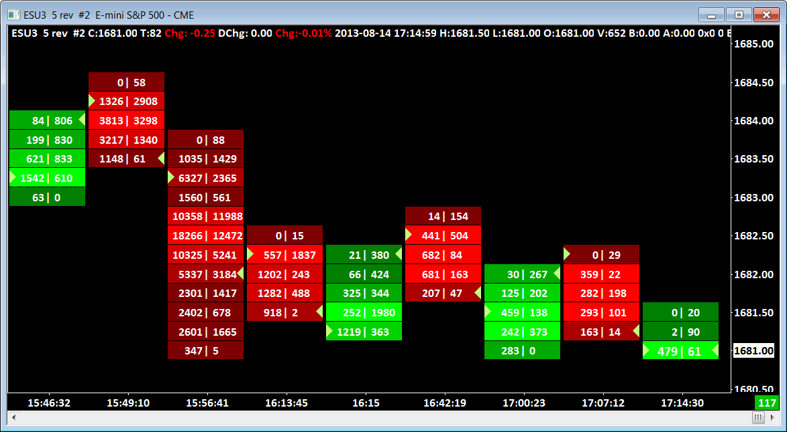{kind=link}
- Select Chart >> Chart Settings.
- In the Intraday Bar Period >> Bar Period Type list, select Reversal Bars (in Ticks).
- In the box below the Bar Period Type list, set the value to the number of price ticks the price needs to reverse by before starting a new bar. For a 5 tick Reversal bar chart, enter a value of 5. For further details, refer to Reversal Bars.
- Press OK to close the Chart Settings window.
- Follow the Step-By-Step Instructions to apply the Numbers Bars study to the Reversal Bars chart.
Reset Study to Default Settings
Like any study in Sierra Chart, it is possible to set default settings with the Numbers Bars study. This is documented in the Using Custom Default Study Settings section.
Due to the sophistication of the Numbers Bars study, if you have saved study defaults, and later find the study is not functioning as expected, you can reset it to a default state by following the instructions in the Resetting Default Study Settings For an Individual Study section.
Study to Display Total Bid Volume, Ask Volume, and Difference per Bar
To obtain a graphical display of the total Bid Volume, the total Ask Volume, and the difference between Ask Volume and Bid Volume at each chart bar, add the Bid Volume vs. Ask Volume study to the chart.
To add this study, select Analysis >> Studies on the menu. The Bid Volume vs. Ask Volume study is listed in the Studies Available section.
Using Multiple Numbers Bars Studies on the Same Chart
It is supported to use multiple copies of the Numbers Bars study on a single chart. This may be required in order to get different colors or variations that are not capable with the single Numbers Bars study.
The following instructions create an example with two Numbers Bars studies that will highlight the Maximum Bid Volume in one color and the Maximum Ask Volume in another color in the first column. Note that if the Maximum Bid and Maximum Ask occur at the same price level and if the Width for drawing the highlight is the same for both studies, then the study that is lower in the Study Selection window will be the color that is displayed, as it is on top of the other highlight. Changing the width of the lower listed study to a larger width will allow both colors to be seen, but may not be visually appealing. User preference must be used in this case to determine what option is best.
- Add the first Numbers Bars study to the chart. Ensure that there is data displayed in Column 1, otherwise setup this copy of the Numbers Bars study as desired with the addition of the following:
- Highlight Maximum Value In: Column 1
- Highlight Maximum/Minimum Value Based On: Bid Volume
- Add a second Numbers study to the chart. Go to the settings for this Numbers Bars study.
- In the settings for the second Numbers Bars study, set the following:
- Column 1 Numbers Bars Text: Same as the first Numbers Bars study.
- Column 1 Background Coloring Method: None.
- Highlight Maximum Value In: Column 1
- Maximum Highlight Color: Select a color that is different from what is used in the first Numbers Bars study.
- Highlight Maximum/Minimum Value Based On: Ask Volume
- Select OK to close the Settings Window for the Numbers Bars study.
- Select OK again, if necessary, to close the Study Selection window.
Display Ask/Bid Imbalance
The following instructions give an overview of how to color the background a specific color within the Numbers Bars when there is an imbalance of a certain percentage. In this example we only show the information for what needs to be set for the background. There are numerous options available that can be used with this highlight which are not covered in this example.
Set the Inputs for the Numbers Bars as defined for each item below:
- Column 1 Numbers Bars Text Type: Bid Vol x Ask Vol
- Column 1 Background Type: Volume Profile (other options can be chosen here, depending on what you want to see from the bars)
- Column 1 Background Coloring Method: Based on Dominant Side AskVol/BidVol Percentage (or use the Based on Diagonal Dominant Side AskVol/BidVol Percentage)
- Column 1 Range 3 Up Color: Whatever color you want to designate for the Ask Imbalance
- Column 1 Range 2/1/0 Up Color: Same as the background color
- Column 1 Range 0/1/2 Down Color: Same as the background color
- Column 1 Range 3 Down Color: Whatever Color you want to designate for the Bid imbalance
- Column 1 Percent Compare Thresholds: 0, 0, 4 (last number is the imbalance percentage you want - 4 = 400%)
Displaying Numbers Bars In Another Region
In order to display the Numbers Bars study in a region apart from region 1, you need to have the main price graph set to a different region, and then add the Numbers Bars to that region. To do this follow these instructions:
- Select Chart >> Chart Settings >> Regions and set the option for Chart Region to a region other than 1. This sets the Main Price Graph to that region.
- Select OK to close the Chart Settings window.
- Select Analysis >> Studies. Add the Numbers Bars study to the Studies to Graph.
- Highlight the Numbers Bars study in the Studies to Graph window and select the Settings button to bring up the settings for the Numbers Bars study.
- Set the Chart Region to the same region that was selected in step #1 above.
- Make any other changes desired to the Numbers Bars study.
- Select OK to close the Numbers Bars study settings window.
- Select OK to close the Chart Studies window.
Displaying Numeric Information Below Numbers Bars
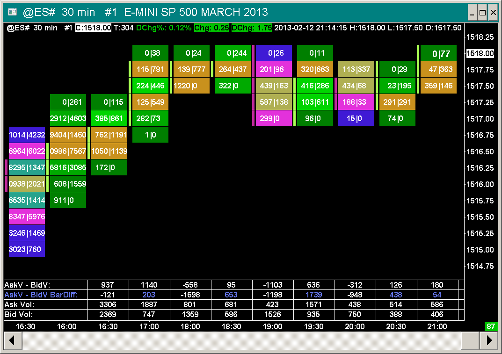{kind=link}
Various calculations based on Numbers Bars can be performed and displayed as text below the Numbers Bars graph. To use this study, follow the instructions below.
- Select Analysis >> Studies on the menu.
- In the Studies Available list, select the Numbers Bars Calculated Values or the Numbers Bars Calculated Values 2 study.
- Press the Add button.
- Press the Settings button to open the Study Settings window if it is not already open.
- Select the Subgraphs tab. Each of the available Numbers Bars Calculated Values is represented by an individual Subgraph in the study.
For the descriptions, refer to Subgraph Descriptions. Set the Draw Style to Visible for each Calculated Value Subgraph you want to display. If you do not want to display a particular Calculated Value Subgraph, then set its Draw Style to Ignore. - Each row of Calculated Values can have the text optionally color coded based upon whether a number is positive or negative or has increased or decreased compared to its previous value. On the Subgraphs tab, select a Subgraph in the list.
Make sure Auto Coloring, is set to Based On +/- or Based on Slope if you want to color code the values. The Subgraph Primary color setting (first color button), sets the color to use if the number is positive or has increased in value. The Subgraph Secondary color setting (second color button), sets the color to use if the number is negative or has decreased in value. If the number is 0, then an average of these two colors is used. - Press OK. Press OK.
- You may notice the additional calculated values below the chart are overlapping. In this case, you just need to increase the bar spacing in the chart for them to be properly displayed.
- To adjust the height of the Chart Region the table of values is displayed in, refer to Chart Window and Regions.
{kind=link}
{kind=link}
{kind=link}
Numbers Bars Calculated Values Input Descriptions
Refer to the Adding/Modifying Chart Studies section for instructions to open the Study Settings window for the Numbers Bars Calculated Values study to modify the Input settings.
- Transparent Text Background: When this Input is set to Yes, the background of the text values is transparent and will be the same as the chart background color.
- Text Background Color: This Input sets the background color of the displayed text values.
- Show Pullback Column Values: When this Input is set to Yes, then the Pullback column values for each of the displayed calculated values rows will be calculated and displayed. The pullback column is displayed after the very last bar in the chart.
- Font Size: This Input sets the font size of the text values. The default is 0. When this is set to 0, the font size is automatically set and will be the same size as the Chart Text Font set through Graphics Settings.
- Display Percent Values as Decimal or Percentage: This Input controls whether subgraphs that are defined as percentages are displayed as decimal values (.45) or as percentages (45.00%).
- Number of Decimal Places for Percent Values When Displayed as Decimal: When the Input for Display Percent Values as Decimal or Percentage is set to Decimal then this Input controls the number of decimal places to which the values will be displayed. For example, an Input of 4 would display the data as .1234.
- Labels On Right: When this Input is set to Yes, descriptive row labels will be drawn on the right side of the chart.
- Allow Values To Overlap Labels: When this Input is set to Yes, this will draw the row values even if they are within the left side label area. Another option to be aware of is that the Subgraph Short Name setting can be set to an alternative name in order to rename the row label and make it shorter. This allows the label area to be smaller. The size of the label area is determined by the largest label.
- Subgraph Display Order: This study Input provides a means by which the available Calculated Values rows can have their display order changed. This Input is a comma separated list of study Subgraph numbers (1, 2, 3, ...). By default this Input is blank, which displays the rows in the default order. This is according to the position a particular Calculated Value is at in the list of Subgraphs on the Subgraphs tab of the Study Settings window for the Numbers Bars Calculated Values study. By entering a list of Subgraph numbers for this Input, those Subgraphs will be displayed in the specified order. Any Subgraphs set with a Visible Draw Style not specified in the list, will be displayed after those specified.
- Reference Other Intraday Chart: In the case where you want to display a Numbers Bars Calculated Values study based upon Volume Filtering which is different than the chart the study applied to, then set this Input to Yes. Use the Other Intraday Chart Reference Study Input to select the particular chart you want to reference which has the Volume Filtering settings that you require.
- Other Intraday Chart Reference: Refer to the description for Reference Other Intraday Chart.
- Reset Day Calculations at Both Session Start Times: This Input when set to Yes will cause the Numbers Bars Calculated Values Subgraphs which are based on a trading day and reset at the beginning of the trading day, to also be reset at the Evening Start Time when the chart is set to use the Evening Session. For additional information, refer to Session Times.
- Include Highest Bid/Lowest Ask in Diagonal Comparisons: When this Input is set to Yes the calculations that use Diagonal Comparisons will include the data that is found at the Highest Bid Price and the Lowest Ask Price.
- Color Background Based on Value Percentage: When this Input is set to Yes the background of each calculated value is color coded according to the values set in the Percent Compare Thresholds and Range # Up/Down Color. For more information, refer to Calculated Values Background Coloring Logic. This setting overrides the Transparent Text Background and Text Background Color Inputs.
When the Color Background Based on Value Percentage Input is set to Yes, the background coloring of the last cell/bar in the chart has special handling while the bar is still developing (not closed). In particular, if the value exceeds the established Highest or Lowest values in the row, then it will not become the new Highest or Lowest value, but it will be colored using the Range 3 Up/Down colors. For more information, refer to Calculated Values Background Coloring Logic. - Determine Maximum/Minimum Values for Background From: When Color Background Based on Value Percentage is set to Yes, then this Input determines whether the Maximum and Minimum values for the background coloring percentage calculations is done for all the bars or resets for each day. This Input affects all subgraphs, not only those that reset on a daily basis. This Input has the following options:
- All Data: This option establishes a single Maximum and Minimum value from all the data that is loaded for the chart.
- Daily Data: This option establishes a Maximum and Minimum value for each day. When the Input for Reset Day Calculations at Both Session Start Times is set to Yes, then the Maximum and Minimum value will be determined separately for each Day and Evening Session, otherwise the Maximum and Minimum value will be determined for the Day and Evening Sessions together.
- Percent Compare Thresholds: This Input sets the values to be used for determining the coloring of the background of each calculated value when the Color Background Based on Value Percentage Input is set to Yes.
- Range # Up Color: These are the colors that are used for the background for positive values when the Color Background Based on Value Percentage is set to Yes. For more information, refer to Calculated Values Background Coloring Logic.
- Range # Down Color: These are the colors that are used for the background for negative values when the Color Background Based on Value Percentage is set to Yes. For more information, refer to Calculated Values Background Coloring Logic.
- Use Different Colors for Pullback and Labels: When this Input is set to Yes the color of the Labels and the text in the Pullback Column will use the value set in Pullback and Labels Text Color. Otherwise, the Labels and text in the Pullback Column use the color defined for each subgraph.
- Pullback and Labels Text Color: This is the color that is used for the Labels and the text in the Pullback Column when the Use Different Colors for Pullback and Labels Input is set to Yes.
- Color Pullback Column Background Based on Positive/Negative: When this Input is set to Yes and the Show Pullback Column Values is set to Yes, then the pullback column background will be colored based on whether the value is Positive or Negative. If the value is positive, then the background will be colored the Range 3 Up Color. If the value is negative, then the background will be colored the Range 3 Down Color.
- Volume Display Multiplier: This Input modifies the number of digits that are displayed for the Volume data in the Numbers Bars Calculated Values studies. The default value of 1 displays the data with no modifications. Selecting a value other than 1 will shift the digits to the right, thereby displaying fewer total digits. For example, a Volume of 12345 with a Volume Display Multiplier of 1 (full volume data) will display as 1234 with a Volume Display Multiplier of 0.1. And will display 123 will a Volume Display Multiplier of 0.01. Once the number of digits is exhausted the volume will display as 0.
- Use Default Number Formatting for All Subgraphs: When this Input is set to Yes the number formatting for all subgraphs will use the Value Format set for the study. Otherwise, the number formatting for specialized values will use their default format. Refer to the information in the Calculated Values Number Format section for information on which subgraphs use specialized formatting.
Calculated Values Number Format
The numbers displayed in the Numbers Bars Calculated Values study use the formatting that is defined in the Value Format box on the Settings and Inputs tab of the Numbers Bars Calculated Values page. For example, a setting of 1 will display the numbers in integer format with no decimal place (such as 21); a setting of .001 will display the numbers with a decimal point followed by three significant digits (such as 21.000).
The following subgraphs do not follow the above rule of using the study's Value Format by default, but rather use the formatting as defined for each item.
When the Input for Use Default Number Formatting for All Subgraphs is set to Yes, then all subgraphs will use the study's Value Format.
- Bar Duration: These numbers are displayed in the format hh:mm:ss, where h=Hours, m=Minutes, and s=Seconds. For example, a graph that has a time scale setting of 1 minute will display the Bar Duration values as 00:01:00, and a graph with a time scale setting of 3 hours will display the Bar Duration values as 03:00:00.
- Daily Range: These numbers are displayed in the same format as the price data for the chart these are associated with. This value is defined in the Price Display Format on the Chart >> Chart Settings page.
- Weekly Range: These numbers are displayed in the same format as the price data for the chart these are associated with. This value is defined in the Price Display Format on the Chart >> Chart Settings page.
- Average Volume per Trade: These numbers are displayed in the same format as the price data for the chart these are associated with (Price Display Format on the Chart >> Chart Settings page) as long as that format is 2 or more significant digits after the decimal. Otherwise these numbers will default to 2 significant digits after the decimal. For example: 1.43.
- High Low Range: These numbers are displayed in the same format as the price data for the chart these are associated with. This value is defined in the Price Display Format on the Chart >> Chart Settings page.
- Point of Control Value: These numbers are displayed in the same format as the price data for the chart these are associated with. This value is defined in the Price Display Format on the Chart >> Chart Settings page.
- Average Bid Volume per Trade: These numbers are displayed in the same format as the price data for the chart these are associated with (Price Display Format on the Chart >> Chart Settings page) as long as that format is 2 or more significant digits after the decimal. Otherwise these numbers will default to 2 significant digits after the decimal. For example: 1.43.
- Average Ask Volume per Trade: These numbers are displayed in the same format as the price data for the chart these are associated with (Price Display Format on the Chart >> Chart Settings page) as long as that format is 2 or more significant digits after the decimal. Otherwise these numbers will default to 2 significant digits after the decimal. For example: 1.43.
- Bid Volume per Second: These numbers are displayed in the same format as the price data for the chart these are associated with (Price Display Format on the Chart >> Chart Settings page) as long as that format is 2 or more significant digits after the decimal. Otherwise these numbers will default to 2 significant digits after the decimal. For example: 1.43.
- Ask Volume per Second: These numbers are displayed in the same format as the price data for the chart these are associated with (Price Display Format on the Chart >> Chart Settings page) as long as that format is 2 or more significant digits after the decimal. Otherwise these numbers will default to 2 significant digits after the decimal. For example: 1.43.
- Ask Volume Bid Volume Difference Percent: These numbers are displayed as a Percentage value with two decimal places and a % sign (for example: 82.37%) when the Input for Use Default Number Formatting for All Subgraphs is set to No, otherwise these numbers will follow the formatting defined in the Value Format setting for the study.
- Ask Volume Percent: These numbers are displayed as a Percentage value with two decimal places and a % sign (for example: 82.37%) when the Input for Use Default Number Formatting for All Subgraphs is set to No, otherwise these numbers will follow the formatting defined in the Value Format setting for the study.
- Bid Volume Percent: These numbers are displayed as a Percentage value with two decimal places and a % sign (for example: 82.37%) when the Input for Use Default Number Formatting for All Subgraphs is set to No, otherwise these numbers will follow the formatting defined in the Value Format setting for the study.
- Finish AskVol BidVol Diff %: These numbers are displayed as a Percentage value with two decimal places and a % sign (for example: 82.37%) when the Input for Use Default Number Formatting for All Subgraphs is set to No, otherwise these numbers will follow the formatting defined in the Value Format setting for the study.
- Volume / Second: These numbers are displayed in the same format as the price data for the chart these are associated with (Price Display Format on the Chart >> Chart Settings page) as long as that format is 2 or more significant digits after the decimal. Otherwise these numbers will default to 2 significant digits after the decimal. For example: 1.43.
- Low Bid Volume Percent: These numbers are displayed as a Percentage value with two decimal places and a % sign (for example: 82.37%) when the Input for Use Default Number Formatting for All Subgraphs is set to No, otherwise these numbers will follow the formatting defined in the Value Format setting for the study.
- High Ask Volume Percent: These numbers are displayed as a Percentage value with two decimal places and a % sign (for example: 82.37%) when the Input for Use Default Number Formatting for All Subgraphs is set to No, otherwise these numbers will follow the formatting defined in the Value Format setting for the study.
- Dominant Ask Bid Percentage: These numbers are displayed as a Percentage value with two decimal places and a % sign (for example: 82.37%) when the Input for Use Default Number Formatting for All Subgraphs is set to No, otherwise these numbers will follow the formatting defined in the Value Format setting for the study.
- Average Ask Volume: These numbers are displayed in the same format as the price data for the chart these are associated with (Price Display Format on the Chart >> Chart Settings page) as long as that format is 2 or more significant digits after the decimal. Otherwise these numbers will default to 2 significant digits after the decimal. For example: 1.43.
- Average Bid Volume: These numbers are displayed in the same format as the price data for the chart these are associated with (Price Display Format on the Chart >> Chart Settings page) as long as that format is 2 or more significant digits after the decimal. Otherwise these numbers will default to 2 significant digits after the decimal. For example: 1.43.
- Ask Volume Bid Volume Difference per Tick: These numbers are displayed in the same format as the price data for the chart these are associated with (Price Display Format on the Chart >> Chart Settings page) as long as that format is 2 or more significant digits after the decimal. Otherwise these numbers will default to 2 significant digits after the decimal. For example: 1.43.
Displaying Large Numbers in Short Form with Suffix
In order to display very large numbers in a compact format, the Value Format can be set to Large Integer with Suffix. This will display numbers beyond the range of -9,999 to +9,999 with only a few significant digits and the suffix of K (for thousands), M (for millions), G (for Giga or Billions), T (for Tera or Trillions), or P (for Peta or Quadrillions).
The specific subgraphs listed in the Calculated Values Number Format that do not use the selected Value Format will also not be changed to this short form when the Value Format is set to Large Integer with Suffix unless the Input for Use Default Formatting for All Subgraphs is set to Yes.
Customizing the Calculated Values Rows Display Order
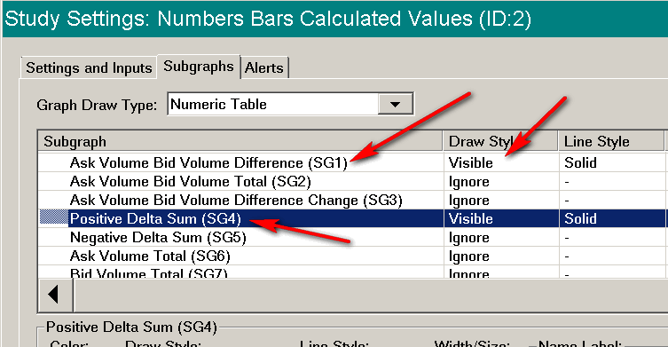{kind=link}
It is possible to customize the display order of the Calculated Values rows. Follow these instructions:
- Open the Study Settings window for the Numbers Bars Calculated Values study. Select Analysis >> Studies on the menu.
- In the Studies to Graph list, select the Numbers Bars Calculated Values study.
- Press the Settings button.
- Select the Subgraphs tab. Each of the available Numbers Bars Calculated Values is represented by an individual Subgraph in the study. You will notice that each subgraphs has a number. Refer to the image. The first one is 1. The numbers are after SG.
- To control the display order of these Subgraphs in the table on the chart, you need to create a comma separated list of the subgraphs numbers in the order that you want the Subgraphs rows to be displayed. For example: 4, 1, 2.
- Enter this comma separated list of Subgraph numbers in the Subgraph Display Order Input on the Settings and Inputs tab.
- Press OK. Press OK.
Numbers Bars Calculated Values Subgraph Descriptions
Below are descriptions for each of the Numbers Bars Calculated Values Subgraphs.
Many of the calculations described below use Ask Volume (Ask Trade Volume) and Bid Volume (Bid Trade Volume).
- Ask Volume Bid Volume Difference (AskV - BidV): This is the difference between the total Ask Volume and the total Bid Volume for the entire Numbers Bar.
- Ask Volume & Bid Volume Total (AskV + BidV): This is the total of the Ask Volume and Bid Volume for the entire Numbers Bar.
- Ask Volume & Bid Volume Difference Change (AskV - BidV BarDiff): This is the difference between: The Ask Volume minus Bid Volume for the entire Numbers Bar and the Ask Volume minus Bid Volume for the entire prior Numbers Bar.
- Positive Delta Total (+Delta Sum/Total): At each price level within a Numbers Bar, the difference between the Ask Volume and Bid Volume is calculated. All the differences at each price level which are positive, are summed together. This Subgraph displays this sum for the given Numbers bar.
- Negative Delta Total (-Delta Sum/Total): At each price level within a Numbers Bar, the difference between the Ask Volume and Bid Volume is calculated. All the differences at each price level which are negative, are summed together. This Subgraph displays this sum for the given Numbers bar.
- Ask Volume Total (Ask Vol): This is a total of all of the Ask Volume for the given Numbers Bar.
- Bid Volume Total (Bid Vol): This is a total of all of the Bid Volume for the given Numbers Bar.
- Maximum Ask Volume Bid Volume Difference (Ask Volume Bid Volume Difference High) (Max Ask Vol-Bid Vol): During the formation of each chart bar, as it is built from the tick by tick data, the difference between the Ask traded volume and the Bid traded volume is calculated. The Maximum Ask Volume Bid Volume Difference is the maximum value of this difference which existed during the formation of the chart bar.
This value is also used in many of the other Numbers Bars Calculated Values Subgraphs. - Minimum Ask Volume Bid Volume Difference (Ask Volume Bid Volume Difference Low) (Min Ask Vol-Bid Vol):
During the formation of each chart bar, as it is built from the tick by tick data, the difference between the Ask traded volume and the Bid traded volume is calculated. The Minimum Ask Volume Bid Volume Difference is the minimum value of this difference which existed during the formation of the chart bar.
This value is also used in many of the other Numbers Bars Calculated Values Subgraphs. - Cumulative Sum of Ask Volume & Bid Volume Difference - Day (Day Cumulative AskV - BidV): This is a cumulative bar to bar sum from the beginning of the day based according to the Session Times for the chart, of the difference between the total Ask Volume and the total Bid Volume for each entire Numbers Bar. This is the same as the Cumulative Delta Bars - Volume study.
- Ask Volume Bid Volume Difference Percent (AskV - BidV %): This is the percentage that the difference between the Ask Volume and the Bid Volume is of the total volume. The volume difference is calculated between the Ask Volume and the Bid Volume. This is the percentage that this volume difference is of the total volume.
- Number of Trades (Number Trades): This is the total number of trades for the Numbers Bar.
When using the Volume Filter in Chart >> Chart Settings and Filter Trade Completely is not enabled, then this will indicate the actual total number of trades for the complete Numbers Bar even with the filtering being used. - Total Volume (Total Vol): This is the total volume of the trades for the Numbers Bar.
- Total Volume Bar Difference (Vol Bar Diff): This is the Total Volume at a Numbers Bar minus the Total Volume of the prior Numbers Bar. For the first Numbers Bar in the chart, this is the Total Volume of that Numbers Bar.
- Average Volume Per Trade (Avg Vol/Trade): This is the average volume for the number of trades in the Numbers Bar. This is calculated by the Total Volume divided by the Number of Trades.
When using the Volume Filter in Chart >> Chart Settings and Filter Trade Completely is not enabled, then the Average Volume Per Trade value will be inaccurate. Therefore, it is necessary to enable Filter Trade Completely for Average Volume Per Trade to be accurate. - Average Volume Per Price (Avg Vol/Price): This is the average volume for each price of the Numbers Bar.
- Ask Volume Percent (AskV %): This is the percentage that the Ask Volume is of the total volume for the Numbers Bar.
- Bid Volume Percent (BidV %): This is the percentage that the Bid Volume is of the total volume for the Numbers Bar.
- Cumulative Sum of Ask Volume & Bid Volume Difference - All (All Cumulative AskV - BidV): This is a cumulative bar to bar sum from the beginning of the chart of the difference between the total Ask Volume and the total Bid Volume for each entire Numbers Bar.
- Point Of Control Volume (POC Vol): This is the volume of the price level within the Numbers Bar that has the maximum volume.
- Cumulative Delta Volume High (Cum Delta High): This is the bar High value of the Cumulative Delta Bars - Volume study at the same bar as the candlestick bar from the study. This value is based upon the Cumulative Delta Bars data being reset at the start of the trading day.
- Cumulative Delta Volume Low (Cum Delta Low): This is the bar Low value of the Cumulative Delta Bars - Volume study at the same bar as the candlestick bar from the study. This value is based upon the Cumulative Delta Bars data being reset at the start of the trading day.
- Ask Bid Difference To Max/Min (Ask Bid Diff To Max/Min):
If the difference between the Ask Volume and the Bid Volume for the entire Numbers Bar is >= 0, then the Minimum of Ask Volume & Bid Volume Difference calculated value is subtracted from this difference.
If the difference between the Ask Volume and the Bid Volume for the entire Numbers Bar is < 0, then the Maximum of Ask Volume & Bid Volume Difference calculated value is subtracted from this difference. - Ask Bid Tick Difference (AskT - BidT): This is the difference between the number of trades at the Ask price and the number of trades at the Bid price for the bar.
- Cumulative Sum of Ask Ticks Bid Ticks Difference - Day (Day Cumulative AskT - BidT): This calculation first involves taking the difference between the number of trades at the Ask price and the number of trades at the Bid price. At each bar in the chart, this is a cumulative sum of this difference. This cumulative sum is reset at the start of the trading day.
- Cumulative Delta Trades/Ticks High (Cum Delta Trades High): This is the bar High value of the Cumulative Delta Bars - Trades study at the same bar as the candlestick bar from the study. This value is based upon the Cumulative Delta Bars data being reset at the start of the trading day.
- Cumulative Delta Trades/Ticks Low (Cum Delta Trades Low): This is the bar Low value of the Cumulative Delta Bars - Trades study at the same bar as the candlestick bar from the study. This value is based upon the Cumulative Delta Bars data being reset at the start of the trading day.
- Maximum Ask Bid Vol Diff to Closing Ask Bid Vol Diff: This is the difference between the: Maximum Ask Volume and Bid Volume difference for a Numbers Bar, and the closing Ask Volume and Bid Volume difference for the same Numbers Bar.
- Minimum Ask Bid Vol Diff to Closing Ask Bid Vol Diff: This is the difference between the: Minimum Ask Volume and Bid Volume difference for a Numbers Bar, and the closing Ask Volume and Bid Volume difference for the same Numbers Bar.
- Bar Duration: This is the time duration of the chart bar. The actual numeric value is a SCDateTime. This value can also be referenced in an Alert Condition Formula. This particular Numbers Bars Calculated Value is Subgraph 30. An example Alert Formula is SG30 < TIME(0, 0, 30). This means when the Bar duration is less than 30 seconds return TRUE. For this to be properly evaluated it is necessary to enable the Use Full Precision when Evaluating Alert Formula Alert Option.
- Daily Range: This is the High to Low price range as of the chart column it is displayed at, since the beginning of the trading day.
- Weekly Range: This is the High to Low price range as of the chart column it is displayed at, since the beginning of the week. A week is considered to begin on Sunday.
- Finish Ask Volume Bid Volume Difference (Finish AskVol BidVol Diff): The calculation is as follows:
If the Ask Volume Bid Volume Difference High was more recently increased as compared to the Ask Volume Bid Volume Difference Low being more recently decreased, then Finish AskVol BidVol Diff equals the Ask Volume Bid Volume Difference for the bar minus the Ask Volume Bid Volume Difference High for the bar.
Otherwise, if the Ask Volume Bid Volume Difference Low was more recently decreased as compared to the Ask Volume Bid Volume Difference High being more recently increased, then Finish AskVol BidVol Diff equals the Ask Volume Bid Volume Difference for the bar minus the Ask Volume Bid Volume Difference Low for the bar. - Finish Ask Volume Bid Volume Difference Percent (Finish AskVol BidVol Diff %): The calculation is as follows:
If the Ask Volume Bid Volume Difference High was more recently increased as compared to the Ask Volume Bid Volume Difference Low being more recently decreased, then Finish AskVol BidVol Diff % equals the absolute value of the Finish AskVol BidVol Diff for the current bar divided by the Ask Volume Bid Volume Difference High for the current bar. This absolute value is then multiplied by 100.
Otherwise, if the Ask Volume Bid Volume Difference Low was more recently decreased as compared to the Ask Volume Bid Volume Difference High being more recently increased, then Finish AskVol BidVol Diff % equals the absolute value of the Finish AskVol BidVol Diff for the current bar divided by the Ask Volume Bid Volume Difference Low for the current bar. This absolute value is then multiplied by 100. - Volume/Sec: This gives the Total Volume per Second for the bar. This is calculated by taking the total volume for the bar and dividing by the number of seconds for the bar.
- High Pullback Ask Volume and Bid Volume Difference (High Pullback Ask/Bid Vol Diff): This is the difference between Ask Volume and Bid Volume since the last new High price at the chart bar that the value is displayed for in the calculated values table. For information about Pullback calculations, refer to Pullback Column.
It is necessary to enable the Historical Pullback Data calculations in Chart >> Chart Settings >> Chart Data in order to get data for this particular Subgraph. Refer to Historical Pullback Data.
Inherently this cannot be supported and provides no value for the pullback column after the last bar in the chart. Only for historical bars in the chart. - Low Pullback Ask Volume and Bid Volume Difference (Low Pullback Ask/Bid Vol Diff): This is the difference between Ask Volume and Bid Volume since the last new Low price at the chart bar that the value is displayed for in the calculated values table. For information about Pullback calculations, refer to Pullback Column.
It is necessary to enable the Historical Pullback Data calculations in Chart >> Chart Settings >> Chart Data in order to get data for this particular Subgraph. Refer to Historical Pullback Data.
Inherently this cannot be supported and provides no value for the pullback column after the last bar in the chart. Only for historical bars in the chart. - Cumulative Delta Minus Delta: For each bar in the chart, this is the Ask Volume and Bid Volume difference cumulative sum (Cumulative Delta Bars - Volume) since the beginning of the chart minus the difference of the Ask Volume and Bid Volume for the bar being calculated. This calculation does not reset at the start of the trading day. This calculation is not performed for the pullback column.
- Cumulative Volume - Day: This displays the accumulated volume at each time period starting at the beginning of each day. Therefore, the first bar of the day will show the total volume for that time period. The next time period will show the sum of the volumes from the first time period and the second time period. The third time period will show the sum of the the accumulated volumes displayed in the second time period added to the volume of the third time period, and so on.
- High-Low Range: This displays the difference between the High Price and the Low Price for the bar period.
This value will not be displayed in the Pullback column and cannot be supported for that column. - Point of Control Value: This displays the price value of the Point of Control. The Point of Control is the price point at which the volume is the greatest.
- Diagonal Positive Delta Sum: The difference between the Ask Volume at a price level and the Bid Volume at the price level below (diagonal) is calculated. If this difference is positive, then this positive volume difference is added to the total Diagonal Positive Delta Sum for the bar. This number is always positive. The Ask Volume at the lowest price is added to the Diagonal Positive Delta Sum since there is no lower Bid Volume to compare it to.
- Diagonal Negative Delta Sum: The difference between the Ask Volume at a price level and the Bid Volume at the price level below (diagonal) is calculated. If this difference is negative, then this volume difference is added to the total Diagonal Negative Delta Sum for the bar. This number is always positive. The Bid Volume at the highest price is added to the Diagonal Negative Delta Sum since there is no higher Ask Volume to compare it to.
- Low Bid Volume Percent: This displays the quotient of the bid volumes at the two lowest price points displayed as a percentage. So, Low Bid Volume Percent = Bid Volume at Second Lowest Price Point / Bid Volume at Lowest Price Point * 100. If there is only a single price point that contains volume data, then the Low Bid Volume Percent will be 0.
- High Ask Volume Percent: This displays the quotient of the ask volumes at the two highest price points displayed as a percentage. So, High Ask Volume Percent = Ask Volume at Second Highest Price Point / Ask Volume at Highest Price Point * 100. If there is only a single price point that contains volume data, then the High Ask Volume Percent will be 0.
- Cumulative Delta Up/Down Tick Volume: This displays the cumulative sum of the difference between the Total Up Tick Volume and Total Down Tick Volume. The sum resets each data at the start of the session.
- Total Up Tick Volume: This displays the Total Up Tick Volume for the bar.
- Total Down Tick Volume: This displays the Total Down Tick Volume for the bar.
- Up/Down Tick Volume Difference: This displays the difference between the Total Up Tick Volume and the Total Down Tick Volume.
- Average Bid Trade Size: This displays the average size of Bid Trades for the bar.
- Average Ask Trade Size: This displays the average size of Ask Trades for the bar.
- Bid Volume per Second: This displays the Total Bid Volume of the bar divided by the Duration of the bar in seconds.
- Ask Volume per Second: This displays the Total Ask Volume of the bar divided by the Duration of the bar in seconds.
- Grid Lines: Set the Draw Style for this Subgraph to Visible to display grid lines between the numbers for each time period and the different Subgraphs that are made visible.
Numbers Bars Calculated Values 2 Subgraph Descriptions
Below are descriptions for each of the Numbers Bars Calculated Values 2 Subgraphs.
Many of the calculations described below use Ask Volume (Ask Trade Volume) and Bid Volume (Bid Trade Volume).
- Median Ask Volume: This displays the Median Ask Volume across the prices within the bar. When the number of prices is even, the value is the average of the central 2 Ask Volumes.
- Median Bid Volume: This displays the Median Bid Volume across the prices within the bar. When the number of prices is even, the value is the average of the central 2 Bid Volumes.
- Dominant Ask or Bid Percentage: This displays the dominant side Ask or Bid volume percentage of the total volume.
- Average Non-Zero Ask Volume: This displays the average non-zero Ask Volume for the bar. This sums up the non-zero Ask Volumes at each price and then divides by the total number of these Ask Volumes to determine the average.
- Average Non-Zero Bid Volume: This displays the average non-zero Bid Volume for the bar. This sums up the non-zero Bid Volumes at each price and then divides by the total number of these Bid Volumes to determine the average.
- Ask Volume Bid Volume Difference Per Tick: This displays the difference between the total Ask Volume and the total Bid Volume divided by the range of the data in the bar per tick.
For example, if the Total Ask Volume is 1000 and the Total Bid Volume is 1500 and the data spans prices from 2600.50 to 2602.00 with a Tick Size of 0.25, then the displayed value would be -83.33 ((1000 - 1500) / ((2602.00 - 2600.5) / 0.25)). - Sum Bid Pull/Stack: This displays the sum of all of the Bid side market depth pulling and stacking values. Only the value at the very last chart column is updated for this Subgraph. At least one of the Pulling/Stacking columns needs to be displayed in the DOM in order to see this subgraph information.
- Sum Ask Pull/Stack: This displays the sum of all of the Ask side market depth pulling and stacking values. Only the value at the very last chart column is updated for this Subgraph. At least one of the Pulling/Stacking columns needs to be displayed in the DOM in order to see this subgraph information.
- Ask/Bid Pull/Stack Sum Diff: This displays the difference between Sum Ask Pull/Stack and Sum Bid Pull/Stack. Only the value at the very last chart column is updated for this Subgraph. At least one of the Pulling/Stacking columns needs to be displayed in the DOM in order to see this subgraph information.
- Volume Above Volume POC: This displays the total volume that is above the Volume Point of Control.
- Volume Below Volume POC: This displays the total volume that is below the Volume Point of Control.
- Time Since Price Touched Bar High: This displays the amount of time that has elapsed since the last price was at the high of the bar. This value will only be displayed for live data and is not calculated for historical data. Therefore, any recalculation of the chart will remove all previous values that were displayed.
- Time Since Price Touched Bar Low: This displays the amount of time that has elapsed since the last price was at the low of the bar. This value will only be displayed for live data and is not calculated for historical data. Therefore, any recalculation of the chart will remove all previous values that were displayed.
- Average Ask Volume per Price: This displays the Total Ask Volume divided by the number of prices that make up the bar, less 1 (this can be thought of as the number of ticks that make up the bar).
- Average Bid Volume per Price: This displays the Total Bid Volume divided by the number of prices that make up the bar, less 1 (this can be thought of as the number of ticks that make up the bar).
Referencing Numbers Bars Calculated Values Subgraphs in Alert Formulas
Study and Chart Alert Formulas can make reference to the Subgraph values of the Numbers Bars Calculated Values study.
For any value that is displayed in the Numbers Bars Calculated Values as an Integer (no decimal point) the method to do this is the same as any other study. For example, if you want to reference the Ask Volume Bid Volume Difference (SG1) Subgraph, then use this in the Alert Formula ID#.SG1 where # is the study ID number.
In order to use values that are displayed as a Floating Point number (contains a decimal value), you would have to change the Value Format of the Numbers Bars Calculated Values to be at least as many decimal places as the displayed data. For example, if the value shown is 3875.25, then you would need to set the Value Format to 0.01 (or to a value with more decimal places). You can then access the full number from the subgraph for this data.
In order to use values that are displayed as a Percentage by default (such as Ask Volume Bid Volume Difference Percent) in an Alert formula, it is first necessary to set the Input for Use Default Number Formatting for All Subgraphs to Yes. When Use Default Number Formatting for All Subgraphs is set to Yes, then the Subgraph can be used in an Alert formula in the same way as other studies. For example, you can reference the Subgraph in an Alert Formula as ID#.SG11 where # is the study ID number.
In order to use values that are displayed as Time by default (such as Bar Duration in an Alert formula, it is first necessary to set the Input for Use Default Number Formatting for All Subgraphs to Yes and also to set the Value Format for the Numbers Bars Calculated Values Study to the maximum precision (0.00000001). This will then display the duration as a serial date/time value which then can be referenced in an alert.
Calculated Values Background Coloring Logic
{kind=link}
When the Numbers Bars Calculated Values Input Color Background Based on Value Percentage is set to Yes, then each cell within the Numbers Bars Calculated Values table will have the background colored according to the following rules. Note that the coloring does not apply to the Labels or the Pullback Column.
Each row is evaluated on its own. Therefore, there is no comparisons being done between rows of the table. The following explanation will refer to a single row, although the calculations are the same for all rows within the table.
Within each row, the highest and lowest value can be established from all the data that is present, or it can be done per day or per session. When determining highest and lowest values either per day or per session, all rows are calculated using this method, not only those items that have a Daily or Session reset time. For more information, refer to the Input for Determine Maximum/Minimum Values for Background Coloring From.
When using Maximum and Minimum values on a daily or per session basis, the calculations described below, which are for all data in the chart, are the same. The only difference is the actual Maximum and Minimum values.
The last cell/bar in a row will follow the same rules as below, but until the bar is closed, the values that are seen as the cell updates will not be used to establish a Highest or Lowest value. If a value at the last bar exceeds the existing Highest or Lowest value, then that cell is colored the Range 3 Up/Down color, but the rest of the background coloring in the row will not update. Once the last bar closes, if it still establishes a new Highest or Lowest value, then the rest of the cells in the row will be updated accordingly.
- First, the Highest value and the Lowest value are determined for all values in the row (when Determine Maximum/Minimum Values for Background Coloring From is set to All Data) and an Up Range and Down Range are calculated. The values which are not within the current visible view of the chart are also used.
- If the Highest value is positive and the Lowest value is negative, then the Up Range is defined from the Highest Value to 0 and the Down Range is defined from the Lowest value to 0 (Up Range = Highest and Down Range = Lowest).
- If both values are positive, then the Up Range is determined to be the difference between the Highest value and the Lowest value (Up Range = Highest - Lowest).
- If both values are negative, the the Lower Range is determined to be the difference between the Lowest value and the Highest value (Down Range = Lowest - Highest).
- The Up Range and Down Range are then divided into four percentage groups as defined by the Percent Compare Thresholds. For example, if the Percent Compare Thresholds are set to .25, .50, and .75 then each range is divided into the following groups with each group mapping to a Color Range:
- 0.0% - 24.9% Up/Down Range 0 Color
- 25.0% - 49.9% Up/Down Range 1 Color
- 50.0% - 74.9% Up/Down Range 2 Color
- 75.0% - 100.0% Up/Down Range 3 Color
- The percentage value of each value in the row is determined and the appropriate coloring selected. Positive values are assigned into the Up Range # Colors and Negative values are assigned into the Down Range # Colors.
- If the Highest value is positive and the Lowest value is negative, then a cell with a Positive value has its percent value calculated as Percentage = Cell Value / Highest Value; and a cell with a Negative value has its percent value calculated as Percentage = Cell Value / Lowest Value.
- If the Highest and Lowest values are both Positive, then each cell's percent value is calculated as Percentage = (Cell Value - Lowest Value) / (Highest Value - Lowest Value).
- If the Highest and Lowest values are both Negative, then each cell's percent value is calculated as Percentage = (Cell Value - Highest Value) / (Lowest Value - Highest Value).
- Zero values are handled special, depending on the range of values in the row. If the row is all Positive values, then a 0 value is mapped into the Up Range 0 Color. If the row is all Negative values, then a 0 value is mapped into the Down Range 0 Color. If the row values span across zero (both positive and negative values) then a 0 value is mapped into the Up Range 0 Color.
- If a row has all the same values (including all zero values) then the background coloring for all cells in that row uses the Up Range 0 Color.
NumbersBars Calculated Values Background Coloring Example
The following gives an example of how the Background Coloring of the Numbers Bars Calculated Values is determined. The image below shows how the background will be colored in this example.
{kind=link}
- Input Settings:
- Color Background Based on Value Percentages: Yes
- Percent Compare Thresholds: .25, .50, .75
- Range 3 Up Color: R: 0, G: 255, B: 0
- Range 2 Up Color: R: 0, G: 212, B: 0
- Range 1 Up Color: R: 0, G: 170, B: 0
- Range 0 Up Color: R: 0, G: 127, B: 0
- Range 0 Down Color: R: 127, G: 0, B: 0
- Range 1 Down Color: R: 170, G: 0, B: 0
- Range 2 Down Color: R: 212, G: 0, B: 0
- Range 3 Down Color: R: 255, G: 0, B: 0
- Row Values:
- -4697
- 5845
- 470
- 687
- -3225
- -3458
- Percent Values for Row
- -4697 → 1.00 (-4697 / -4697 = 1.00)
- 5845 → 1.00 (5845 / 5845 = 1.00)
- 470 → 0.08 (470 / 5845 = 0.08)
- 687 → 0.11 (687 / 5845 = 0.11)
- -3225 → 0.69 (-3225 / -4697 = 0.69)
- -3458 → 0.74 (-3458 / -4697 = 0.74)
- Background Color Mapping
- -4697 (1.00) → Down Range 3 Color (1.00 > 0.75 and Negative Value)
- 5845 (1.00) → Up Range 3 Color (1.00 > 0.75 and Positive Value)
- 470 (0.08) → Up Range 0 Color (0.08 < 0.25 and Positive Value)
- 687 (0.11) → Up Range 0 Color (0.11 > 0.25 and Positive Value)
- -3225 (0.69) → Down Range 2 Color (0.50 < 0.69 < 0.75 and Negative Value)
- -3458 (0.74) → Down Range 2 Color (0.50 < 0.74 < 0.75 and Negative Value)
Numbers Bars Calculated Values Background Coloring Example 2
The following gives an example of the Numbers Bars Calculated Values showing how the last bar in a chart will not affect the background coloring of the rest of the row if the bar happens to be higher or lower than the established high and low. Once the last bar is closed, however, the final value can cause the rest of the bar background colors to change if it establishes a new high or low.
The following Input values have been changed from the default and are important for this example. In particular, the values that are in the top 95% are displayed with a Light Blue background to make them more obvious.
- Color Background Based on Value Percentage: Yes
- Percent Compare Thresholds: .25, .50, .95
- Range 3 Up Color: Light Blue (R: 128, G: 255, B:255)
- Subgraph Displayed: Bid Volume Percent
The image below shows the highest value in the row is at the second bar in from the left at a time of 16:15 with a value of 56.83% and has a background of Light Blue. The rest of the colors are shaded based on this established highest value.
{kind=link}
The image below shows the last bar at a time of 04:15 has now exceeded the previously established high of 56.83% with a new high value of 66.67%, therefore the last bar is also colored Light Blue. The rest of the bars, however, have not changed their coloring, as the last bar has not closed yet, and this highest value may not be the same value that is established when the bar closes. Therefore, we do not use this temporary value as a new high.
{kind=link}
The image below shows the bar at 4:15 has now closed and another bar is starting to its right. The bar at 4:15 did not close with a value that is greater than the already established high value and did not close with a value that is less than the already established low value. This bar, therefore, has a background coloring of Green, and the rest of the bars have not changed their background colors.
{kind=link}
Overlaying a Numbers Bars Calculated Values Study from Another Chart
It is supported to display more than one Numbers Bars Calculated Values study on a chart.
The reason why you would want to do this is when you want to specify different Volume Filtering settings for the Numbers Bars Calculated Values study compared to the Volume Filtering settings on the Destination chart it is applied to. This is done by having the Numbers Bars Calculated Values study refer to another chart with different Volume Filtering settings.
Another reason would be you want to add another Numbers Bars Calculated Values study to a chart is to have it refer to a chart for a different symbol.
Follow the instructions below to add a Numbers Bars Calculated Values study that references another chart.
- Open another Intraday chart through File >> Find Symbol. This chart is called the Source chart.
- For this Source Intraday chart, set the Volume Filtering for it as required. Make sure that Filter Trade Completely is unchecked on the Source chart. This must be unchecked.
- Add to the Source chart the Numbers Bars Calculated Values study. For instructions refer to the Adding/Modifying studies section. This is necessary for the Source chart to maintain the necessary data arrays which are relied upon by the Destination chart. The default configuration for this study is acceptable. This study can be kept hidden.
- Go to the Destination chart where you want to add the Numbers Bars Calculated Values study. This is not the chart opened in Step 1.
- Add the Numbers Bars Calculated Values study to the chart following the Displaying Numeric Information Below Numbers Bars instructions.
- Open the Study Settings window for the Numbers Bars Calculated Values study.
- Select the Settings and Inputs tab.
- Set the Reference Other Intraday Chart Input to Yes.
- Set the Other Intraday Chart Reference Input to the chart opened at Step 1 above.
- The chart being referenced may reload to have its settings match the destination chart.
Additional words: Footprint
*Last modified Monday, 22nd May, 2023.